| VRMMOでサモナー始めました3 | |
| テトメト | |
| TOブックス (2018) | |
召喚獣も4体まで増えて、大所帯になってきたパーティー。そこへ新たに猫のノゾミの召喚にも成功！ だが猫特有の気まぐれにより、ユウはなかなかもふらせてもらえない......。やきもきする日々が続く中、全プレイヤー参加型イベント「モンスター大侵攻」に向けてレベルアップに励んでいく。その最中、もふり甲斐満点のしっぽを持つモンスターが現れ、見た瞬間にユウのセンサーが反応！ 新たなもふもふに飢えていた彼は、絶対に召喚してやると心に誓うのだった。
Illustration：秋咲りお
Design：BEE-PEE
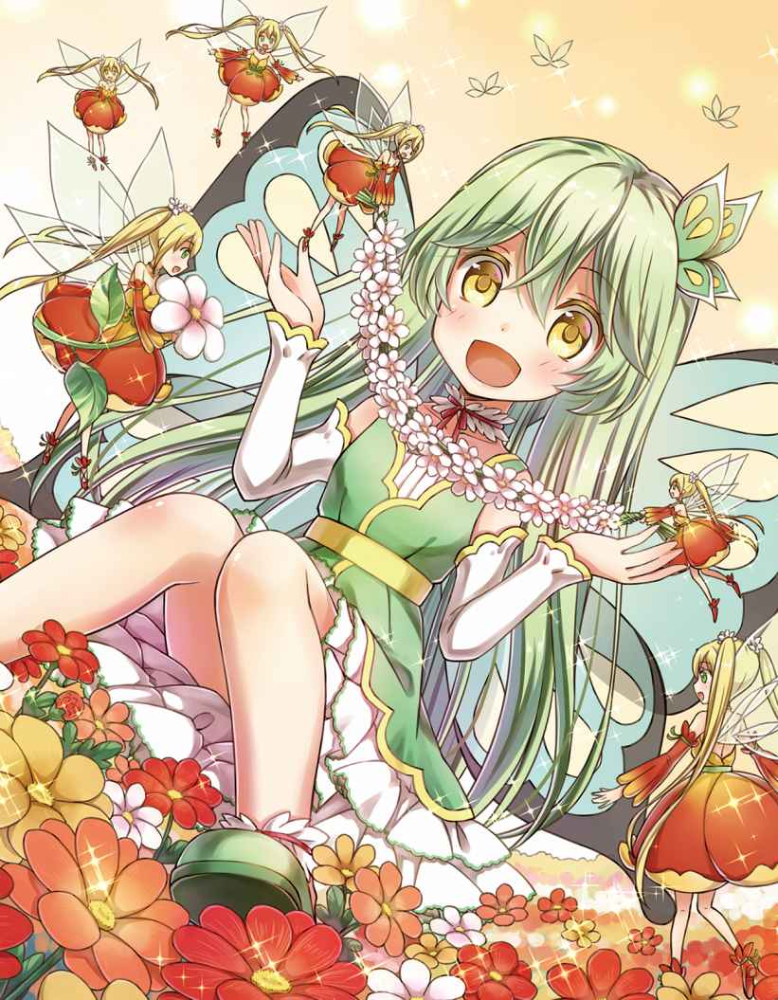
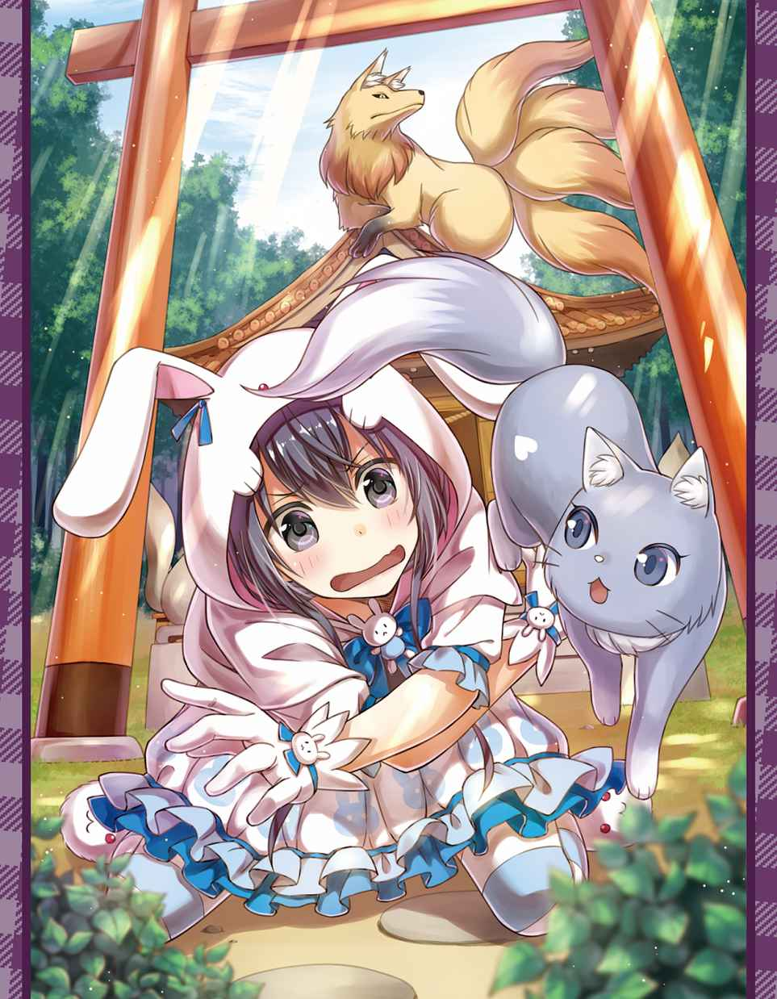
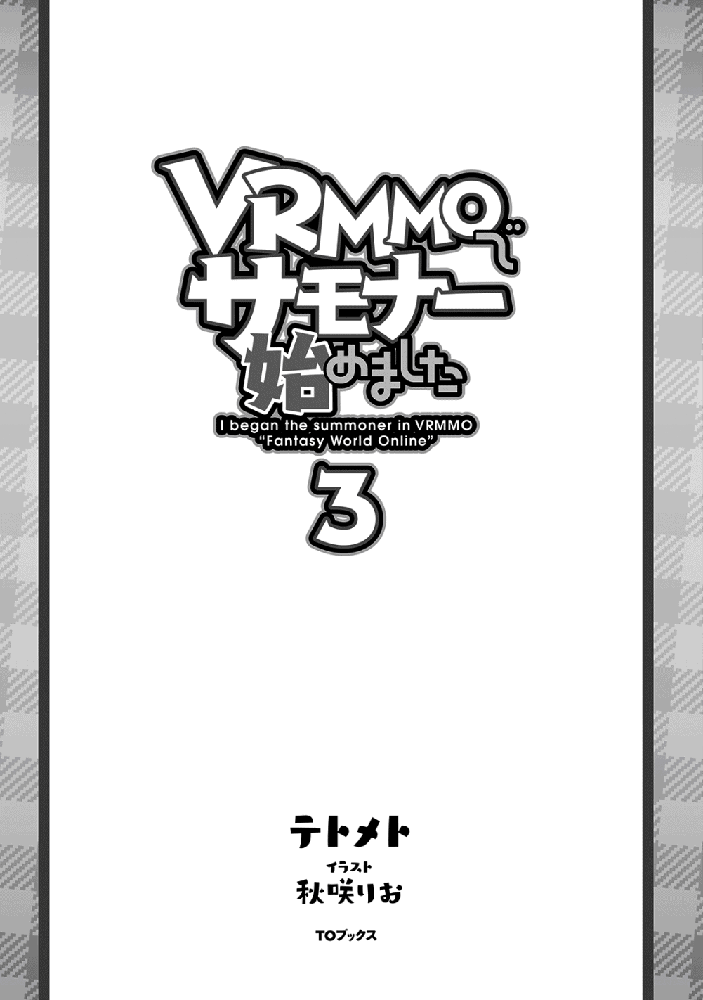
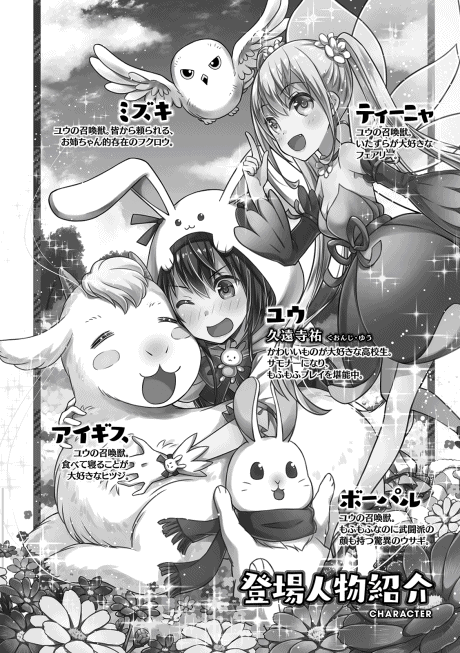
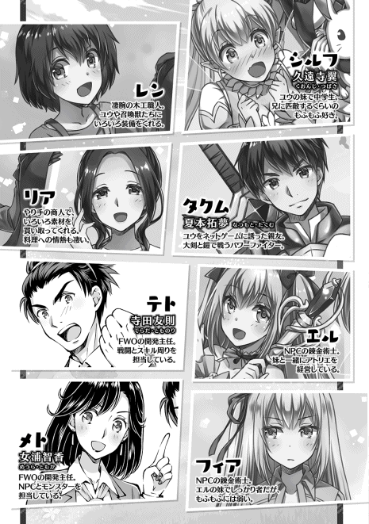
「ボーパルちゃんの優勝と！ 私の準優勝を祝して！ かんぱ〜い！」
「「「かんぱ〜い!! 」」」
「きゅい〜！」
「〜〜〜！」
シルフの音頭に合わせて、本日何回目か分からない乾杯がされる。
ボーパルとのワンツーフィニッシュが余程嬉しかったようで、シルフは宴の最初からずっとテンションマックスだ。
「あっはっはー！ おねぇちゃん飲んでるぅ〜？ ダメだよぉ、お祝いなんだから飲まないと!! 」
「......お前、実は酒飲んでないか？ あと、お姉ちゃん言うな」
現在進行形で俺達がログインしているＦＷＯ は全年齢対称ゲームだから、お酒とかは存在しないはずなんだけどなぁ。普通の炭酸飲料で酔ったのかね？ この不肖の妹様は。
「え〜？ だって、お姉ちゃんはお姉ちゃんじゃない！ こんなかわいいウサギさんワンピースを着てる子が、男の子のはずがないっ！」
「ええぃ！ 抱きつくな！ うっとうしいわ！」
闘技大会決勝でボーパルにギリギリ敗北した直後だと言うのに、悔しさを微塵 も感じさせない明るさはシルフの美点だとは思うが、それも行き過ぎればウザイだけ。
抱きついて頬 ずりしてくるシルフのほっぺたを両手で押し返したんだが、腐っても前衛職であるシルフの筋力は俺よりも高いため、全然押し返せない。
はぁ......もういいよ。好きにしろよ......。
「〜〜〜♪」
「ホー......」
死んだウサギの様な目で、シルフの抱きつきを甘んじて受け入れていると、楽しそうな気配を察したティーニャと、心配そうなミズキが俺達の元へ近づいてきた。
楽しい事をこよなく愛するフェアリーであるティーニャは、宴の雰囲気に当てられたのか、いつもよりも上機嫌に花びらのドレスを揺らして踊っているな。
しっかり者のフクロウであるミズキは、風に煽られる花びらの様に、あっちにひらひら、こっちにひらひらと、不安定に飛行しているティーニャを心配そうにオッドアイの瞳で見つめていて、ティーニャがダンスに夢中になってぶつかりそうになるたびに、先回りしてふかふかの翼で受け止めてあげている。
ミズキは本当に頼りになるお姉ちゃんだよ。ティーニャもちょっとは慎 みを持ちなさい。
「〜〜？ 〜〜？ 〜〜〜♪」
「つつしみ〜？ なにそれおいしいの〜？ そんなことより遊んで〜♪」と、言った具合に左へ右へと首を傾げた後、両手を伸ばして俺の顔へとティーニャがダイブしてきた。小さな頭をうりうりと俺の頬に擦り付けてくるものだから、俺の顔は両サイドからシルフとティーニャに頬ずりされて、ぺしゃんこにサンドイッチされている。
「ホ、ホォ〜？」
「あぁ、うん。大丈夫だから、気にしなくていいよ。心配してくれてありがとうなミズキ」
ミズキが心なしかオロオロしながら、俺の顔を見つめてくるので、頭をなでなでもふもふして感謝を告げた。
ミズキは顎 の下を指で掻かれるのがお気に入りらしく、目を細めてうっとりしている。かわいいなぁ〜。
「メェ〜〜......」
しっかり者のミズキと対照的なのが、会場の隅っこでひっくり返って寝ている羊のアイギスだ。
食欲と睡眠欲に限りなく忠実なアイギスは、宴が始まると同時に料理をもりもり食べると、お腹いっぱいになった後はお昼寝タイムに突入した。
アイギスは本当に幸せそうな生き方してるよな〜。ある意味憧れるわ。ちょっと寝すぎだとは思うけどね。
学校の先生の中には「普段からシャキッとしなさい！」って怒る人も居るけど、俺としては必要な時に頑張ってくれるのならば、後は好きにしていいと思うんだよね。世間の常識など犬にでも喰わせろ。結果が出ればそれでいいんだよ。
「あ！ そう言えば、お姉ちゃんはもう闘技大会の賞品決めた？ 優勝ともなれば、選り取り見取りなんじゃない？」
「一位は全賞品の中から、好きなものを一つ選べるもんな。送られてきたカタログも凄い量で、目を通すのが大変だったよ。で、賞品なんだけど。頑張ったのはボーパルだから、ボーパルに決めてもらおうと思ってるんだよね」
「きゅい？」
相変わらず引っ付いたまんまのシルフとそんな話をしていると、お皿でジュースを飲んでいたボーパルが、呼んだ？ って感じで小首を傾げてから、ぴょこぴょことこっちへ近づいてきた。
ボーパルは、何気ない動作の全てがかわいいなぁ。ぴょんぴょんする度に、一緒に跳ねる長いお耳と、真っ赤なマフラーも素敵！ ぎゅってしたい！
「ぎゅぅ〜！」
「きゅい〜」
「いや『ぎゅってしたい！』って言うか、しちゃってるよお姉ちゃん！」
そう言うシルフは、ボーパルをぎゅってしている俺ごと抱きしめてるけどな！
ふふん。だか、シルフがどれ程強く抱きしめようが、ボーパルはやらんぞ！ もふもふ。すりすり。匂い付け匂い付け。縄張り縄張り。
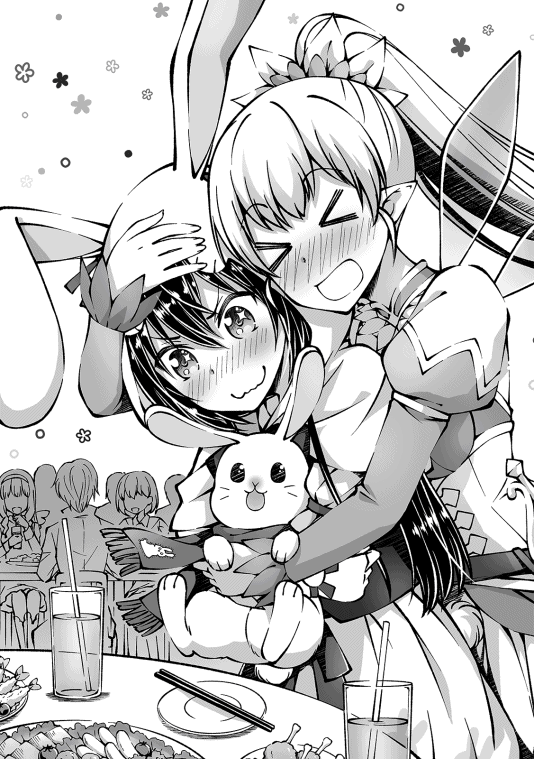
「......じゃなくって！ ボーパルに闘技大会優勝の賞品を選んで欲しくて呼んだんだよ」
「きゅい？」
それなぁに？ 美味しいの？ って、小首を傾げるボーパルがかわいすぎて、また抱きしめたくなったが、ここは我慢だ。あとでいっぱいもふればいいしね。
「これが、賞品の一覧だよ〜。ボーパルが頑張ったんだから、好きなの選んでいいんだからね〜」
「きゅい！」
俺が取り出した賞品のカタログに張り付いて、真剣に選んでるボーパル萌え〜。後ろから見えるチョコンと付いた尻尾が超かわいい。ツンツンしたい！ かわいそうだからしないけど。
で、ボーパルが見ているカタログには、俺も一通り目を通したんだが、本当に多種多様なアイテムが載ってるんだよね。しかも高順位ともなれば、闘技大会限定装備なんかもあるんだよ。
......限定品の魔力って怖いよね。つい、限定の文字に釣られて、実用性皆無のアイテムをもらっちゃうところだったぜ......。だって、特大ウサギさんぬいぐるみがかわいかったんだもん！ しょうがないじゃん！ 今度レン君に作ってもらおう。そうしよう。
それはさておき、闘技大会の賞品の中で、ウサギであるボーパルが使えそうな物と言えば『風斬りの脚甲』とかかなぁ？ 足に装備出来て、セットスキルも使える様になるんだって。便利だよね。でも、あれって三位以上がもらえる賞品なんだよね。どうせなら一位限定の品にして欲しい気持ちはあるが......。
「きゅい！」
「ん？ 欲しいもの決まったのか？」
カタログを食い入る様に見ていたボーパルが、俺にカタログを見せて、コレコレ！ と手でぺしぺししてる。
「え〜、なになに？ 『繊月斬 の秘伝書』？」
「繊月ってのは三日月の事だったはずだから、三日月型の斬撃かな？ で、秘伝書ってのは、使うとスキルを覚えられるアイテムっと。ボーパル達は好きにスキル覚えられないから、秘伝書は良いチョイスだと思うぞ」
「きゅい！」
プレイヤーは一覧からＳＰを消費してスキルを覚えられるけど、ボーパル達召喚モンスターは新しいスキルを覚えるのが大変だからな。ボーパルもこの秘伝書が気に入ったみたいだし、賞品は『繊月斬の秘伝書』に決定っと。それじゃぁポチっとな！
「えっと、この巻物が秘伝書なのかな？ ボーパルに使用っと」
「きゅい？」
カタログをポチッとして『繊月斬の秘伝書』を選択すると、ポンっと軽い音と共に、一本の巻物が現れた。
とりあえずボーパルに使用したら消滅したから、使い方はあっている筈 なんだが......。どう、ボーパル？ スキル覚えた？
「きゅい!! 」
「うおぉ!? 急になんか飛んで来たぞ!? 敵襲か!? 」
ボーパルがジャンプして虚空に足を振ると、その足の軌跡をなぞる様に三日月型に光の線が生じ、ボーパルの着地と同時に真っすぐにすっ飛んで、全身鎧 を着ているタクにブチ当たった。
「なるほど。繊月斬っていうのは、三日月型の斬撃を飛ばせるスキルなんだな」
「お〜。近接職にとって遠距離攻撃手段が一つあると、選択肢がグッと広がるからね！ これは良いアイテムをもらったね！」
「きゅい！」
「うぉい！ 誰か一人ぐらい心配しろよ!! 」
強いスキルをゲットしたボーパルを、褒 めながらもふもふするのに忙しいっていうのに、本選一回戦で負けたタクがこっち向いてなんか叫んでる。仕方ないなぁ。タクはかまってちゃんなんだから。
「そうだな。リアさんのお店に当たらなくて良かったな」
「そうだね。当たったのがタクさんで良かったね」
「そうね。私のお店に当たらなくて良かったわ」
「そうだよ。僕が修理する事にならなくて良かったよ」
「良くねーよ！ そもそも室内で攻撃スキルを試すんじゃねぇ！ と言うかリアさんとレン君までそっち側に!? 唐突な四面楚歌 !! 」
あ〜、はいはい。ボーパルがビックリするから大きな声出さないでね〜。叫ぶなら外行ってね〜。
《運営インフォが一件届いています》
タクを弄 り倒した次の日。現時刻はお昼過ぎだな。うちの高校は今日が終業式で半日授業だったから、家に帰ってきて直ぐにログインしたんだよね。
で、何かメッセージが来てるな？ なんだろ？
《イベント情報》
全プレイヤー参加型大型イベント第二弾。「モンスター大侵攻イベント」を開催します。
詳細情報はＦＷＯホームページをご確認ください。
開催日
８／６（日）
イベント内容
魔人率いるモンスター軍団が始まりの街に攻めてきた！ 全プレイヤーの力を合わせて迎え撃て！
エントリー方法
全プレイヤー強制参加
※注意※
八月六日午前十時に、始まりの街の外に居るプレイヤーの現在地及び、始まりの街外でログアウトしたプレイヤーの復帰地点は噴水広場に強制変更になります
お〜、魔人ちゃんのイベントの日が決まったのか。開催日は次の次の日曜日だな。
......早くね？ 二週間おきに大イベントやってて大丈夫なのか？ 主にネタのストック的な意味で......。まぁ、それは俺達プレイヤーが心配することじゃないか。
それに、大侵攻イベントで大勢のプレイヤーとモンスターのぶつかり合いとか絶対絵になるしな。闘技大会の時みたいに、ＦＷＯのホームページに動画を載せて宣伝するつもりなのかもな。
......イベントは楽しみだけど目立つのは嫌かも。ストーカーとかに絡まれたら嫌だしなぁ......。せっかくのイベントだし出し惜しみするつもりは無いけどさ。
闘技大会については、一旦置いておいて。今日はシルフも半日で帰ってくるらしいので、一緒に追加されたクエストをやろうって約束をしてたんだが......。あいつ家に帰って来ねぇの。
なんでもリア友との付き合いで、なかなか抜けられないんだって。さっきメッセージが飛んできたわ。さっさと終わらせて、森の探索もしたかったんだが、シルフが遅刻するならば仕方ない。先にログインして適当に時間を潰そうか。
◆◆◆
てなわけで。
「うーみー！」
「きゅーいー！」
「〜〜〜♪」
「ホー！」
「メェ〜......」
始まりの街を出て徒歩五分。草原を南に抜けた先が、海エリアとの境界線である砂浜だ。
夏だし、海で遊ばないとね！ まぁ、リアルで海に行く気はないけど。肌が弱いからすぐ痛くなるし、日焼け止め塗るの面倒だし、虫は出るし、暑いし。やっぱり海はゲームに限るね！
「きゅいー！」
「〜〜〜！」
海へと駆け寄ったボーパルとティーニャが、波が引いた時に近づいて、寄ってきたときに逃げる遊びをして......逃げ遅れたティーニャが波に攫 われてる。
なにやってんだか......まぁ、ボーパルが居るなら大丈夫だろう。ティーニャも超笑顔で楽しそうだしね。
「メェ〜」
「ふっふっふ〜。砂浜で寝るとは甘いなアイギス！ ミズキ！ 埋めるの手伝ってくれ！」
「ホー！」
砂浜に寝転がってお昼寝モードに突入しだしたアイギスを、ミズキと二人で砂に埋めていく。
俺が雑に盛った砂をミズキが翼でぽふぽふしたり、足跡をぺたぺた付けたりしてるな。ミズキの足跡模様がかわいい！ 保存したい！
ん〜。とりあえず砂山に埋めたけど、どんな形にしてやろうかな？ ベタに女性型とか？ フィアちゃん型？ でも、頭がアイギスだからな〜。たい焼き君にでもしよっかな？ 頭がヤギのたい焼き君！ カオスだな!?
「きゅい〜！」
「〜〜〜！」
とりあえずお城でも作ろうかと決めて、千年の戦争にも耐えられる要塞 アイギスを作っていたら、ボーパルとティーニャが戻ってきたんだが......。
なんか、ボーパルが変な物体を引きずっている様に見えるのは気のせいじゃないよね？
モンスター ヤドカリ ＬＶ２
状態 戦闘不能
モンスター ツルギウオ ＬＶ３
状態 戦闘不能
「狩ってきてくれたのかな？ ありがとう二人とも〜」
「きゅい！」
「〜〜〜！」
ボーパルが持ってきたのはヤドカリだった。殻 が俺の腰ぐらいまであるデカイやつ。それと、お魚が一尾。太刀魚かな？ 魚の見分けなんてつかないけど、名前的に。
「ふむふむ。封印率は一体で二十パーセント上がるのか。悪いんだけど、コイツらを見つけたらまた狩ってき───」
「きゅい！」
「〜〜〜！」
バッシャァァァァン!!
......お仕事が早いことで。
顔を上げた先では、ボーパルが放った繊月斬が海を割り、ティーニャが放った石の矢が岩礁 を築いている。
レベル差があるからな。一撃当たれば倒せるもん。数打ちゃ当たるの精神でもいつかは狩れる......。
あ、連携を取りだした。気配察知を持つボーパルが指示した場所に、ティーニャが石の雨を降らせる方針に変えたみたい。
ボーパルはＭＰが少ないから、そっちの方が効率的だもんな。これならすぐにでも、封印完了に必要な数が揃いそうだな。
《ヤドカリの封印率が百パーセントになりました》
《ヤドカリが封印完了しました》
《スキル：召喚魔法がレベルアップしました》
《ツルギウオの封印率が百パーセントになりました》
《ツルギウオが封印完了しました》
《スキル：召喚魔法がレベルアップしました》
《封印完了モンスターが二十体になりました》
《召喚可能モンスター枠が一つ増えました》
「はい。封印完了っと。二人ともありがとうな〜」
「きゅい！」
「〜〜〜！」
ティーニャの魔法にやられて、プカ〜と浮いてきたモンスターを、ボーパルが蹴りで俺の近くまで打ち上げてくれたから、封印も楽だったわ〜。
......うん。ボーパルが軽く海の上を走っていた気がするけど、気にしたら負けだよね。
「そう言えば、このインフォって非表示にも出来るんだっけ......。スキルが増えてきたから、レベルアップ表示がウザかったんだよな。召喚魔法以外はオフにしとこうっと」
ポチポチポチっと。設定完了。ついでにステータスも基本非表示っと。必要な時だけ見れればいいや。
で、召喚枠が一個増えたんだよな。これで、念願の五匹目が召喚できるぜ。
と言うのも。ＦＷＯでパーティメンバーは最大六人だから、五匹召喚できるようになれば、俺と召喚モンスター五体でフルパーティを組めるんだよね。
「ここまでしてやっとスタートラインって感じだな。では、早速五匹目の召喚を......」
「おねぇちゃ〜〜ん!! 」
「きゅい？」
せっかく新モンスターを召喚しようとしたのに、タイミング悪くシルフの声が......。
ちっ。間が悪いな。まぁ、今からシルフとパーティ組むし、召喚は後でいいか。
「あ、いたいた！ おねぇちゃ〜、って、なにそれ!? 打ち上げ花火!? 」
「ん？ これ？ アームストロング・アイギスジェット・アームストロング砲だ。完成度たけぇだろう？」
「ホー！」
俺とミズキの合作にして傑作 だ。
お城の付属品として大砲を作ってたら、途中から大砲メインに変わっちゃったんだよね。大鑑巨砲は最高！ 格好いい！ 戦艦も作ろうかな？
「大砲は格好いいけど！ なんでアイギスちゃんが砲身に詰まってるの!? 」
「メェ〜」
シルフが、ビシィ！ と、指を指した先では、真上を向いている大砲の砲身から頭だけを出したアイギスが、スヤスヤお昼寝しながら寝言を呟 いてる。もし、タイトルを付けるならば『アイギス危機一髪』って感じだな。剣を刺したら飛んでいきそう。
「いや、シルフの言いたいことも分かるぞ？ 銃弾は、固い鉄よりも、柔らかい鉛を使うことで、逆に威力を上げているもんな。つまり砲弾に使うのならば固いアイギスよりも、柔らかいミズキを使えと......そう言いたいんだろ？」
「ホー!? 」
「違うよ!? シュールな絵面にツッコミを入れただけで、ミズキちゃんを射出しようとしてる訳じゃないよ!? 」
城壁にぶち当たってベチャッとなる自分を想像したのか、体をプルプルと震わせたミズキが、信じられないモノを見る目で、シルフを見ている。
まぁ、砂で作った大砲だから、誰が入ったところで発射は出来ないんだけどね。アイギスも砂風呂気分なんだろしさ。お客さん湯加減はどうですか〜？ 湯加減って言うか砂加減かな？
「さて、シルフも来た事だし街に戻るぞ〜。全員集合！」
「ホ、ホゥ......」
「待ってぇ！ ミズキちゃんの誤解を解いてからにしてぇ！」
怯えて抱きついてきたミズキの頭を、なでなでして慰 めつつ号令をかけたら。滝のように涙を流したシルフに腰にしがみついて懇願 されてしまった。
放置してたら体中の水分を涙に変換してカラッカラになりそうなので、仕方なく仲裁をすることに。
追加クエストの詳細はシルフしか知らないから、パッサパサになられたら困るしね。ミイラの飼い方は分かんないよ？
「泣き過ぎたからってミイラにはならないよ!? たとえなったとしても、お姉ちゃんには飼われないし！」
「よし。シルフも元気になったな。それじゃあ出発！」
「きゅい！」
「嘘でしょ!? 全然私の話を聞いてない!? 」
シルフが愕然 とした顔で叫んでいるが、大砲をぶっ壊してアイギスを救出したボーパルが、ルンルン♪ と楽し気にスキップしているのを見ると、一瞬で機嫌を直してボーパルと一緒にスキップしだした。チョロいわ〜。
◆◆◆
「おぉ〜。教会だな。これぞ教会！ って感じの教会だ」
「きゅい？」
シルフに案内されてたどり着いたのは、でっかい鐘と十字架がくっついている建物だった。と言うか教会でしょ？ この見た目で教会じゃなかったらビックリだよ？
「そう！ 教会だよ！......って、あれ？ お姉ちゃん教会来たことないの？」
「教会なんて来る用事ないしなぁ......」
宗教に興味はないし、呪いにかかった事もないからなぁ。セーブだって、安全エリア内ならどこでも出来るし......あれ？ 教会ってなんのためにあるの？ 実用性皆無でね？
「教会はリスポーン地点だよ？ 死んだら教会で復活するでしょ？」
「そうなのか？ 知らなかった」
死にかけた事はあれど、死んだことはまだないからなぁ。
ふむふむ。死んだらここに来るのね。ユウ覚えた。
「お姉ちゃん取説とか読まない人だからねぇ......私もだけど。死んだ時のデメリットは、取得経験値の減少と、一定時間のステータス減少もあるからね。死なないように気を付けてね？」
「死なないように気を付けない人なんているのか......？」
誰だって死にたくはないだろうしな。うっかりクマのテリトリーに迷い込んで、死にかけた俺が言えた義理ではないが。
「......で、教会は分かったんだが......本当にこの列に並ぶのか？ 今から？」
「ホー......」
「あ、あははは......」
乾いた笑いを漏らしながら、明後日の方向を向くシルフをジト〜っと見つめる。近くに居たミズキにも手伝ってもらっての、ダブルジト目攻撃だ。
ミズキのオッドアイジト目は受け流せなかったのか、シルフの顔にたら〜っと冷や汗が伝っているな。
と言うのも、奥の方に見える教会からズラ〜〜〜っと、大量の人が並んでいるのだ。アニメのイベントの物産店でもこんなに並ばないんじゃないかと思う程並んでる。このゲームって、こんなに人いたんだなぁ......。
「だ、大丈夫！ みんなクエストを受けるだけなんだから、回転率は高い筈だよ!! 」
「そもそも人混みとか、並んで待つのとかが苦手なの！」
シルフは大好きみたいだけどな。人が並んでたらとりあえず並ぶ人種だから。せめてどうして並んでるのか確認してからにしろよ......。
「お姉ちゃんは我が儘 だなぁ〜。しょうがない。私が一人で並んでくるよ。このクエストはパーティで受けるものだから、一人居ればいいしね！」
「なんで俺が駄々を捏 ねてるみたいになってるんだろう......」
シルフの遅刻を責めていた筈なのになぁ......。まぁいっか。シルフが代わりに並んでくれるんなら文句はない。
「クエスト受注のログが出たら、リアさんのお店に集合ね！ お買い物もしたいから！ 通知オフにしてたらダメだよ？ あんまり遠くにも行かないでね！」
「はいはい。りょーかい。適当に時間潰してくるよ」
お前は俺のオカンか。どちらかと言えばお前の方がおっちょこちょいだわ。
......なんで、今度は俺がシルフとミズキからダブルジト目攻撃を受けてるんですかねぇ。ちゃ、ちゃうし。俺おっちょこちょいじゃないし！
......はい。反省します。軽率な行動は慎みます。ミズキのオッドアイには勝てなかったよ......。
◆◆◆
「フィアちゃ〜ん！ 暇 だから遊びに来たよ〜！」
「ホー......」
バァン！ と扉を開いて華麗に登場！ なんかミズキに「舌の根も乾かない内に......」と、でも言いたげなため息を吐かれた気がするが、気のせいだろう。フクロウ語は分からないからね！ 仕方ないね！
「いらっしゃいデース！ 待ってたデスよ!! 」
「ビックリしたぁ!? エル？ どうした？」
ミズキからサッ！ と目を逸らしていると、飛び掛かってきたエルに抱きしめられてしまった。
興奮してる所為 でなんか言ってるのは分かるんだけど、なに言ってるのか全然伝わらない......エルって意外と力が強いから引き剥がせないし。いや、別にくっつかれててもいいんだけどね。さっきからティーニャも俺の背中をクライミングして遊んでるし。引っ付き虫かな？
「〜〜〜？」
「妖精さんデス！ 会いたかったデスよ〜〜！」
「〜〜〜!? 」
あ、様子を見に俺の背中から飛び立ったティーニャがエルに捕獲されて連れてかれた。誘拐事件勃発 だな。お巡りさんに通報しなきゃ！
「......あんなのでも身内なので通報しないであげてください」
「あ、フィアちゃんだ。お邪魔してまーす」
「きゅい！」
攫 われていったティーニャに、頑張って！ と手を振った後にフィアちゃんの方へと向き直る。
フィアちゃんは、椅子に座って膝の上に乗せた本を読んでいたみたいだけど。開いたページの上にボーパルが乗っかって、かまって！ って感じでフィアちゃんへ両手を伸ばしてるもんだから、読書の続きは諦めた様で、ボーパルのほっぺたをすりすりもふもふしてる。
え〜と。なんかごめんね？ うちの子が読書の邪魔しちゃったみたいで。
「......いえ。ボーパルちゃんなら大歓迎です。それに、あなたが来た時点で読書を続けることは不可能ですから」
「......なんだろう。俺が凄く迷惑な人みたいに聞こえるな。不思議だ」
読書しながらお客さんの相手をしない。なんて普通の事なのにな？
「......静かに読書をしていた所に、突然扉を蹴破って入ってくるのは、十分迷惑です」
「いや、蹴ってはいないよ!? 」
でも、やり過ぎたのは確かだよな。次はちゃんとノックしてから入ることにしようか。
「......ちょっと待っていてください。この本を先に片付けてしまいますから」
「きゅい！」
ボーパルの両脇に手を入れて床の上へと降ろしたフィアちゃんが、膝に載せていた本を本棚の一番上の段に戻そうと椅子の上に乗って背伸びを......って、あぶなぁ!!
「わ、わわわわわ！」
「あぶない!! 」
「きゅい！」
「ホー!! 」
間一髪。椅子の上からひっくり返りそうになったフィアちゃんを、俺が背中を支えて、ボーパルが宙を舞った本をキャッチして、ミズキがフィアちゃんの後頭部に抱きつく事でなんとか回避した。
......うん。ミズキの行動に意味があったのかは置いておいて。フィアちゃんが頭から落っこちなくてよかったよ。安全エリア内だし、ひっくり返ってもダメージは無かったとは思うけど、気分的に嫌だしね。
「......あ、ありがとうございます。助かりました」
「ほんとうだよ？ 気をつけないと危ない......というか本棚が大きすぎじゃね？」
今までは背景の一部として、気にもしてなかったけど。壁一面を完全に塞 ぐ大きな本棚に、ビッチリ本が詰まってるのは明らかに大きすぎ。多すぎだと思う。地震が起きたら全部降ってきて圧殺されそうだ。あ、ゲームだから地震はないのかな？
「......どうしても本が捨てられなくって......ごめんなさい。気をつけます」
ん。分かればよろしい。
俺に叱 られると思ったのか、ボーパルに返してもらった本を両手で持って、その本で顔の下半分を隠しながら、上目使いで俺の様子を伺うフィアちゃん。
まったく。そんなかわいい顔されたら叱る気分もどっか行っちゃうでしょ？ フィアちゃんもしっかり反省してるようだし、これ以上叱る気は初めからないんだけどね。
「とは言え、何かしら対策は考えないと、同じ事故は起こるからなぁ」
「......いつもはあれを使っていますから大丈夫です」
「ん？ なるほど。いつもはあのハシゴを使ってるんだね」
「......いえ、それはキャタツです」
「どう違うの？ どっちも同じようなものじゃない。もっと本質を見ようよフィアちゃん」
「......」
申し訳なさそうな上目使いが、不服そうな上目使いに変化してしまった。うん。やっぱりフィアちゃんはこっちの表情の方がいいな。フィアちゃんらしくてさ。
「......誰の所為でフィアがむすっとしてると思っているのですか......はぁ。もういいです。本を仕舞うので手伝ってください」
「あいあいさ〜」
「きゅい！」
「ホー！」
んで、脚立を二人で本棚まで移動させて、フィアちゃんに下で脚立を支えてもらい、俺が上に登って本をしまった。ボーパルとミズキは応援する係な。両手をフリフリして踊りながら応援してるのがマジかわゆす。今度レン君にチアガール服を作ってもらおうかな？ ポンポン付いてるやつ。
「にしても本当に本が沢山あるなぁ。フィアちゃんはいつもどんな本を読んでるの？」
「......特にこだわりは無いです。物語、歴史書、レシピ本、絵本、図鑑、漫画。何でも読みます。最近だとあなた達が持ち込んだ本を良く読みます。興味深いです」
「あなた達って......プレイヤーの事？」
「......そうです」
へー、つまりは現実世界の本をこっちでも読める、と。普通にネットも繋がってるし本が読めてもおかしくはないか。
なら、今度お気に入りのライトノベルを持ち込めないか試してみようかな〜。
「......あなたも本を読むのですか」
「ん？ 読む読む。超読むよ。と言っても動物の本とかライトノベルとかばっかりで、難しい本は読まないけどね。電子媒体じゃない紙の本なんて資源の無駄だー。何て言う人もいるけどさ。やっぱり本をこの手に持って読むのは充実感が違うよね。目的も無く本屋さんをうろつくのも楽しいし。あ、もちろん電子書籍も嫌いな訳じゃ」
ガシッ！
「はぇ!? 」
本をしまって脚立から降りたら、突然フィアちゃんに手を握られたんだけど！ なにごと!? なんかすごいデジャヴ！ あの時は立場反対だったけどさ！ ていうか男嫌いの設定どこいった！ まさか俺は男枠に入ってないと!? へこむよ！ 地味にへこむよ！
「......本好き友達ゲットです」
おおぅ。なんか凄いキラキラした目で見つめられている。エルは感覚派っぽいし、本読まなそうだもんなぁ......。
とはいえ俺も本好きって程じゃないんだけどね。仮に異世界に飛ばされても、紙を自作して下剋上したりはしないと思うし。
「......あっ、すみません」
ありゃ。フィアちゃんの手が離れちゃった。
俺的にはずっと手を繋いでても良かったのに。残念だわ〜。
まぁ、フィアちゃんが真っ赤になって照れてる所が見られたから良しとしよう。今日はコロコロ表情と言うか、目の感情が動く日だな。フィアちゃんが俺に心を許し始めてくれたって事なら嬉しいね。
「えっと......何の話をしてたんだっけ？」
「はぅ......はっ！ ほ、本トモ......じゃなくて本好き仲間ゲットと言ったんです」
俺の手を掴 んでいた両手を胸の前で握って、少し赤い顔ではぅはぅ言ってるフィアちゃんが、めがっさかわいすぎて生きるのが辛いです。それはもう出所不明の方言が出るくらいに。顔にやけてないかな？ 大丈夫？
「......ふぅ。すみません、とりみだしました。とりあえず、あなたにはフィアセレクトの面白い本を貸してあげます。感想は原稿用紙五枚ぐらいでいいです」
「わーい。ありがと〜。って感想文多くね!? 原稿用紙五枚って言ったら二千文字だよ!? ......あれ？ 思ったより少ない？ んん？」
読書感想文とか原稿用紙二枚を埋めるのにも苦労していた記憶があるし、二千文字は十分多いか。なんか最近感覚が狂っているような気がするな......。
「完成デ〜ス!! 」
「〜〜〜!! 」
普段と変わらない風を装いながらも、まだ耳が赤いフィアちゃんをほほえま〜っと眺めていたら、部屋の反対側からエルとティーニャの雄叫びが聞こえてきた。
そう言えば、存在をすっかり忘れてたけど何してたんだろ？
「見るデス！ 自信作デース！」
「〜〜！」
「おぉ。ティーニャの衣装を作ったのか。かわいいかわいい」
「......かわいいです」
エルが「じゃ〜ん！ デス！」と口で効果音を出しながら広げたのは、隣でふんぞり返っているティーニャが着ているのと同じ妖精の衣装だった。ご丁寧 に髪を縛るリボンと靴もあるな。
「能力はなんにも無いデスが、見た目はソックリに出来たデス！」
「防御力すら０だな。本当にコスプレ専用の衣装なのか」
かわいいのは分かったんだが......なんでエルはこの衣装を作ったんだ？ 着たかったのかな？
「着たかったのはエルじゃなくてフィアデス！ 前にユウが遊びに来た時にティーニャのお洋服を見て、着てみたくなったらしいデス！」
「......っ！ ね、姉さんそれは......」
へ〜。ほ〜。ふ〜ん？
フィアちゃんがティーニャのコスプレをしたいって、エルにお話ししてたんだぁ〜。へぇ〜。
「フィアちゃん......か〜わいっ♪」
「デス！ フィアは世界一かわいい自慢の妹デス！」
「〜〜〜っ！ もぅっ！ 知りませんっ！」
ニッコニコしながらフィアちゃんを見つめる俺とエルの視線に耐えきれなかったのか、耳まで真っ赤になったフィアちゃんが真後ろを向いてしまった。
あ〜。ちょっとからかい過ぎたかな？ でもフィアちゃんがかわいいんだからしょうがない！ 折角ならフィアちゃんがコスプレしてる所も見てみたいんだけど......。
「あ〜ぁ。折角エルとティーニャがフィアちゃんの為に作ったのに、着てもらえないなんてかわいそうに......」
「いつもお世話になっているフィアに恩返しがしたい一心で作ったデスのに......ティーニャにも手伝ってもらったデスのに......フィアが着てくれないなんてすっごく残念デス......」
「〜〜〜......」
アイコンタクトで意思疎通をしたエルが、お芝居の悲劇のヒロインの様にクルクルとその場で回転しながら悲しみの言葉を歌い上げ。こっちは本当に残念に思ったのであろうティーニャが、肩を落とした格好でふよふよと墜落 していく。
あ〜ぁ。フィアちゃんの所為で二人が失意のどん底に叩き落とされてる。かわいそうになぁ......。チラッ。
「......別に着ないとは言ってません。だから、その......元気出してください。姉さん達がそんなだと、フィアの調子もおかしくなってしまいます」
「じゃぁ着てくれるデスか!? 今すぐに！」
「〜〜〜!! 」
「......いえ、今すぐは......その、ユウさんも居ますし......」
そう言うと、顔を隠すように伏せたまま、チラリと視線だけを俺に投げかけてくるフィアちゃん。
ふむふむ。フィアちゃんは俺にコスプレしてる所を見られるのが恥ずかしい、と。それならば！
「俺も一緒にコスプレすれば解決だなっ！」
「......なんでそうなるんですか......」
「まっかせるデス！ 一度作ってしまえば、同じのを作るのは簡単デス！」
「〜〜！」
そう言うやいなや、二着目の製作に取りかかるエル。
全てはフィアちゃんのコスプレを見たいが為に！ つまりはそう......愛よっ！
「......なんでそこで愛なんですか......はぁ。仕方がありません。ちょっとだけですよ......」
「「よっしゃぁ（デス）！」」
「〜〜〜！」
心を一つに束ね、熱い視線で訴え続ける俺達に、とうとうフィアちゃんが折れてくれた。
「......着替えてきます」と言って、部屋を出ていったフィアちゃんは。やれやれといった雰囲気を出しつつも、片手に持つティーニャのコスプレを見る視線は楽しげだ。
やっぱりフィアちゃんも着てみたかったのね。まったく。素直じゃないんだから〜。
「できたぁ〜！ デス！」
「〜〜〜！」
フィアちゃんが入っていった扉をニヨニヨ眺めていたら背後から雄叫びが......。
ってか、早っ！ 二着目だから早く完成するとは聞いてたけど、めっちゃ早いな。流石錬金術師。
「いや〜。それほどでもあるデスよ〜！ ほらほら！ 早速着てみるデス！」
「〜〜〜？」
「ホー！」
「あっち向いてるデス！」って、エルがそっぽを向いたけど、メニューからポチポチしたら着替え完了してるんだから、気にしなくてもいいのにね。しかも、そっぽを向いた上に、両手で目まで塞いでいるらしい。だってエルの顔を覗 き込んだティーニャが真似っこして目を塞いでるもん。
そして、前が見えなくなって壁にぶつかりかけたところを、ミズキクッションにもふっと受け止められてる。なにあれ羨 ましい。
「よし。装備完了！ どう？ かわいい？」
「きゅい！」
「ホー！」
「〜〜〜！」
ミズキとティーニャのもふもふ劇場の間に着替えを終え「俺、ツインテールになりました」と、その場でクルッと回ってポーズを決めたら、ボーパル達がポムポムと拍手をしてくれた。
ちなみにさっきから霊圧が消えているアイギスは、陽当たりの良い隅っこで転がってお昼寝中だな。デカイ毛玉が転がっててかわいい。実にもふいな。後でダイブしよう。
「おぉ！ 似合ってるデス！ かわいいデスよ！」
「やっぱりこの服かわいいよね。実は一度着てみたかったんだ」
「〜〜〜！」
ティーニャの服は、造り的にはそんなに難しくはない。
花びらを模したおっきな布を、胸の下辺りでリボンで結んだものと、同じような腕飾り。ネックレスとツインテールの髪留めは小さな花の飾りが付いていて、靴は足の甲が丸見えのヒールが付いた靴だ。
ヒールとは言っても、低くて平べったいやつだから動きにくいという事は無いし、むしろ歩く度にカツンカツンってタップダンスみたいな音がして楽しい。ドレスがバラバラの布だからこそ、動く度にヒラヒラとスカートの端が踊り、回って踊れば、二つに結んだ髪が螺旋 を描いてシャランと舞う。
「なんだろう。俺の中で、ティーニャ踊り子説が急浮上してるんだが......うぉっ!? 」
「きゅい〜！」
「〜〜〜！」
回る視界の端でうずうずしていたボーパルとティーニャが、もう我慢の限界っ！ 遊んでっ！ とばかりに飛びついてきた。
急に飛びついたらビックリするからやめてって......ちょっ！ ティーニャ！ ツインテール引っ張んないで！ さてはぶら下がって遊んでるでしょ！ ひゃっ！ ボーパルは捕まる所が無いからって俺の胸に入ってこないで！ もふもふ気持ちいいけどくすぐったい！
「ホー......」
「〜〜っ。そんな寂しそうな顔されたら嫌って言えるわけないじゃん！ ミズキもおいで！ 一緒に遊ぼう！」
「ホー！」
やっぱり最後はもふもふまみれ。みんなの事を大好きだからね。しょうがないね。
どうせならこのままアイギスにダイブして全もふもふを制覇してやろう！ とぅ！ アイギス大好き！ 頭から突っ込んだからスカート捲 れるけど知った事か！ パンツが見えない様に、システムさんが守ってくれるから問題ない！ ウサギさんセットの時に捲って確認したもん！
「......こ、このお洋服布地が少なくないですか......かわいいですけど......」
「ッ！ カメラ取ってくるデス!! 」
お、フィアちゃんも着替え終わったみたいだな。アイギスのお腹に頭を突っ込んで、顔でもふもふを堪能してたらフィアちゃんの声が聞こえた。
どれどれ。俺もコスプレフィアちゃんを拝んでおかねば！
「......胸元はちょっと動いたら捲れそうですし、スカートの合わせ目がずれたら腰まで見えちゃいそうです......外では絶対に着れませんね......恥ずかしくて身動きが取れません......」
回って踊ったり、頭からダイブして足をバタバタしたりしてた事は内緒にした方がいいんだろうか？ 出来れば持ち帰ってシルフにも自慢してやりたいんだよね。悔しがるシルフの様子が目に浮かぶぜ。
「おぉ〜！ フィアちゃんかわいい！ すっごくかわいいよ！ 妖精みたい！」
「〜〜〜！」
「......妖精さんのお洋服を着ているのですから当然です」
いや、そういう意味じゃなくって妖精の様にかわいいって意味なんだけど......たぶんフィアちゃんも分かって言ってるんだろうな。カチカチに緊張して、胸元とスカートを必死に抑えていた両手から少し力が抜けてるもん。わざとふざけて緊張を和らげようとしたんだね。まだまだカチコチだけど、コスプレが本当に嫌ならフィアちゃんも俺の前に出てきたりはしないだろうし、やっぱりかわいい衣装を見せたいんだろうな〜。気持ちはよく分かるよ！
「いつもの髪型もかわいいけど、ツインテールも似合ってるよ〜。フィアちゃんは明るい色も似合うね！」
「......ありがとうございます。ユウさんもかわいらしいです」
フィアちゃんに褒められちった。なんか照れ臭いな。フィアちゃんも同じ気持ちだったみたいで、恥ずかしそうに視線を逸らしてる。でもちょっと嬉しそう。かわいい。
「そうだ！ お揃い記念に写真撮ろうよ！ 二人で！」
「〜〜〜！」
「......三人で！」
フィアちゃんとペアルックコスプレ写真を撮ろうとしたら、俺とフィアちゃんの間にティーニャが飛んできて、両手をフリフリして自己主張してきたので、三人に言い直した。
そうだよね〜。ティーニャもお揃いだもんね〜。一緒に撮ろうね〜。
「......どうしてフィアがあなたと一緒に写真を撮らなきゃならないんですか......一枚だけですよ」
「よっしゃ！」
「〜〜〜！」
コスプレ効果か、今日のフィアちゃんはチョロいぜ！ 頼めばなんでも許してくれそう！ 変な事は頼まないけども！
さて、フィアちゃんの許可は取ったから、あとはカメラがあれば......「カメラ持ってきたデス！」ナイスタイミング！ エルはカメラマンよろしく！
「ほらフィアちゃん！ もっと寄って！ ほっぺくっつけて！ 笑って笑って！」
「〜〜〜！」
「......ユウさんちょっと近すぎです」
「撮るデスよ〜！ ハイ、ポーズ！ デス！」
ポーズ!? ポーズ取る必要あるの!? 持ち上げかけたこのピースはどうすれば!? え、えぇっと、キラッ！
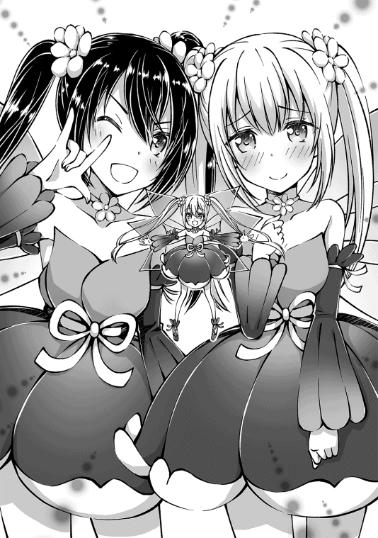
《クエスト『聖なる雫を求めて』を受理しました》
《クエスト『十字架に祈りを』を受理しました》
「あ」
「撮れたデス！」
うぇえ!? 凄いタイミングでインフォが飛んできたんだけども！ 大丈夫だよね!? 俺変顔してないよね!? してないと信じる！
「もっと撮影会をしたいところだけど、お呼びが掛かったから今日は帰るね〜。写真は今度遊びに来た時に頂戴！ みんな行くよ！」
「きゅい！」
「ホー！」
「〜〜！」
「メェ......」
お腹にダイブしても起きなかったアイギスを、ボーパルとミズキがペチペチして起こして連れて来てくれた。
思ったよりもアトリエに長居しちゃったけど、今日のメインは追加されたらしいクエストだからね。今日が終わる前にクリアしたいし急いでシルフと合流せねば！
◆◆◆ フィア ◆◆◆
「......あ、ユウさ......行ってしまいました」
「デスねぇ。もうちょっとゆっくりしていけばいいデスのに」
「......いえ、そうではなく......ユウさん、あの格好のまま町に飛び出して行ったのですが......」
「あ〜......ゆ、ユウは強い子なので大丈夫デス！ ユウを信じるのデス！」
◆◆◆ フィア 終 ◆◆◆
「ふぉぉぉぉ!! お姉ちゃん何そのかわいい格好！ ヒラヒラのフリフリだよ!? お花のドレスだ！ ツインテールも超かわいい！ ぎゅってしたい！ ぎゅってする!! はッ！ ティーニャちゃんとお揃い!? お揃いなんだね!? どこで手に入れたの!? 私も欲しい！ ティーニャちゃんとペアルックしたい！ 今すぐしたい！ お姉ちゃん脱いで！ 私が着るから脱いで！ 今すぐに!! 」
「やめろ抱き着くな！ 頬ずりすんな！ 頭撫でんな！ 袖の中に手を入れんな！ リボン解こうとすんな！ 脱がそうとすんな！ あぁ〜、もぅ！ ボーパル!! 」
「きゅい！」
「くぺっ！」
待ち合わせ場所のリアさんのお店が見えたな〜と思った次の瞬間。目の色を変えたシルフに抱きつかれて、全身を撫で回すセクハラをされたので、ボーパルさんにお願いして、シルフには宙を舞ってもらった。
どうでもいいけど、シルフはよくあの長文を息継ぎ無しに叫び倒せるよな。皮膚呼吸でもしてるのかな？
「ティーニャのコスプレから着替えるのすっかり忘れてたな......シルフへの自慢も済んだし、着替えておこうっと」
「あぁ、お姉ちゃんがいつものウサギさんに......ウサギさんもかわいい！ ぎゅってしたい！」
今さっきボーパルに「めっ！」ってされたのに、さっぱり懲 りてないな......。いつか通報されてブタ箱に叩き込まれるぞ？
「大丈夫！ 安心して！ 強制的に通報されるギリギリ手前のラインを攻めてるから！」
「コイツ手慣れてやがる......」
その説明で何を安心しろと言うのか......。
ここは一つ、教育の為にも通報してやるのが兄としての役目ではなかろうか。「うちの妹がセクハラしてくるんです！」って。
......なんでだろう。マトモに取り合ってもらえる気がしないや。
「ふふ。あなた達はいつ見ても仲良しね」
「はい！ いつもラブラブ仲良し姉妹です！」
「セクハラの被害者と加害者です」
視界の端で点滅しているセクハラ通報ボタンを、押すか否かで悩みながらリアさんのお店に入ると、開口一番勘違いされたので訂正しておいた。
なぁにがラブラブだ。思いっきり一方通行だわ。あと姉妹じゃなくて兄妹な。そこ大事だから。
「お姉ちゃん呼びを訂正しない時点で今更だと思うよ？」
「兄妹で同じゲームをして、一緒にショッピングをするのは十分仲良しだと思うわよ？」
「......それはさておき、何を買いに来たんだっけ？」
シルフとリアさんから「誤魔化したね」「誤魔化したわね」って目を向けられてる気がするけど気にしなーい。
たしか、クエストに必要な物を買いに来たんだっけ？ と言うか、俺クエストの内容すら知らないわ。なんか二つあったよね？
「そうだよ！ 聞いてよお姉ちゃん！ クエストの受付のシスターさんがね！ すっごい美人さんだったの！ 足首まで届きそうな綺麗なプラチナ色の髪をしててね！ おっぱいが凄いの！ ドーンって感じ！」
「わざわざ聞いてって言わなくても聞いてるよ。んで、そんな話は聞いてねえよ」
クエストの内容を聞いたら、シスターのおっぱいの話で返された件。いや、知らんがな。教会に長蛇の列が出来ていた理由は分かった気がするが、今更どうでもいいし。
「しかも、商売上手なシスターさんでね。回復魔法を覚えられるクエストを受けに行ったんだけど『ご一緒に付与魔法はいかがですか？』って、にっこり微笑まれちゃったから、つい一緒に受けちゃった。てへっ」
「てへっ。じゃねえよ！ クエストが二つだったのはそう言う理由かよ！ 色仕掛けに引っ掛かかってんじゃねぇ！」
うちの妹がアホの子過ぎてヤバイ。ハンバーガー屋のポテト感覚でクエスト受けて来やがった。俺まで巻き込んで。
と言うか、シルフが行ってきたのは教会であってるよね？ 実はファーストフード店だったりしないよね？
「まぁまぁ。回復魔法と付与魔法なら、ついでで達成出来るから大丈夫よ。シルフちゃんもそれが分かっていて受けたのでしょう？」
「え......も、もちろん！ 当然でしょ！ バッチリ分かってたし！ 完璧完璧」
もちろん、当然、バッチリ、完璧に分かってなかったな。さっきからシルフの目が泳ぎまくっているもの。
「お姉ちゃんは分かってないなぁ。目とは、すべからく泳ぐものなんだよ！」
「はいはい。で？ クエストの内容は？」
「山エリアの第二層にある洞窟 での採取依頼ね。それぞれ湧水と水晶を取ってくればよかったはずよ」
役に立たないシルフに代わって、リアさんが答えてくれた。助かります。
んで？ 山エリアの二層か。行ったことがないなぁ。一層ならタクと一緒にヤギ狩りに行ったんだが......。
「二層は洞窟エリアだね。山の中が迷路みたいになってるんだよ！」
「洞窟を探索するならカンテラが必要ね。ストーンゴーレムを倒すなら、ハンマーもあった方が楽よ？」
ストーンゴーレムってのは、山エリア第一層のエリアボスらしい。でかくて固いボスで、剣が効きにくいんだって。代わりにハンマーなんかの打撃は効きやすいから、関節を殴り壊して袋叩きにするのが定石 とか......恐ろしい事しやがる......。
「一応聞いておくけど、お姉ちゃんハンマーって持ってないよね？」
「ん〜。丸太ならあるぞ？」
「......ハンマー持ってるか聞いたのに、丸太ならあるって答えるお姉ちゃんが私は好きだよ」
そりゃどうも。いや、ハンマーは無いけれども、鈍器の代わりにはなるかなって。持ち手もないから凄く振りにくいけど。
「吸血鬼を倒しに行くんじゃないんだよ！ せめてこん棒に加工してからにして！」
「こん棒って原始人みたいでダサくね？ どうせなら、おおきづちとかにしようぜ」
「......丸太にこだわらずに鉄のハンマーを買えば良いと思うのだけれど......」
......リアさん頭いいな！ 流石は商人！ 賢い！
「こほん。とにかく、カンテラとハンマーが欲しいのね？ それならちょうどいいわね」
「「ちょうどいい？」」
「リアさん来たよ〜！」「リアさんやっほ〜！」
俺とシルフが揃って首を傾げるのとほとんど同時に、お店の扉が開いて同じ声が二つ入ってきた。
お客さんかな？ と思って振り返ると、鏡写しの様にそっくりな小学生ぐらいの女の子が二人立っていた。
どういう事？ 分身の術？ ドッペルゲンガー？ スワンプマン？
「双子ちゃんだ！ かわいい！」
「あぁうん。双子ね。ですよねー」
「わ〜、ヒツジさんがいるね！」「わ〜、もこもこがいるよ！」
突然現れた双子の少女は、お店の中を見渡すやアイギスに向かって、たたたーっと走っていって、むぎゅっと抱きついている。まぁ気持ちは分からんでもない。もふもふな生き物がいたら抱きつきたくなるよね。もふもふの魅力に勝てる者などいないのです。
「メェェ」
「鳴いたね？」「鳴いたよ？」
「もふもふだね！」「もこもこだよ！」
双子ちゃんに両サイドから抱きつかれて、アイギスは迷惑そうな顔をしつつも、振りほどこうとするほどではないらしい。ちょっとの間子守しててね〜。
「それで、あの二人はどちら様なんです？」
「ふふ。あの二人はミヤとヒナ。右で髪を結んでいるほうがミヤで左で髪を結んでいるほうがヒナよ。二人とも私のリアルでの知り合いなの。ほら。二人とも挨拶 なさい」
「「はーい」」
返事をした二人は、跳ねる様に立ちあがると、俺達の方を向いた。うん。見れば見るほどそっくりな双子だな。肩の上で切り揃えた髪を、ぴょこんと跳ねる様に結んでいる方向だけが、見分ける手段だな。右に跳ねてるのがミヤで、左に跳ねてるのがヒナね。了解。
「ミヤだよ！」「ヒナだよ！」
「「二人合わせてミヤヒナとはわたしたちの事よ！」」
「いや、知らんけど......」
シャキーン！ って効果音が付きそうなポーズと、キメ台詞を送られたけども、さっぱり聞き覚えがないんだが......。もしかして有名だったりするのだろうか？
「......やっぱりポーズが悪いのかな？」「......やっぱりもう一人欲しいよね？」
二人で顔を寄せあって、丸聞こえの声量でヒソヒソやってるけど、人数の問題ではないと思うよ？ ミヤヒナちゃんが二人だろうが、三人だろうが、知らないものは知らないし。
「本物のミヤヒナだ！ オリジナルだ！ かわいい！」
「え、ミヤヒナちゃんって、ニセ者やモドキが出回ってるの!? 」
ミヤヒナモドキもドッキドキ！ って違うか。いつものシルフのボケ発言だろう。でも、シルフはミヤヒナちゃんの名前は知ってたみたいだな。やっぱり有名なのか？
「ミヤとヒナは、鍛冶師 なのよ。これでも基本的には腕は良いのよ？」
「む〜、これでもってどういうこと〜！」「ぶ〜、基本的にはってなに〜！」
リアさんの説明に、ミヤヒナはおんなじ動作で両手を振って抗議してる。
ふむふむ。ミヤヒナちゃんはちっちゃいけど鍛冶師なのね。木と布はレン君を頼ればいいから、金属製品が欲しくなったらミヤヒナちゃんを頼ればいいのか。
まぁ、両方リアさんのお店に商品を卸 してるみたいだから、ここに来れば全てが揃いそうだけどね。
「もちろん二人が優秀なのは分かっているし、頼りにしているわ。いつもありがとう。それで、頼んでいた品は出来たのかしら？」
「もちのろんだよ！」「オフのコースだよ！」
リアさんがお礼を言うと、一瞬で機嫌を直したミヤヒナちゃんが鏡写しに敬礼して、ストレージからドサドサとカンテラや、ツルハシや、ハンマーを取り出していく。
おぉ。まさしく俺達が今欲しい物だな。リアさんの言うとおり、バッチリのタイミングだったな。
「追加クエストのおかげで、二層探索用のアイテムが品薄になるのは予想がつくでしょう？ だからクエストの内容が分かると同時に、追加を頼んでおいたのよ」
「リアさんが凄く商人してる......」
需要を読んで供給を用意するとかマジ商人。流石やわぁ〜。
......ところで、ミヤヒナちゃんがせっせと取り出す商品の山が二つ出来てるのは何か意味があるのだろうか？ カンテラと武器で分けてるのかと思えばそうでもないし......。
「これで全部だね！」「これで全部だよ！」
「こっちが頼まれた、普通のカンテラと武器で」「こっちが頼まれてない、面白いカンテラと武器だよ！」
じゃ〜ん！ と両手を開いて、アイテムの山を紹介するミヤヒナちゃん。
......うん。気のせいかな。普通のアイテムよりも、面白アイテムの山の方が大きいように見えるんだが......。気のせいじゃなければ倍ぐらいは違うな。
なるほど。リアさんが、『これでも、基本的に腕は良い』って言った意味が分かった気がする......。やらなきゃいけないなことは、キッチリやるけど、やらなくて良い事も大量にやるタイプなのね。ちょっと親近感を覚えるかも。
「私、ミヤヒナちゃんとは仲良く出来そうな気がする！」
「たしかに、シルフとは波長が合いそうだな」
と言うか、シルフは誰とでもすぐ仲良くなれるハイパーコミュ力の持ち主じゃん。おっかしいなぁ。俺にもシルフと同じ血が流れてるはずなのに、この格差はどこでついてしまったのか......。
「はいはい！ 私シルフ！ で、こっちがお姉ちゃんのユウちゃん！ ねぇねぇミヤヒナちゃん！ その面白そうなアイテムの事、もっと教えて!! 」
「ちょっと待てシルフ！ 俺の説明に作為と悪意を感じるのは気のせいじゃないよな!? 」
「シルフちゃんとユウちゃんね！ バッチリ覚えたよ！」「シルフちゃんとユウちゃんね！ しっかり覚えたよ！」
うぉい！ やっぱり勘違いされたぁ！
女の子と勘違いされる事は諦めるとしても、ちゃん付けはやめて！ 流石に恥ずかしい！ せめて呼び捨てにして！
「え〜？ ちゃん付けかわいいのに〜。しょうがないなぁ。なら、私の事も呼び捨てでいいよ！」
「シルフとユウね。分かった！」「ミヤヒナの事も呼び捨てにしてね！」
両手を差し出したシルフと、片手ずつ伸ばしたミヤヒナが「「「お友達ぃ〜。イェーイ！」」」と、ハイタッチしてる。
なんと言うか、シルフのコミュ力はもはや特殊能力レベルなんじゃなかろうか？ 俺がフィアちゃんと友達になろうと四苦八苦してると言うのに、物凄くあっさり友達を作られてしまった......。
ま、まぁね。他所は他所。家は家だから。全然羨ましいとか思ってないし。思ってないけど......。ボーパルちょっとお腹貸して。もふもふセラピーするから......。
「それで、こっちのアイテムにはどんな面白機能があるの？」
「ふふん。よくぞ聞いてくれたね！」「ふふん。この時を待っていたのだよ！」
もふもふ、ふがふが、はむはむ。よし復活！ ボーパルのお腹に顔を埋めてもふもふするのは最高だぜ！
とか、やってる間に気付いたら話が進んでた。少年のように目を輝かせてアイテムの山を見つめるシルフに、ミヤヒナがひっくり返るんじゃないかと心配になる程胸を張ってどや顔してる。横から見たらめっちゃ背中反ってそうだな。
リアさんも、やれやれ顔をしつつも止める気はないようなので、俺もお店の隅っこでもふもふに埋もれながら見学してようっと。ミズキももふもふするからおいで〜。
「最初にご紹介するのはこのカンテラ！」「明るさを徹底的に追究したミヤヒナ印の究極品！」
「ひとたび使うと、なななんと！」「どんな闇夜も一瞬で真昼の様な明るさに！」
「きゃー！ すごーい！」
なんで実演販売風なんだろう？ 微妙に上手いし、練習してたのかな？ シルフの合の手に、嬉しそうに満面の笑みを浮かべているミヤヒナがかわいいから、野暮なツッコミはしないけどさ。
「でしょ〜？ 明るさしか求めなかったから、効果時間は三秒しかないし使い捨てだけどね！」「でしょ〜？ 照らす範囲を広げるために打ち上げ式にしたから室内だと使えないけどね！」
「きゃー！ すごーい！」
きゃー！ すごい、いらなーい！
効果時間三秒で打ち上げ式の使い捨てカンテラ!? それ一般的にカンテラとは言わないと思うよ!? 照明弾とかフラッシュグレネードの方が正しいって！ むしろそこまでカンテラに拘 る理由が分かんない。カンテラの何がミヤヒナをそこまでさせるの？
「注文がカンテラだったんだよ？」「お客様の要望に最大限応えたよね？」
「カンテラとしての使用ができない時点で要望と違う気がするのですがそれは......」
見た目と名前がカンテラなら全てが許されると思ったら大間違いだと思うよ？
「他にもあるから大丈夫！」「いっぱいあるから大丈夫！」
そう言ったミヤヒナは、自分達の後ろの山を崩して、オリジナルアイテムを順番に紹介してくれた。例えば......。
灯りを付けるとウサギの影絵が出てくるカンテラ（影の部分は暗闇）とか。
柄のボタンを押したらギミックが発動してウサミミが飛び出すハンマー（ギミック仕込んだせいで脆 くなった）とか。
振るう度に「きゅい！」と鳴くツルハシ（連続で振るとかなり喧 しい）とか。
いらねぇ......正直言って全部いらねぇ......。
だって、どれもこれもが遊び心に溢れすぎて実用性を犠牲にしてるんだもん。いや、ある程度のデザイン性は大事だとは思うよ？ スイッチを押したら影絵のウサギがメリーゴーランドみたいに回って踊る仕掛けとか、かわいいもん。......やっぱりあれだけ欲しいかも。観賞用に。どっかに飾っておいて、時々遊びたい。
それはさておき、今日は洞窟探索用の実用品を買いに来た訳だから......。
「リアさん。普通のカンテラとハンマーをください。あ、シルフの分の用意も」
「もう準備してあるわよ。はい、ユウ君の分」
さっすがリアさん。話が早い。ミヤヒナがシルフにプレゼンしている間に、会計を済ませてしまおう。このままだとシルフが必要ないアイテムを沢山買い込みそうな気もするが、
シルフと俺の財布は別だからどうでもいいや。それに、シルフはミヤヒナのアイテムを褒めつつも、一度も欲しいとは言ってないしな。ちゃんと分かってるんだろう。たぶん。
「ここでとっておきをご紹介！」「本日限りの特別品だよ！」
「うわぁ〜！ カッコイイ〜！」
次にミヤヒナが取り出したのはごっついガトリング砲......ガトリング砲!? えっ、本物!? それは普通に凄いんだけど！
「もちろん使えるよ！」「もちろん撃てるよ！」
「「ファイヤー!! 」」
「うぉぉぉ!? 」
「メェ！」
ミヤヒナが二人がかりで抱えたガトリング砲が、掛け声と共に猛烈に回転しだした。
嫌な予感に体を強張らせた瞬間。俺とガトリング砲の間にアイギスが割って入り......シャボン玉塗 れのアワアワになった。
「んぇ？ シャボン玉？」
「メェ〜」
ガトリング砲から絶え間なく発射されるシャボン玉が、アイギスのもふもふに当たってぽよよん♪ と跳ね返ってる。
ずいぶん割れにくいシャボン玉だな〜って、そうじゃねぇよ！ ガトリグング銃に見せかけて、シャボン玉銃って見掛け倒しにもほどがない？ 脅し専用アイテムなのかな？
「この銃の機能はそれだけじゃないよ！」「むしろここからが本番だよ！」
真っ先に守りに来てくれたアイギスの背中をもふもふして感謝を伝えると、危険が無い事を確認できたからか、体にシャボン玉をいっぱい付けたまま大あくびをしつつお昼寝に戻っていった。ありがとうアイギス。守ってくれて嬉しかったよ〜。
「「必殺！ 超変形合体!! 」」
「「おぉ〜」」
ミヤヒナが両手でガトリング砲を天に掲げると、ガシャコンガシャコンと大きな機械音を出してガトリング砲が変形していき......なんというか、網が張ってない虫取り網みたいな形になった。
えぇ〜？ 変形前の方がかっこよくない？ というか合体要素どこ!? 変形合体じゃなくって単なる変形じゃん！ 必殺かどうかも微妙だよ？
「超変形合体モードになるとぉ〜？」「超でっかいシャボン玉を作れるのだぁ！」
「うん。知ってた」
形が明らかにシャボン玉用の輪っかだもん。どうせシャボン玉だと思ってたよ。
「くっくっく。ただのシャボン玉だと思ったなら大間違いだよ？」「ふっふっふ。ただのシャボン玉だと思ったなら舐められたもんだよ？」
「実はこのボタンを押すとぉ!! 」「ウサギさん型のシャボン玉がでるのだぁ！」
「あぁ、うん。かわいいけども......」
かわいいけども、なに？ 結局シャボン玉じゃねーか！ どこで使うんだよそれ！ 流石にもうシャボン玉でテンション上がる年齢じゃないよ？
「わ〜！ ウサギさんがいっぱいでかわいい〜！」
「きゅい！」
「〜〜！」
あ、シャボン玉でテンション上がる子達いたわ。最初にガトリング砲でばらまかれた小さなシャボン玉に触れて安全を確認したボーパルとティーニャが、宙を舞うシャボン玉達を競うように体当たりで割って回っている。ボーパル達はシャボン玉初体験だもんね。興奮して当たり前だよね。なんか、ウサギとフェアリーに混ざって、うちの妹がピョンピョン跳ねてる気がするけど、気のせいだよね。うん。
「ウサギがいっぱいで幸せ〜。ミヤヒナもウサギさんが大好きなの？」
「よくぞ聞いてくれました！」「聞かれたならば答えるよ！」
それは俺も気になってた。ミヤヒナの創作アイテムがウサギに偏 ってるんだよね。もしかしたらボーパルのファンなのかな？ サインと言うか、肉球スタンプぐらいなら許可してもいいよ？ ボーパル肉球ないけど。何か分からない跡にしかならなそうだな？
「もちろんウサギさんは大好きだけど！」「このウサギさんはただのウサギさんじゃないの！」
「実は闘技大会で優勝したボーパルちゃんなんだよ！」「時代は空前のウサギブームなんだよ！」
「きゅい？」
「「乗るしかない、このビッグウェーブに！」」と、声とポーズを揃えるミヤヒナ。
まさか本当にボーパルのファンだったとは......。ってあれ？ それにしてはボーパルへの反応少なくない？ 今だって「呼んだ？」って感じで小首を傾げてるのに、かわいいウサギさんだね〜。ぐらいの顔してる。
「ふふん♪ 何を隠そうここにいるボーパルちゃんこそが！ 正真正銘本物のボーパルちゃんなんだよ!! 」
「きゅい！」
「ほぇぇぇ！ 本物のボーパルちゃん!? 」「ひゃぁぁ！ モドキじゃないボーパルちゃん!? 」
ボーパルにまでパチモンがいるのか!? この街モドキが溢れすぎだろ！ まぁ、どれだけニセ者が溢れようがボーパルを見間違いはしないがな！ むしろウサギでいっぱいの街とか大変良いと思います!!
「なでなでさせて！」「もふもふさせて！」
「「お礼にミヤヒナ印のアイテムプレゼントするから！」」
......それはちょっといらないかなぁ。いや、くれるって言うならもらうけどさ。
《召喚モンスター：ティーニャがレベルアップしました。任意のステータスを上昇してください》
《モンキーの封印率が百パーセントになりました》
《モンキーが封印完了しました》
《スキル：召喚魔法がレベルアップしました》
「よっし！ ボスエリア前に到着だよ!! 」
「山登りしんどいわ......」
「ホー？」
無謀にも襲い来るおサルさんを封印しつつ登山を続け、やっと山頂に到着した。
ゴールが見えると途端に疲労がのしかかってきて「はぁ〜」っと大きくため息を吐くと、ミズキが心配そうに顔色を覗き込んで来た。
心配してくれてありがとうな、ミズキ。これからがボス戦の本番なのに疲れたなんて言ってられないよな！ 頑張っていこ〜！ お〜！
「きゅい！」
「ホー！」
「〜〜〜！」
「メェェ......」
昨日は、結局リアさんのお店でもふもふ大会が開かれて、今から山登りとボス戦をするのはちょっと......って、時間になったので一度ログアウトして次の日だ。
楽しい時間のお礼だって、ミヤヒナからは大量のミヤヒナメイドのカンテラやハンマーをもらってしまった......俺に渡されても使い道がないって言ったのに、自分の好きな物を作る事が楽しいから、完成した後は誰が持ってても構わないんだって。むしろ倉庫で肥やしになってるよりは俺が持っていてくれた方が嬉しい。とまで言われてしまっては断るのも憚 られるよな。別にストレージに重量制限とかないし、俺が持っててもデメリットはないしな。
あとは、リアさんにイノシシの肉の買い取りもしてもらった。新クエスト関連で一儲けできたので、全部買い取れるようになったんだって。代金はお金とぼたん鍋で受け取ったから、ミヤヒナからのお礼のお礼としてみんなで食べたんだよ。おいしかったなぁ。ストレージの中には食べきれなかったぼたん鍋が入ってるから、また今度食べようっと。
「ゴゴゴゴゴゴ......」
モンスター エリアボス ストーンゴーレム ＬＶ20
状態 アクティブ
おっと。昨日の回想をしてる間にボスが現れたな。
目の前の地面が突然動き出したかと思うと、雑な人型を形作っていく。あれがストーンゴーレムね。動きは遅いらしいが、物理攻撃以外は効きにくい厄介な相手らしい。俺もハンマー持って頑張ろう！
「行くよボーパルちゃん！」
「きゅい！」
俺がもたもたとハンマーを握り直してる間に、矢の様に飛び出したシルフとボーパルが、それぞれ右回りと左回りで弧を描く様にストーンゴーレムに接近。ストーンゴーレムを交点として、クロスするように駆け抜け、一拍置いてストーンゴーレムの両足首がはじけ飛んだ。
うわぁ......。なんなのあの人達こわぁ。リアルでアニメみたいな動きしてるんですけど。今も即座に反転して、ゴーレムにハンマーと蹴りを叩き込んでるし。ボーパルはまぁいいとして。シルフまで人間離れしてきたなぁ。この成長は喜んでいいのか、お兄ちゃんちょっと悩み物だよ？
「ちょっとお姉ちゃん！ 悩んでる暇あったら攻撃して！ 回復される前に削り切るよ!! 」
「きゅい!! 」
「はいはーい！ 今行くよー！」
「ホー！」
「〜〜！」
「ゴゴゴ......」
ハンマーを抱えてえっちらおっちら、ストーンゴーレムに接近している間に、俺の左右を魔法の矢が通過し、足を砕かれ下がって来たストーンゴーレムの頭に直撃した。
チャーンス。俺も追撃しよっと。そ〜れっ！
「はぁぁぁぁ!! 」
「きゅい!! 」
俺がハンマーを振りかぶってストーンゴーレムの頭に振り下ろす間に、ストーンゴーレムの膝を踏み砕く様にスタンプして飛びあがったボーパルとシルフが、下がってきたストーンゴーレムの肩へと攻撃を繰り出して両腕を破壊してる。
さらに、武器無しで身軽なボーパルは、反動で飛びあがった体を空歩で再びストーンゴーレムに肉迫 させると、地面に倒れたストーンゴーレムの広い背中に無数の連撃を浴びせ始めた。
「きゅいきゅいきゅいきゅいきゅいきゅい！ きゅい!! 」
「ゴゴ、ゴゴゴゴ......」
激しい掘削音 を立てながら、ストーンゴーレムの背中に大穴を開けたボーパルは、最後に両足で踏みつけるように蹴りを放ち、そのままバク宙をするように天へと飛び上った。
「あ、嫌な予感がする」
「きゅぃぃぃぃぃぃぃぃ!! 」
全身を駆け抜けた嫌な予感に従い、重たいハンマーをポイ捨てして全力で後ろに跳ぶと、空から流星の如く降ってきたボーパルが、ストーンゴーレムの頭を完全に蹴り砕いた。
あぶねぇ！ ボーパルのキックの衝撃波に巻き込まれるところだった！ 直接蹴られた訳じゃないから、死にはしなかっただろうけど、ちょっとは体力持っていかれてたかも！ だってここまで風圧がきたもん！ い、いや。ボーパルは俺なら避けてくれると信頼してくれたんだな。うん。だとしても一声欲しかったな？ ウサギ語で言われても分からないけれどさ。
「ボーパルちゃんナイスチェイン！ 私も行くよ!! 」
「ホー！」
「〜〜！」
ボーパルに続けとばかりに、手足と頭を捥 がれたストーンゴーレムへと連続で攻撃が叩き込まれる。
なんというか......これ、俺が攻撃する必要本当にあった？ もう死んじゃうよ？
「きゅいい!! 」
「ホー！」
「〜〜！」
「これでトドメよっ!! 」
召喚モンスター三人娘の力を集結させて、でっかいストーンゴーレムを吹き飛ばし。飛んだ先で待ち構えていたシルフの全力スイングでストーンゴーレムは星となった。
格下だから余裕だとは言ってたけども、本当に余裕だったな。最初の一撃以来、投げ捨てたハンマーを拾いに行くのが面倒でアイギスと一緒に見学してたもの。むしろ近づいて巻き込まれる方が危ないしね。うん。俺賢い。
《プレイヤーがレベルアップしました。任意のステータスを上昇してください》
《召喚モンスター：ボーパルがレベルアップしました。任意のステータスを上昇してください》
《召喚モンスター：ミズキがレベルアップしました。任意のステータスを上昇してください》
《召喚モンスター：アイギスがレベルアップしました。任意のステータスを上昇してください》
《召喚モンスター：ティーニャがレベルアップしました。任意のステータスを上昇してください》
《召喚モンスター：ミズキがクラスチェンジ条件を満たしました。クラスチェンジ先を選択してください》
《クラスチェンジ候補：プリンセスオウル
マジックアイ》
《エリアボスを討伐しました》
《新エリアが解放されました》
「お疲れ〜。ねぇねぇお姉ちゃん。ドロップ剥いできてもいい〜？」
「いいぞ〜。ストーンゴーレムを百体封印する気はないしな。ミズキのクラスチェンジ先確認してるから、その間にやっちゃって」
剥ぎ取りナイフを片手でクルクル弄んでいるシルフにそう声をかけると「すぐに戻るから待っててよ！ 絶対だよ！」と言って、飛んでったストーンゴーレムを追いかけて、風の速さで突っ走っていった。あの速度ならすぐに帰ってくるだろうし、早速確認しますかね。
っと、その前にミズキの今のステータスの確認をば。
ミズキ マジカルオウル
ＬＶ19 → 20
体力 12
筋力 11
敏捷 22
器用 10
魔力 21 → 23
精神 11
スキル
飛行 奇襲 索敵 夜目 高速飛行 風魔法 高速詠唱 回避
ミズキは敏捷と魔力が高い移動砲台型だな。このまま伸ばしてもいいんだが、魔法はティーニャの方が尖ってるから別の路線でも......う〜ん。クラスチェンジ先を確かめてから決めよっか。
《プリンセスオウル
魔法の扱いが上達し、中級魔法を扱う事ができる梟 。
魔力を犠牲に身体強化をし、短時間のみ近接戦を行うことも出来る。
空中で活動し、主な攻撃手段は属性魔法、嘴 、爪等》
《マジックアイ
魔眼による回避不能な状態異常攻撃を得意とする梟。
状態異常攻撃を使う魔眼を使いこなし、自身の状態異常に対する耐性も上昇している。
空中で活動し、主な攻撃手段は属性魔法等。主な補助手段は魔眼等》
「ホー？」
一緒にメニューを覗き込んでいるミズキが、小首を傾げて悩んでる。
プリンセスオウルだと、魔法が上手くなる上に、条件付きみたいだが接近戦も出来るようになると。近づかれたら弱い、俺やティーニャを守る役としてはピッタリかもな。
マジックアイの方は、状態異常の魔眼を覚えるわけね。状態異常攻撃強いからなぁ。回避不能ってのもヤバイ。抵抗出来ないわけじゃないから、絶対状態異常になるわけじゃないとは思うが、避けれないって怖いわ。特にボーパルみたいな回避型には致命的な特性だよな。こちらもミズキが魔眼を使えれば対策になるのかな？ そうとも限らんか。
「ん〜。どっちがいいかなぁ......」
「ホー......」
「たっだいま〜！ ドロップは魔鉄だったから、リアさんに買い取ってもらってから分けようね〜。って、まだ悩んでたの？」
まだ悩んでるってなんだよ。ミズキの将来を決める大事な選択肢なんだぞ？ しっかり考えなきゃ。
「悩むって事はどっちもいい所があるんでしょ？ ならどっちを選んでも後悔しそうだし、かわいい方にしたら？」
「なんつう適当なアドバイスだ。だが、若干的を射ている気がするのが腹立つなぁ......」
「ホー」
まぁ、いつまでも悩んでてもしょうがない。どちらを選んでもハズレな訳じゃないんだから、パッと決めますか。
《召喚モンスター：ミズキがプリンセスオウルにクラスチェンジしました》
ミズキ プリンセスオウル
ＬＶ20
体力 12 → 14
筋力 11 → 13
敏捷 22
器用 10
魔力 23 → 26
精神 11
スキル
飛行 奇襲 索敵 夜目 高速飛行 風魔法 氷魔法（ＮＥＷ） 高速詠唱 回避 マジカルチェンジ（ＮＥＷ）
「ホ〜？」
「きゃぁ〜！ かわいい！ ちっちゃい王冠被ってる！ ピンクだ！ かわいい!! 」
かわいい方は？ と聞かれたら、そりゃ魔眼よりもお姫様でしょう。
クラスチェンジしたミズキは、羽根の色が全体的にピンクっぽくなり、小さな王冠を斜めにちょこんと被ってる。
かなりかわいく、女の子っぽくなったミズキの見た目に大満足ではあるが......気になるのは新しく覚えたスキルであるマジカルチェンジだな。むしろ気にならない訳がないよな。
「新スキルも試したいから早く第二層に行ってみようぜ？」
「そうだねー！ ふふ。おいでミズキちゃん！ 私がなでなでしながら運んであげる♪」
「ホ、ホゥ......」
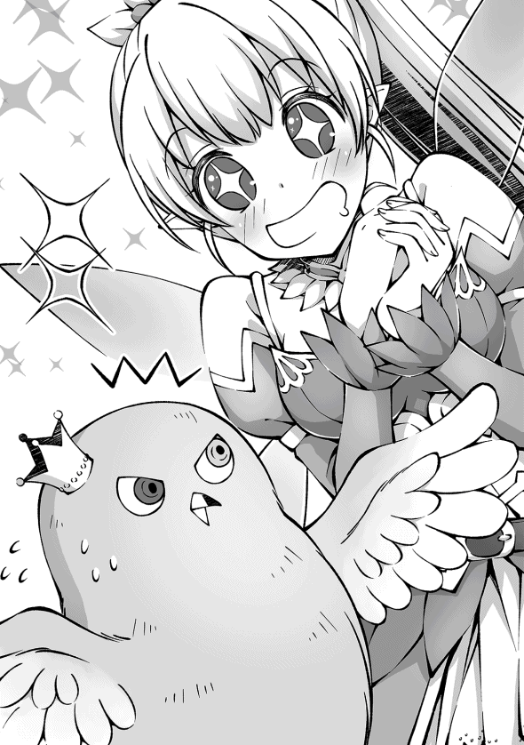
......なでなでも、もふもふも構わないんだが、手加減はしてやれよ？ 新スキルを試す前にぐったりされたら困るからな。
◆◆◆
【癒 しを】よく分かる回復魔法の覚え方【我が手に！】
１：名無しのゲーマー
ここは新しく追加された回復魔法に関するスレです。スキルの取得方法や、道中のストーンゴーレムについてもこのスレで。その他シスターちゃんのデカメロンについてなど
雑談やクラスチェンジや金髪ロリ美幼女悪魔っ子魔人ちゃんについては別スレで
次スレは９５０を踏んだ方が宣言して立てること
・
・
・
４２５：名無しのゲーマー
にしても、昨日のアレは凄かったよな〜。俺は生で見れたよ。ヤバかった。キュン死するかと思った
４２６：名無しのゲーマー
マジで!? 羨ましいんですけど!!
４２７：名無しのゲーマー
俺も見れてないわ〜。写真も一切出回ってないからさ。口伝でしか伝わってこないんだよ......。くぅ〜！ 羨ましい！ 爆 ぜろ！
４２８：名無しのゲーマー
え？ 何の話？ 昨日何かあったの？
４２９：名無しのゲーマー
あぁ、お前知らないのか。えっと......うさたんは知ってるか？
４３０：名無しのゲーマー
当然じゃん。ウサギさん装備を初めて着たプレイヤーで、闘技大会で優勝したボーパルちゃんのご主人様だよね。黒髪ロングで、わりとかわいい女の子
４３１：名無しのゲーマー
わりとかわいいとはなんだてめぇ！ めちゃくちゃかわいいだろうが！ あぁん!?
４３２：名無しのゲーマー
ボーパルちゃん......だとぉ!? 様を付けろ様を!!
４３３：名無しのゲーマー
なんで信者が湧いてるんですかねぇ
４３４：名無しのゲーマー
ちょっと教祖様に報告してお説教してもらうね。愛が溢れるのはいいけども、他人に迷惑をかけるのは教義に反するからね
４３５：名無しのゲーマー
......物の例えで信者って言ったのに、ごく当たり前の様に教祖様や教義って単語が返ってきてビックリしてる件
４３６：名無しのゲーマー
教祖様って言ったらあの人だよ。ボーパル様に本選の第一試合でけちょんけちょんに負けた人
４３７：名無しのゲーマー
けちょんけちょんって今日 日 聞かねえなぁ
４３８：名無しのゲーマー
変な電波を受信したのか、ボーパル様に蹴られた時に打ちどころが悪かったのか、突然宗教活動......と言う名のボーパル様ファンクラブを作り始めて、面白がったプレイヤー達がこぞって所属してるんだよな
４３９：名無しのゲーマー
怪しい宗教団体以外の何物でもないんですがそれは......
４４０：名無しのゲーマー
今入教すると、もふもふかわいい限定ウサギ様グッズが付いてくる！
４４１：名無しのゲーマー
入ります！ かわいいは正義！
４４２：名無しのゲーマー
で？ 昨日何があったんだよ。うさたんが何か関係してるんだよね？
４４３：名無しのゲーマー
うさたんパンチラ未遂事件の事かな？ うさたんが街中で唐突にスカートをたくし上げ始めて、街の機能が一部麻痺したっていう
４４４：名無しのゲーマー
いや、そっちじゃなくて、うさたんフェアリードレス疾走事件の方
４４５：名無しのゲーマー
待って。ちょっと待って！ パンチラ事件の方が凄く気になるんだけども!!
４４６：名無しのゲーマー
嫌な......事件だったね
４４７：名無しのゲーマー
一時的に留置所がパンクしかけたもんな
４４８：名無しのゲーマー
本当に何があったんだ!? 気になる！
４４９：名無しのゲーマー
それはさておき、疾走事件の話だ
４５０：名無しのゲーマー
さておかれた!?
４５１：名無しのゲーマー
フェアリーの服ってあるじゃん？ 妖精ちゃんが着ている方じゃなくって、モンスターのフェアリーが着ている、花びらをリボンで纏 めただけの、防御力ゼロっぽい服
４５２：名無しのゲーマー
あぁ、あるなぁ。うさたんが連れてるフェアリーのを見た事がある。ちょっと動いただけで見えちゃいそうだったけども、流石に手のひらサイズのフェアリー相手じゃなぁ。
そんな事よりもパンチラ事件の詳細を......
４５３：名無しのゲーマー
うさたんがその姿で街中を疾走したとしても？
４５４：名無しのゲーマー
詳しく聞かせてもらおうか
４５５：名無しのゲーマー
たぶんコスプレかなんかだろうな。フェアリーの服を着たうさたん......いや、ふぇあたんが街中を全力疾走してたんだ。よっぽど急いでいたのか、胸元もスカートも押さえないで走るものだから、ペロンと見えてしまうんじゃないかと心配で心配で。道行くお兄さん全員で見守ってたんだぜ
４５６：名無しのゲーマー
おまわりさ〜ん!! この人です!!
４５７：名無しのゲーマー
何を言うか。私は紳士だ！
４５８：名無しのゲーマー
ある意味な！ 留置所で反省してこい！
４５９：名無しのゲーマー
......と言いつつ、本当は羨ましいんだろ？
４６０：名無しのゲーマー
まぁな!! ズルイ！ 俺も見たかった！
４６１：名無しのゲーマー
はぁ。写真を撮れなかったのが心残りだよな〜。また着てくれないかなぁ〜
４６２：名無しのゲーマー
妖精ちゃんと合流したらすぐに脱いでたしね。望み薄じゃね？
４６３：名無しのゲーマー
緊急！ 緊急！ うさたん発見！ うさたん発見！ 妖精ちゃんと一緒に山を登ってきてる!!
４６４：名無しのゲーマー
なん......だと......!?
４６５：名無しのゲーマー
どうしよう。こんな話してたからうさたんに一目会いたい欲求が高まってるんだけど！
４６６：名無しのゲーマー
私も私も。ちょっと山登りしてこようかな。うさた〜ん！
４６７：名無しのゲーマー
あぁ。折角山の人口密度が下がってきたと思ったのにまた跳ね上がる......
４６８：名無しのゲーマー
無自覚のままに多くのプレイヤー達を動かす女。うさたん......凄い！ 傾国 の美女み
たい！ 魔性の女感！
４６９：名無しのゲーマー
似合わねぇ〜。ウサミミフード被ってルンルンスキップしてる魔性の女とかないわ〜。ギャップ萌え狙い？
４７０：名無しのゲーマー
あ！ 野生のサルが飛び出してきた！
４７１：名無しのゲーマー
と、思ったら妖精ちゃんのレイピアで穴だらけにされて、ボーパル様のキックでぺしゃんこになって、うさたんに封印されたな。美しい流れ作業だ
４７２：名無しのゲーマー
うわぁ......
４７３：名無しのゲーマー
まぁ、闘技大会一位と二位に襲い掛かればそうなるわな
４７４：名無しのゲーマー
むしろよく襲い掛かろうと思ったな。その勇気を称賛したいよ
４７５：名無しのゲーマー
いや、先入観を捨ててよく見てみろ。あのうさたんパーティの構成メンバーを！
４７６：名無しのゲーマー
えっと......ウサギずきんをかぶってる小さな女の子と、肌色多めのドレスを着ている胸の大きな女の子と、ウサギさんと、フクロウさんと、ヒツジさんと、妖精さん。
......あれ？ 弱そうだぞ？
４７７：名無しのゲーマー
人を見た目で判断してはいけないという良い見本だな。だって、一番強いんだろうウサギさんが一番弱そうに見えるもん。なにあれ？ 兎詐欺 ？
４７８：名無しのゲーマー
だれが上手い事言えと......
４７９：名無しのゲーマー
うさたん達もこの山を登ってるって事は、回復魔法目当てなのかね？
４８０：名無しのゲーマー
まぁ、そうじゃね？ 他に理由も思い浮かばないし
４８１：名無しのゲーマー
何故山に登るのか？
４８２：名無しのゲーマー
そこに山があるから
４８３：名無しのゲーマー
証明完了！
４８４：名無しのゲーマー
いやいや、そんな崇高な信念を持って登ってないと思うよ？
４８５：名無しのゲーマー
うさたんは山へ芝刈りに。妖精ちゃんは川へ洗濯に
４８６：名無しのゲーマー
すると川上からどんぶらこどんぶらこと大きなウサギが......大きすぎて流れてこれませんでした
４８７：名無しのゲーマー
ネタが渋滞を起こしてるぞ〜。ボケればいいって訳でもないからな？
４８８：名無しのゲーマー
キャンプに行ったんじゃね？ 最近流行りじゃん。女の子のゆるいキャンプ
４８９：名無しのゲーマー
うさたんは薪に火をつけられる系女子だったのか......
４９０：名無しのゲーマー
山ガールの斬新な呼び方だな
４９１：名無しのゲーマー
火のつけ方が分からんから、薪なんて圧 し折ってストレス解消にしか使えねぇわ......
４９２：名無しのゲーマー
自信アリ！
柿をぶつけられて死んだカニの仇討ちだ！
４９３：名無しのゲーマー
あぁ。サル殺してたしな。納得
４９４：名無しのゲーマー
あれは飛んで火に入る夏のサルでしょ？
４９５：名無しのゲーマー
サルに何があったんだ。焼身自殺って余程の覚悟がないと無理だぞ？
４９６：名無しのゲーマー
美味しい物が用意できなかったから、どうぞボクを食べてくださいって火に飛び込んだんじゃない？
４９７：名無しのゲーマー
それサルじゃなくてウサギじゃん！
４９８：名無しのゲーマー
月の模様が餅をつくウサギからサルに変わってしまう......
４９９：名無しのゲーマー
あ、うさたん達山頂まで来たよ......って、報告するタイミングを窺 ってたら戦闘終わっちゃった
５００：名無しのゲーマー
早っ！ 流石ウサギ様......
５０１：名無しのゲーマー
真っすぐ山頂に向かったみたいだし、やっぱりうさたん達もクエストに行くみたいだね
５０２：名無しのゲーマー
ところで、そのクエストってどんな内容なの？ まだやってないから分かんないんだよね
５０３：名無しのゲーマー
ザックリ言えば採取クエストだな。第二層は全体が広い洞窟になってるんだが、その洞窟のどこかにある水晶を持って帰ればクエスト達成だ
５０４：名無しのゲーマー
この水晶が、時間経過で採掘できる場所が変わるから面倒なんだよな。ここに行けば採取出来る！ って場所がないんだよ。だから、ひたすら足で稼ぐしかねぇの
５０５：名無しのゲーマー
逆に言えば運がいいと入口で採取出来るけどね
５０６：名無しのゲーマー
採取はゲームの基本です!!
５０７：名無しのゲーマー
どうした急に。持病か？
５０８：名無しのゲーマー
なんか突然叫ばなきゃならない気になって......
５０９：名無しのゲーマー
教祖様以外にも怪電波を受信してる人が......あれ？ 今怪電波受信するの流行ってるの？
５１０：名無しのゲーマー
つまりは、どこにあるか分からない水晶を探して延々と彷徨 う必要があると。きっついなぁ......
５１１：名無しのゲーマー
見つけてから帰るのも面倒そう。方向音痴だから絶対迷子になる確信があるぜ！
５１２：名無しのゲーマー
そこは地図のナビ機能を使えばチョロイぞ。行った事のあるルートしか表示してくれないから遠回りにはなるかもだが
５１３：名無しのゲーマー
最悪デスルーラや強制ログアウトからの入り直しでもいけるしな。デメリットあるから使いたくはないが
５１４：名無しのゲーマー
ヤバイ！ ヤバイぞ！ これはヤバイ!!
５１５：名無しのゲーマー
どうした急に。持病か？
５１６：名無しのゲーマー
今度はヤバイ！ って叫びたくなる持病持ちかぁ......
５１７：名無しのゲーマー
このスレ奇病の持病持ち多すぎん？ なんなの？ 奇病病棟なの？
５１８：名無しのゲーマー
何がヤバイか説明する前に確認させてくれ！ この時間に洞窟に出るモンスターって、ゴブリンとコボルトとバットだけだったよな？
５１９：名無しのゲーマー
『今確認されてるのは』って注釈が付くが、そうだな
５２０：名無しのゲーマー
どうしたの？ 新種のモンスターでも見つけたの？
５２１：名無しのゲーマー
鑑定出来る程近づいては居ないが......多分
５２２：名無しのゲーマー
やけにもったいぶるなぁ、で？ 結局何が居たの？ キリキリ吐けぃ
５２３：名無しのゲーマー
それがな......ウサギだ。洞窟の中にウサギが居るんだ！
５２４：名無しのゲーマー
......お、おう
５２５：名無しのゲーマー
あ〜、今さっきうさたん達が洞窟に入っていったんだよ。だからたぶんお前が見たウサギはボーパル様だ。安心しろ
５２６：名無しのゲーマー
それが一匹じゃねぇんだよ!! 沢山の......沢山のウサギが跳ねまわってる影が見えるんだ！
５２７：名無しのゲーマー
ぴぇっ！
５２８：名無しのゲーマー
まままま、まぁて待て落ち着け。見たのは影だけなんだろう？ 何かの見間違いじゃないか......？
５２９：名無しのゲーマー
っ!! 声まで聞こえた!! それも沢山だ!! 洞窟の中でウサギの声がこだましてやがる!!
５３０：名無しのゲーマー
いやぁぁぁぁ!! こっちも聞こえたぁ!!
５３１：名無しのゲーマー
マズイ！ 洞窟の中に大量のウサギが居るぞ!!
５３２：名無しのゲーマー
草原に居るみたいに、大人しいウサギならいいが、ボーパル様みたいに好戦的なウサギが逃げ場の少ない洞窟の中で大量に襲い掛かってきたら......
５３３：名無しのゲーマー
っ！ 逃げろ!! 一時退却！ モンスターはエリアの境界線を越えられない！ 第一層まで戻れば安心だ!!
５３４：名無しのゲーマー
バカやろう!! 第一層までどれだけ離れてると思ってやがる!?
５３５：名無しのゲーマー
それに、ナビは一度通った道した案内してくれないんだよ!? ウサギに道を塞がれたら
帰り道が分からなくなる！
５３６：名無しのゲーマー
死にたくない死にたくない!! 紐無しバンジーはいや!!
５３７：名無しのゲーマー
落ち着け！ 一度プレイヤーで集まって地図を共有するんだ！ そうすれば死なずに出れる！
５３８：名無しのゲーマー
固まってる所を襲われたらどうする!? 危険すぎる!!
５３９：名無しのゲーマー
平和だった掲示板が一瞬で阿鼻叫喚 に
５４０：名無しのゲーマー
現地は更にカオスってそうだな〜
５４１：名無しのゲーマー
ウサギさんマジ怖い。暗闇に紛れて首を狩られそう。むしろ狩る。間違いない
５４２：名無しのゲーマー
やべぇ。岩の影が全て怖い。そこからウサギが飛び出してきてなんかえげつないコンボで壁にぐしゃってされそう......
５４３：名無しのゲーマー
ウサギにトラウマ抱えてる人多すぎん......？
５４４：名無しのゲーマー
お前も足がガクガクするような高所で突然背中を押されて、慌てて振り返ったら足を振り切ったウサギがそこに居る......って状況を体験してみたら気持ちが分かるよ。あとは頭から真っ逆さまに落ちるのみだったわ......
５４５：名無しのゲーマー
なにそれ怖い。ウサギさん超怖い。
５４６：名無しのゲーマー
振り返ると友の頭がなく、代わりにウサギがぴょんぴょんしてたり......
５４７：名無しのゲーマー
（首の）ポロリもあるよ！
５４８：名無しのゲーマー
ぴぇぇぇ！ 暴力バニーこわぃぃ！ 逃げなきゃぁぁ！
５４９：名無しのゲーマー
踊るウサギの影......聞き覚えがある気がするけど気のせいよね
５５０：名無しのゲーマー
大量のウサギの声......身に覚えがある気がするけど気のせいだね
◆◆◆
『きゅいきゅいきゅいきゅいきゅい』
「えぇい！ 喧しいわ!! 」
「グギャ!? 」
は！ あまりの五月蠅 さに、ツルハシをゴブリンにぶん投げてしまった。
だってこのツルハシ感度良すぎるんだもん。ちょっとした衝撃できゅいきゅいきゅいきゅい......うるせぇ！ やっぱりこのアイテムも欠陥品だった！ さっき使ったウサギの影絵カンテラも、影の部分が暗くて見えなかったし！ 回してみたらかわいかったから許すけど！
「もぅ、お姉ちゃんなにしてるの？ ミズキちゃんのスキルを試すんでしょ？」
「ごめんごめん。ミヤヒナに押し付......もらったアイテムの確認もしたかったからさ」
結果使えないという事実を確認するだけに終わったけど。適当にストレージに突っ込んどけばいっか。
「では、改めて。やっちゃえミズキ！」
「ホー！」
「「「「グギャギャギャギャ！」」」」
モンスター ゴブリン ＬＶ14
状態 アクティブ
洞窟に出てきたモンスターは、肌が緑で子供ぐらいの大きさの棍棒を持ったモンスター。雑兵でおなじみのゴブリンさんだな。雑兵ってほど、低レベルじゃないけどさ。イメージの話ね。
「ホー！」
「グギャァ!? 」
ミズキが空中で大きく翼を広げると、ミズキの周りに冷気が集まり氷の刃を形作った。ミズキが翼を前へと差し出すのに合わせて射出された氷の刃は、ゴブリンの頭部を見事に捉 えてのけぞらせた。
ふむふむ。レアっぽい氷魔法と言えど、基本は射出してぶつける感じなのね。それともレベルが上がると凄い魔法が増えるのかな？ 辺り全てを氷の世界に変えたりとか。エターナルフォース！
「まぁ、そっちは追々だな。前座はこれぐらいにして本番いってみよう！ ミズキ！ マジカルチェーーンジ!! 」
「ホーー！」
ミズキがスキルを発動させると、光のリボンのようなエフェクトがどこからともなく発生し、ミズキを包み込んで光の球体となった。
「ホー！」
再度ミズキが気合の声を上げると、光の球体は内側が弾け飛び、キラキラと輝くリボンのドレスを纏ったミズキが姿を現した。
「「な、なにそれかわいい!! 」」
「ホー！」
マジカルチェンジ！ 本当に魔法少女みたいな変身したぞ！ 魔法少女ミズキ爆誕！ 超かわいい！ キラキラのヒラヒラのフリフリだ！
「ホー!! 」
「きゅい！」
「メェェ？」
「「グギャァァァァァ！」」
光の残滓 をキラキラと纏うミズキは、ボーパルとアイギスが足止めしてくれているゴブリンへと突撃。すれ違いざまにゴブリンを翼で打つと、ぶたれたゴブリンが水平にぶっ飛んで壁に激突した。
更に両足でゴブリンの頭部を鷲掴みにすると、空中で大きく円を描く様に飛び、ゴブリンの頭を勢いよく地面へと叩きつける。
うわぁ。ミズキさん超強い。魔法少女化してる時は、敏捷と筋力のステータスが跳ね上がってるみたいだな。かわいい上に強いとか最強じゃね？
「ミズキ〜！ 魔法も強くなってるのか試してみて〜！」
「ホー！」
ゴブリンを物理でボコボコにしていたミズキに声をかけると、光の尾を引きながら俺の近くまで戻ってきて、再び氷魔法の詠唱を開始した。
ワクワクしながら見守っている俺達の前で、ミズキの周りに冷気が集まり......コロンとちっちゃい氷の欠片が地面に転がった。
あれぇ？ マジカルチェンジ中でも魔力は強化されないのか。むしろ弱体化してるな。マジカルチェンジは魔法が使えなくなる代わりに近接戦闘能力が上がるスキルなのね。なるほど。
「ホ〜......」
「ミズキ!? 大丈夫か!? 」
「ミズキちゃん!? 」
「きゅい！」
ふむふむと、したり顔で頷いている俺の前へと、ミズキがフラフラ落ちてきた。
緊急事態を察したボーパルも、サクッとゴブリンにトドメを刺して俺が抱き留めたミズキの元へと駆け寄ってくる。
えっと......鑑定した感じ、状態異常にかかっている訳ではなさそうだが、ＭＰが枯渇 してしまっているな。ミズキはうちのパーティでは一番ＭＰが多いから、枯渇する事なんてそうそうないんだが......新しいスキルはそれだけ燃費が悪いって事だな。
特にマジカルチェンジは常時ＭＰ減少型みたいで、ＭＰが枯渇したら変身が強制解除されて、まともに飛ぶ事すらできなくなるみたい。
強力なスキルではあるんだが、使いどころには気を付ける必要がありそうだ。本当に困った時の切り札って感じだな。
「ホ〜......」
「無理させてゴメンな。今はゆっくり休んでくれ」
「心配しなくても私達が居るからね！」
「きゅい！」
「〜〜！」
「メェ」
申し訳なさそうに目を細めるミズキをしっかりと抱え直し、頭をなでなでする。
実際に戦ってみた感じ、ボーパルとシルフが居れば、二層の敵も簡単に倒せたからな。問題ない。
さて。ちょっと予想外の事は起こったが、気を取り直して湧き水と水晶を探しますかね！
◆◆◆
《ゴブリンの封印率が百パーセントになりました》
《ゴブリンが封印完了しました》
《スキル：召喚魔法がレベルアップしました》
《ケイブバットの封印率が百パーセントになりました》
《ケイブバットが封印完了しました》
《スキル：召喚魔法がレベルアップしました》
洞窟に出てくるモンスターは主にゴブリン。時々ケイブバットだな。ケイブバットは山の第一層にいたバットがクラスチェンジしたモンスターっぽい。だいぶデカくなっててキモかった。もうちょっとデフォルメして欲しかったよね。後でメトにメッセージ送っとこう。コウモリかわいくしてって。
隊列としては、索敵能力に優れるボーパルが先頭を行き、残りは団子だな。シルフが言うには、洞窟内にはそこそこトラップがあるらしいが、カンテラのか弱い明かりだけじゃ全然分からん。一応夜目のスキルも取ってみたんだが、低レベルな今だと焼石に水だ。トラップの発見もボーパルに丸投げだな。もぅボーパルが居ないと生きていけない体になってそう......色んな意味で。
「んー、見つからないねぇ......」
「だなー。そもそも、探してる水と水晶がどんな物なのか、よく分かってないしな」
「光ってるらしいから、暗いからって見落とすことはないはずなんだけどね。っと、また分かれ道みたい」
洞窟探索をさらに難航させているのが、この分かれ道の多さだ。
二又だったり三又だったり十又だったりするから、うんざりである。
進んでみて行き止まりだったら、ここまで戻って来なきゃいけないんだからね？ 歩いた距離と進んだ距離に差があり過ぎて現実逃避したくなるよ？ あ〜ミズキがもふもふするんじゃ〜。
「あっ！ お姉ちゃん見て！ 聖なる水晶ってアレじゃない!? あの壁から生えてるやつ！」
「ホー......？」
代わり映えのしない通路を辟易 しながら歩いていると、突然シルフがこちらを振り返り大声を上げた。
興奮しているのは分かるけど、ちょっと声を落とせ！ お前の声高いからすげー響くんだよ！ 寝てるミズキが起きちゃったじゃない！
でも水晶が本当にあったのかは気になるな。興奮してキャーキャー騒いでいるシルフが指差す先には、確かにぼんやりと白く光る何かが見える。
......人魂とかじゃないよね？ グロとホラーはノーセンキューだよ？
「やったぁ！ まずは水晶ゲットだね！ わーい！」
「きゅい？」
目的の物を見つけてテンションアゲアゲになったシルフが、採取用のツルハシを取り出しつつ、水晶らしき物へと突撃していく。罠 や敵の確認をしているボーパルを追い抜いて。
......あ、嫌な予感がする。
「シルフ！ ちょっと待て！」
カチッ。
しかし、時既に遅し。俺の静止の声が間に合わず、勢い良く踏み出したシルフの足の下から、何かスイッチの様な物を......というか、罠のスイッチを踏んだ音が、ハッキリと俺の耳に届いた。
「「あっ......」」
どんな罠が発動するのか分からないけど、地雷系とかはやめてください！ バカやったのはシルフだけなのでシルフだけが被害を被るやつでお願いします!!
パカッ。
結果、トラップの内容は落とし穴。スイッチを踏んづけたシルフの足が、そのまま沈み込む様に床の下へと落ちていく。さらばだシルフ！ 心配しなくてもあの水晶は俺達が回収しておくからな！ 安らかに眠れよ！
「あっ......まいよ!! 」
「なにぃ!? 」
しかしシルフも並みじゃない。即座に開きつつある床を蹴り飛ばすと跳躍。無駄にスピンジャンプをしながら落とし穴を飛び越えた！
パカッ。
「へ？ お、おねえちゃあああああぁぁぁぁぁ〜〜〜〜〜........................」
ぎぃぃぃ、バタン。
「「「「「............」」」」」
あ、ありのまま今起こった事を話すぜ！ 調子に乗ってトリプルループしながら落とし穴を華麗に回避したシルフが、着地の瞬間にもう一つ開いた落とし穴にボッシュートされてしまった!! 隙 を生じぬ二段構えとは恐れ入った。これが孔明 の罠か......。
シルフさんトリプルどころかめちゃくちゃスピンしながら墜落していったしな。超シュール！ ある意味シルフらしいな！
というか、咄嗟 に出た俺を呼ぶ声がお姉ちゃんなのかよ。お姉ちゃん呼びは演技じゃなくて素だったとか流石のお姉ちゃんもシルフとの付き合い方を考えちゃうよ？
「というわけで、水晶を採取するか」
「ホー!? 」
なんかミズキが驚いてる。いや大丈夫だって。シルフならきっと一人でもやっていけるさ。というかどこに落ちていったかも分からないのに、助けに行く手段もないし。
まぁ、同じ穴に落ちればシルフのところには行けるかもしれないけど、ミイラとりがミイラになるだけだしな。
最悪死んでも街に戻るだけなんだし、探索を続けようぜ。そのうちひょっこり合流するかもしれないしな。シルフは命を張って俺達にトラップの場所を教えてくれたんだ！ 俺達はその犠牲を無駄にしない為にも前へ進むぞ!!
あ、でも一応みんな固まって移動しようね。サモナーが孤立とかシャレにならないからね。
「きゅい！」
「ホー」
「メェ〜」
俺の合図で、戻って来たボーパルとアイギスをひと撫でしてから水晶の方へと進む。
はぁ、まったく。シルフったらなんのために俺達に付いてきたのやら。やれやれだぜ。
カチッ。
「「「「......」」」」
「〜〜♪」
......え〜と、ティーニャさんや？ 何故キミはそんなに楽しそうに地面を両手で押しているのかね？ そこはさっきシルフがトラップを踏んだ辺りじゃなかったかね？ まさか......まさかとは思うけどティーニャお前......！ 待て、動くな！ 話せば分かる！ 違う！ 放せとは言っていない！ 今その手を放したら!!
パカッ。
「てぃ、ティーニャのバカぁあああああぁぁぁぁぁ〜〜〜〜〜」
「きゅいぃぃぃぃぃぃぃぃぃ〜〜!? 」
「ホー!? 」
「メェェェェ!? 」
「〜〜〜〜〜〜〜♪」
ティーニャの真下と、一塊になった俺達の真下に落とし穴が出現し、みんな纏めて真っ逆さまに落ちていく。
ティーニャはおしおき確定だ！ 三日間おやつ抜きの刑にしてやるぅ！
......やっぱり三日はかわいそうかも。ごめんなさいするまでオヤツ抜きね！
ドボン!!
「ぶはっ!! 死ぬかと思った!! 」
「ガボボボボ......」
「お、お姉ちゃん!? 」
「きゅい！ きゅい!! 」
「ホー！」
「〜〜♪」
落とし穴の下はちょっとした地底湖の様になっていたらしく、視界にキラっとしたものが映ったと思った次の瞬間には、俺とアイギス体は水中へと沈み込んでいた。
もともと自由に空を飛べるティーニャはもちろん、空歩で宙を蹴って、陸地に着地したボーパルと、マジカルチェンジの反動が抜けてきて、空を飛べる程度に回復してきたミズキも無事だ。
というか、アイギスがヤバイ！ 普通に沈んでってる!! ちょっ！ 陸に引っ張り上げるからミズキも手伝ってくれ！
「助かったよお姉ちゃん。お姉ちゃん達が助けに来てくれなかったらアレを私一人で相手しなくちゃならなかったからね」
「お、おう」
......見捨てる気マンマンだったことは黙っておこう。
って、そこ！ ニヤけながらドヤ顔するなんて器用な顔してんじゃねえぞティーニャ！ かわいいじゃねーか、ちくしょう！ そのほっぺたをこねくり回して伸ばしてやろうか！ お餅みたいに！ むにゅーんって！
......ん？ と言うかアレ？ アレってドレの事？ なんか凄く嫌な予感がする......。
いや、予感どころか、装備のセットスキルである索敵には、モンスターの気配をビンビンに感じているんだが、そんなことより地底湖きれいだな〜。壁からポツポツと生えている水晶が薄っすらと光を放っており、揺らめく湖面を幻想的に映し出している。地底湖の中にも水晶があるのか、水中からも光が漏れてるな。キレ〜。
うん。この光景を見ただけで落とし穴に落ちただけの価値はあったな。精霊ちゃんの住処にある、大きな噴水と元気なフェアリー達と木々のざわめきがセットの〝動〟の湖も好きだけど、こういう〝静〟の湖もいいな。大自然の神秘的なものを感じてるような気がする。
まぁ、ゲーム内なんだから全部人工物じゃねーかって言ったらそれまでだけどさ。あ、カンテラが無い。湖の底に沈んじゃった。唯一のマトモなカンテラだったのに......しょぼん......。
「「「「ゴゴゴゴゴゴ......」」」」
「ほらほらボサっとしない！ 動き出したよお姉ちゃん！」
「きゅい！」
「ホー！」
「〜〜！」
「メェ......」
「へいへい。まったく。もうちょっと風景に見蕩 れていたかったんだがなぁ......」
敵の気配に全力で背を向け、湖に足を浸けつつ現実逃避をしていた俺の背後から、ついさっき聞いた様な地響きが、幾重にも反響して聞こえてくる。嫌々振り返ると、まぁ、出てくるわ出てくるわ。どこに隠れていたのかと聞きたくなるほど沢山の影がわらわらと......。
まぁどこに隠れていたのかは湖面から頭を出した瞬間には分かっていたけどもさ。
「「「「ゴゴゴゴゴ！」」」」
モンスター クリスタルミニゴーレム ＬＶ17
状態 アクティブ
背後に湖を背負う俺達を半円状に包囲しているのは、体が輝くクリスタルで出来てるゴーレムさん。一体一体は俺の腰ほどしかない小ささだが、ざっと見た感じ三十体ぐらいはいる団体さんだ。
「落とし穴の下にモンスターハウスか〜。あるあるの組み合わせだね」
「だな。自動生成のダンジョンなら、確率的には低い筈なのに何故かよく当たる鉄板の組み合わせだよな」
「いや、それは単にお姉ちゃんの運が悪いだけでしょ......」
「えー？ 九十五パーセント当たるクジを三回連続で外した事を自慢してくる人には言われたくないんですけどー？」
じりじりと距離を詰めてくるゴーレムの団体さんを前に、軽口を叩き合いながらも手早くハンマーを取り出して戦闘準備を整える。
確かに数だけ見れば驚異的ではあるが......俺達と渡り合うにはレベルが足りなすぎるよなぁ？
「きゅい！」
「ん？ ボーパルもハンマーを貸して欲しいのか？ 確かに素足で蹴るには痛そうな相手だしな」
普通のハンマーは俺が装備しちゃってるから......よし、ボーパルにはウサミミハンマーを貸してあげよう。他のハンマーはロマンを詰め込み過ぎて振ると爆発したりするからね。安全装置はかっこ悪いから外したって、どこのマッドサイエンティストだよ！ 今度ミヤヒナの工房に安全第一って書きに行かないとな。
「「「「ゴゴゴゴゴ！」」」」
「ボーパルちゃんは右半分をお願い！ 左半分は私がもらうよ！」
「きゅい！」
クリスタルゴーレムが、短い足をよちよちと精一杯動かして、両手をブンブン振り回しながら襲い掛かってきた。
意外とかわいい動きするんだなぁ。とか思っている間に、突撃したボーパルとシルフがドッカンバッコン数を減らしていく......。
あれ？ ちょっと待って？ 右半分がボーパルの担当で、左半分がシルフの担当なら、残された俺達はどこを担当すればいいの？ 突撃した二人のサポートを......と言いたい所だけど、動きの鈍いクリスタルゴーレムに、二人が捕まるとは思えないし、下手に援護射撃をして、巻き込む方がよっぽど怖い。あの二人は一騎当千の英雄タイプだからね。好きにやらせた方が戦果が出ると思うんだ。
「しゃーなし。俺達魔法組は二人が居ないところを適当に撃つか。あ、アイギスは囮 よろしく」
「ホー！」
「〜〜〜！」
「メェェ〜？」
えぇ〜？ と、不満の声を上げるアイギスのお尻をツンツンして前の方に出して、不格好なヨチヨチ歩きで精一杯近づいてきたクリスタルゴーレムを遠距離から魔法で転がし、起き上がれずにジタバタしているところをハンマーで叩き潰してトドメを刺して回る。
......なんか非道なマネをしている気分になってきた。効率よく戦うのは普通の事なのにな。
「「「ゴゴゴゴゴ......」」」
「あ〜、もう。無駄に数が多いなぁ」
「〜〜〜......」
「ホ〜......」
クリスタルゴーレムもストーンゴーレムと同じく、ハンマー以外の攻撃はダメージが通りにくいみたい。魔法しか攻撃手段のないティーニャでは、相手を転ばせるぐらいしか出来ないし。ミズキも、マジカルミズキに変身できるのは一日一回という厳しい制約がある様で、今は魔法攻撃しかできない。アイギスはそもそも攻撃手段がない。
......今思うとこのパーティ。魔法攻撃が効かない相手だと、ボーパルしか戦闘に参加できなくね？ 俺が死んだらお終いだから、俺は前に出たくないし......。やっぱりミズキがプリンセスオウルにクラスチェンジしたのは大正解だったな！ 制約があるとしても、物理攻撃が出来る人が増えるのはありがたいよ。次に召喚する子は物理寄りに育てようかな？
「これでお〜しまい！」
「きゅい！」
「ゴルフしようぜ！ お前ボールな！」と言った具合に、ばっこんばっこんフルスイングしまくるシルフと、「モグラ叩きしようぜ！ お前モグラな！」と言った具合に、ぺったんぺったん叩き潰しまくるボーパルの活躍で、クリスタルゴーレムの制圧は速やかに達成された。俺も何体かは倒したもんねぇ〜。もはや役立たずとは呼ばせない！ もともと呼ばれた事ないけど！
「ふぅ。全然大した事なかったな」
「きゅい！」
三十体も居るんだ。半分の十五体ももらえれば、余裕で封印完了できそうだ。多分十体ぐらいじゃないかな？
「お姉ちゃんそのセリフ、フラグっぽいからやめてよ。そう言う事言ったら、だいたい潰れて死ぬんだからね？」
「うへぇ、圧死とかわりと嫌な死に方だから勘弁して欲しいんだが......」
主に死後の絵面的に。転がってきた岩に潰されて、ペラペラになった表現なら許す。
いや、別に圧死したい訳じゃないけどね。と言うか死にたくない。当たり前だけど。
「きゅい！」
「あたちが守るから安心するの！」と、でも言いたげな様子で胸を張るボーパルだが、圧死の話をした直後に、その担いでいるハンマーは怖いよ？ もう使わないなら回収するぞ〜。って、なんかハンマーの頭がガタガタしてるんだけど......え？ もう壊れそうなの？ 早くない？ ボーパルの使い方が荒かったからか、ウサミミ機構のせいで耐久値が低かったからか......恐らく両方だな。
「あ！ 見て見てお姉ちゃん！ 水晶ドロップしたよ！ クエスト片方達成だね！」
「お〜。クリスタルゴーレムのドロップは水晶だったのか」
確かにそんな見た目してるもんな。
クリスタルゴーレムがドロップしなくても、そこら辺の壁から水晶は生えてるんだが、綺麗過ぎて壊すには惜しいからな。ドロップで出るんならそれに越したことはない。
「それじゃ、湧き水も採取して帰るか」
「え？ 水晶なら、そこらへんからいっぱい生えてるけど......湧き水はどうするの？」
「いや、どうするもなにも......」
そこで一旦言葉を切って、辺りをぐるっと見渡す。
俺達が落ちてきた湖の畔は、ゴツゴツとした岩場が広がっており、所々の地面から淡く光る水晶が生えている。また、俺の背後には深さの分からない大きな地底湖があり、壁から生えている水晶の光を反射し、キラキラと輝いているな。
「......俺の後ろにいくらでもあるだろ？」
「......へ？ それってまさか......その地底湖の事？」
俺の言葉に一瞬きょとんと惚けた表情をシルフが、わざわざ背伸びをして俺越しに湖を覗き込みながら言った。
「そのまさか以外ないじゃん」
「いやいや、絶対〝湧き水〟っていう規模じゃないでしょ！ どうみても〝地底湖〟だよ！」
「んー？ でも、壁から滴ってる水が湖に流れ込んでいるし、それ以前に......いつから湧き水が少量だと、錯覚していた？」
「なん......だと......？」
目を見開いてフリーズし、体全体で驚きを表現しているノリのいいシルフは一先ず放置して、湖の水を支給品のビンに入れてみる。
うん。鑑定結果にも聖なる湧き水って表示されてるな。よしよし。
「これにてクエスト終了！ お疲れ様！」
「きゅい！」
「ホー！」
「......なんだろう。別にいいんだけど、降って湧いた幸運でクエスト達成って、なんか釈然としないよね。達成感があんまりないからかも」
なんかシルフが生意気な事言ってる。別にいいんだよ？ シルフは延々洞窟を彷徨って、どこにあるか分からない湧き水を探し続けても。俺達は帰るけどね。
「別にいいんだけどって言ってるじゃん！ もぅ！ お姉ちゃんのいじわるっ！ 私にもミズキちゃんを抱っこして、もふもふさせてくれなきゃ許してあげない！」
「本当にシルフは素直だなぁ。自分の欲望に忠実で」
「え？ そ、そんな急に褒めても、許してあげないんだからね！」
「褒めてねぇよ」
「許しません。もふるまでは！」と謎のスローガンを掲げだしたうちの妹は、どうしてこう残念なのだろうか？
ほっぺをハムスターみたいに膨らませてふてくされる姿はそこそこかわいいのに、滲 み出る残念さが全てを台無しにしている。
まぁ、残念と言えばミヤヒナもそうだったけど。見た目はかわいい双子ちゃんなのに、言動が突飛過ぎて......いや、あれはあれでかわいいけどさ。
あ、あとエルも残念系美少女だな。口を開かず動かなければかわいいのに。
......あれ？ 気のせいか、俺の周りの女の子って残念系ばっかりじゃね......？ えっと、リアさんは女の子って年じゃないし、タクのパーティメンバーは腐ってたし......やべぇ！ マトモな女の子の知り合いがフィアちゃんしかいねぇ！ やっぱりフィアちゃんは俺の心のオアシスだな！ クエスト一段落したら会いに行こうっと。
◆◆◆
《クリスタルミニゴーレムの封印率が百パーセントになりました》
《クリスタルミニゴーレムが封印完了しました》
《スキル：召喚魔法がレベルアップしました》
封印完了っと。クエストの納品をして、余った分はフィアちゃんへのお土産にしようかな。神秘的でアトリエの雰囲気にも合う気がするし。湧き水も何かに使うかもしれないから、適当な容器に汲んでいこうっと。
「で、問題はここからどうやって帰るかって事だよね......」
「......だな」
天井の落とし穴は既に閉じてどこにあったのかも分からず。背後は底の見通せない湖。一応正面には先の見えない暗闇の洞窟が続いているが、さっきカンテラを湖の底に落としちゃったからなぁ。水晶が光っている湖の周辺ならともかく、暗闇の中には進みたくない......うん。完全に遭難したな。どうしよう。
「元の通路に戻れたら、地図のナビを頼りに帰れるんだけど......」
「厳しいだろうな。落とし穴の場所が正確に分かったとしても、下から開ける手段があるとは思えないし」
「ホ〜......」
俺達の話を聞いて天井を調べに行ったミズキが、しょんぼりしながら帰ってきた。どうやら落し穴自体が消滅してたっぽい。
この洞窟のトラップは、時間経過でランダムに場所が変わるらしいから仕方がないさ。ミズキのせいじゃないよ。よしよし。
で、上から脱出出来ないとなれば、残るは後ろか前なんだが......。
「やっぱりこの洞窟を進むしかないかな〜？ あ、死に戻りしたいなら介錯 するよ？」
「さらっと怖いこと言うなよ。死に戻りはなんか負けた様な気分がするからヤダ」
手っ取り早いのは分かるんだけどね。気分的に嫌なんだよね。
「いっそここで二人で暮らすのはどう？ あのゴーレム達を倒した後は地底湖の周りは安全エリアになったみたいだし、酒池 もふ林 のもふもふライフを送れるよ！」
「酒池もふ林ってなんだよ。初めて聞いたわ」
もふもふが林に生ってるのかな？ なにそれかわいい。
だが、ゲーム内でまでシルフと共同生活をする気はないので却下だ。たまにならいいけど、ずっと一緒にいると疲れるしな。テンション疲れしちゃう。
「それよりも一つ試してみたいことがあるんだよね。......こほん。シルフよ、湖のふちに立って底を見るのじゃ！」
「......なんで突然そんなかわいい声でおばあちゃん口調に......？ まぁいいけどね」
突然の俺の奇行に軽く首を傾げつつも。「いつものことか」と、軽く肩を竦 めるだけで流されてしまった。元ネタが分かるとは思ってなかったけど、なんか腹立つなその仕草。今に見てろよ。
「どれどれ......って深！ ちょっと予想よりだいぶ深いんだけど！ これ底なんて見えな......」
「とう！」
「〜〜！」
「きゃぁ───」とぷんっ───。
......はっ！ 体が勝手に！
いや〜、実に押したくなる背中だったもんでつい。なるほどなぁ。精霊ちゃんも俺の背中を押した時は、こんな気持ちだったわけだ。そりゃ、イタズラな笑みを全開で浮かべるってもんだ。
実際俺も、どっきり大成功！ って感じの笑みをティーニャと交わしてるし。というか打ち合わせなしでよくタイミングが合ったな。さすがは本家いたずらっ子こと、フェアリー。マジパネエっす。
「っと、冗談はこのぐらいにして、シルフは無事に街に戻れたみたいだな」
「きゅい！」
シルフの体が湖に溶けるように消えたし、距離が離れたからパーティも解除されたしな。
底なしの湖を覗いた印象がフェアリーガーデンの泉とそっくりだったもんで、メニューをチェックしてみたら〝街へ戻る〟のコマンドが追加されていたのを見つけたからね。十中八九大丈夫だろうとは思っていたけど、これでシルフが湖の底に沈んだらどう見ても殺人現場以外の何物でもないな。証拠を処分してアリバイを捏造 しなきゃ！ あとは視聴者を泣かせる気の効いた動機もね！
《クエスト『十字架に祈りを』を達成しました》
《スキル：回復魔法が取得可能になりました》
《クエスト『聖なる雫を求めて』を達成しました》
《スキル：付与魔法が取得可能になりました》
「酷い目に遭 った......」
「きゅい〜」
「ホ〜」
一旦ログアウトして、お昼ご飯を食べてきた俺は、とぼとぼと街中を歩いていた。
自分は水も滴るいい女スタイルで噴水の中に放り出されたのに、メニューの〝街に戻る〟コマンドで、安全に街に帰ってきた俺が許せなかったらしいシルフを宥 めるのが大変だったよ。転移して目を開けたら視界いっぱいにシルフの顔があり、ビビった次の瞬間に噴水の中に引きずり込まれたし......。お前は何処の妖怪だ！ カッパか！
更に、楽しそうな雰囲気を敏感に感じ取ったティーニャが突撃してきて、ボーパルやミズキまで混ざって来るもんだからさ。町のど真ん中の人通りの多い噴水で、服のまま水の掛け合いっこなんて言う、子供っぽい事までしちゃって......恥ずかしっ！ めっちゃ沢山の人に微笑ましそうに見られた！ 超恥ずかしい！
恥ずかしいから逃げたいのに、色んなメーターが振り切れてスーパーハイテンションになったシルフが俺の手を離さないしよ......。
最終手段として、ヒツジのアイギスですら嫌がる、地獄の様に苦い毒消し丸を瓶ごと取り出して。中身全部をシルフの口に突っ込んでやったわ。
......うん。陸に打ち上げられた魚の様にビクンビクン悶絶 するシルフを見たら、ちょろっとやり過ぎたかな〜？ と思わないでもなかったけど、通報されなかっただけマシだと思ってね？
「で、無事に納品は済ませて回復魔法と付与魔法を覚えられるようになった訳だが......どうするかな？」
「〜〜？」
シルフを撃退している間にお昼になったから、お昼ご飯を食べつつ、リアルでも考えてたんだが......とりあえず片方だけ取っておこうと思うんだよね。
どちらも必要ＳＰは５だから、両方取ることは出来るんだけど......夜目みたいに急にスキルが取りたくなるかもしれないし。クラスチェンジしたら職業スキルも増えるだろうから、ポイントとっておきたいしね。クラスダウンみたいに微妙なスキルかも知れないけどさ。
「回復魔法と付与魔法を天秤にかけたら......まぁ、回復魔法だよな」
「きゅい！」
ぴょーんっと、俺の顔ぐらいの高さまで飛び上がってきたボーパルと、おっそろーい！ と、ハイタッチした。
回復魔法はボーパルも覚えてるが、前衛でバリバリ戦ってるボーパルに回復まで丸投げするのは流石にな。クリームぬりぬりでも体力の回復は出来るが、回復手段は多いに越したことはないさ。
「シルフがパーティから抜けたし、次の仲間の召喚もしたいんだが......目的地が見えたから、中でやらせてもらおっか。初顔合わせになるんだし腰を落ち着けて召喚したいしね」
「メェ〜」
あくびを隠そうともしないアイギスも、早く休みたいとばかりに足を速めているな。アイギスはあの日当たりの良い窓際が好きだもんな〜。俺も好きだから気持ちは分かるよ。
◆◆◆
「おじゃましま〜す」
「きゅぃ〜」
「ホ〜」
「メェェ」
「〜〜♪」
コンコンとノックしてアトリエに入る。前回フィアちゃんに怒られたからね。俺も学習したのだ。
「......学習したのなら、フィアが返事をしてから入ってきてください」
アトリエに入った俺を迎えてくれたのは、今まさに椅子から降りて読んでいた本を片手に扉へ向かおうとしていたフィアちゃんの冷たい言葉とジト目だった。うん、フィアちゃんは今日もかわいいなぁ。
「口に出してないのに、よく俺が考えている事が分かったね！ 絆 だね！」
「......ユウさんが特別分かりやすいだけです。はぁ......バカな事言ってないで座ってください。今お茶を出しますから」
「そう？ ありがとう」
フィアちゃんのお言葉に甘えて、本棚の前に置かれている椅子に腰掛けさせてもらう。色々と用事はあるが、急ぎではないからな。フィアちゃんとのんびりお茶するのも素敵だしね。
「きゅい〜」
「ホー」
「メェェ〜」
「〜〜！ 〜〜!! 」
ボーパル達も思い思いの格好で寛 いでいるな。一匹元気に飛び回っているのがいるから注意しないとだけどさ。う〜ん。こうやって寛いでいるところを見ると、レン君みたいに自分の家が欲しくなっちゃうな。ちょっと小高い丘の上にある一軒屋で暖炉がある木造の家とか......。
......急に嫌な記憶が領空侵犯 してきやがった。ブロックで建物をクラフトするゲームで、頑張って作った木造の家の中に暖炉を作ったら壁と床に飛び火して、あたふたしてる間に全焼したトラウｍ......暖炉はやめておこうか。うん。
「......お待たせしました」
「うんにゃ。そんなに待ってないから大丈夫だよ」
過去のトラウマに背筋をぶるりと震わせていると、お盆にお茶とクッキーを載せたフィアちゃんが帰ってきて、俺の前のテーブルにカップを置いてくれた。
自分のお茶も机に置いたフィアちゃんが、ジッとこちらを見つめてるのが気になるが......どれどれ。まずは一口。あらおいしい。
「ん。おいしいね、これ」
「......フィアのとっておきのお茶ですから当然です。『お茶なんてどれも同じデス』とかいう姉さんは人間じゃありません」
「モンスター認定する程なのか」
苦笑いを浮かべる俺の前で、フィアちゃんはちょこっとだけほっぺたを膨らませてご立腹のご様子。
まぁ、気持ちは分かるよ。自分が好きなものを相手にも好きになれとまでは言わないけど、どうでもいいとか、嫌いだとか、面白くなかったとか、わざわざ本人に言うなよとは思うよね。陰で言えって意味じゃないけども。
「あ、そうだ。フィアちゃんにお土産をあげよう！」
「......お土産、ですか」
両手で持った自分のカップをふーふーした後。ちびちびと飲んでは、ほっこりしているフィアちゃんへと話を切り出すと、ちょこんと小さく小首を傾げられた。
もぅ〜。フィアちゃんは何をしてもかわいいなぁ。見てる人をほんわかさせる天才だな！
「山の洞窟で採ってきたんだ〜。いいでしょ？」
「......わぁ。すごくキレイな水晶です」
机の上に取り出したのは、クエストで余った水晶だ。水晶自体は濃い目の水色をしており、中心部が仄 かに青白く光っている。
真っ暗な洞窟だと明るく感じたが、元々明るいアトリエだと、普通の水晶っぽくも見えるな。ちょっと暗くしたいかも......テントでも被ろうかな？ フィアちゃんと二人で。なにそれ、楽しそう。キャンプみたい。
「......これはすごいです。水晶自体に光属性が備わっています。この水晶で装備を作れば魔法装備が容易に作れそうです。......ですが、耐久力が心もとないので、武器や防具には向きませんね。アクセサリーにするか、使い捨てのアイテムに加工するのが良いと思います」
「え？ ちょっと見ただけでそんな事まで分かるの？ フィアちゃんすごい！」
「......フィアだって錬金術師ですから。姉さん程上手ではありませんが......」
水晶の輝きに負けないくらい、目をキラッキラさせたフィアちゃんが、水晶の分析結果を教えてくれた。
フィアちゃんは謙遜 してるけど、十分凄いと思うけどなぁ。鑑定結果だけじゃ何が作れるかまでは分からないしね。
「そうだ！ フィアちゃんが錬金してるところ見てもいい？ 錬金術って、具体的にどうやってるのかしっかり見た事なかったし！」
「......フィアが、ですか。すみません。フィアはまだ見習いなので、売り物になる品は姉さんがいないと......」
バアァン！
「たっだいまデ〜ス!! 」
「きゅい!? 」
エルの不在を口実に、フィアちゃんの調合姿を観察させてもらおうかな〜と、考えてたのに、いいタイミングでエルがアトリエに飛び込んできてしまった。扉が粉砕するんじゃないかと心配する程の勢いで。
エルの突然の登場に、すぴすぴ、きゅぃ〜。とかわいらしい寝息を立ててたボーパルが、ビックリして真上に跳び上がって天井に頭をぶつけてるよ。......うん。見た感じ傷も無いようだし良かった。
「フィア〜。お姉ちゃんが帰ってきたデスよ〜。むぎゅぅ〜すりすり」
「......やめてください。子供扱いしないでくださいっていつも言ってるじゃないですか」
俺がアトリエの天井の心配をしている間に、カサカサとフィアちゃんに接近したエルが、横から飛びついてもふもふしてる。
お〜。エルいいなぁ。俺と代わってくれないかな〜。
「今日もフィアは抱き心地抜群デース！ ユウも一緒にどうデスか？」
え？ いいの？ やったぁ！ もふもふするぅ〜！
「......！ いい加減に......してください！」
「ぶるるうぇっ！」
お、お〜。エルが乙女とは思えない声を上げながら、地面と水平にすっ飛んで錬金釜 にぶつかり、頭からひっくり返って釜の中で犬神家してる......。たぶんエルをぶん投げたんだと思うけど、全然見えなかった。恐ろしく速い投げ技。俺じゃ見逃しちゃうね。
「......ふん。悪い子は調合しちゃいますよ！」
そして、ビシッと指を突き付けての決めポーズと決めセリフ。フィアちゃんノリノリである。意外と決めゼリフとか好きなんだろうか？ 最近はラノベも読んでるみたいだし、その影響かな？
......てか、怖いよ！ え？ 人体錬成？ 身体の一部を扉に持っていかれちゃうよ!?
「ぶくぶくぶく......ぷはぁ！ む〜、フィアは最近エルに冷たくないデスか？ ちょっと前までは『お姉ちゃん、お姉ちゃん』ってエルの後ろをずっと付いてきてデスのに......。もちろんツンツンしてるフィアもかわいいのデスが！」
「それに関しては全面的に同意」
「......はぁ。姉さんは一体いつの話をしているんですか。ユウさんも居るのですから、やめてください......」
あっさり釜から出てきて、さらっとフィアちゃんの過去を暴露するエルに、フィアちゃんが一気にお疲れムードに。
それにしてもお姉ちゃんかぁ〜。いいなぁ。俺の事もおにぃちゃん♪ って呼んでもいいんだよ？
「......呼びませんからね」
「まだ何も言ってないんだけど？」
「......あなたの顔に全て書いてあるので丸わかりです」
「......にぃにぃ、でもいいよ？」
「言いません！」
「ちぇー。まぁそれはいいとして。なんか今日のエル無駄にテンション高くない？ 酔ってるの？ あれ？ いつもこんなんだっけ？」
「......いえ、いつもよりはテンションが高いですが、お酒は飲んでいません。ずっと研究していた薬の完成が近いらしくて、今朝からあのテンションのままです。このままだといつか致命的な失敗をしそうなのですが、フィアがいくら言っても聞いてくれません......」
「そっか。それは......大変だね」
「......大変です」
常にあのテンションの人と一緒にいるとかキッツ。俺なら半日も持たないかも。実際ＦＷＯ発売間際のずっとそわそわしている翼の近くにとか居れなかったもん。そわそわ、ちらちら鬱陶しかったし、用もないのに話しかけてくるし、情緒不安定だし。
「......姉さん。ユウさんがお土産に、綺麗な水晶を持ってきてくれました。錬金術を使うところを見たいそうなので、何か作ってあげてください」
「どれどれ〜。おぉ！ 光水晶デスか！ はっ！ そうデス！ これはフィアが調合してみるデス！」
「......え、フィアが、ですか」
「今のフィアなら多分大丈夫デス！」
「......た、多分......」
おぉ！ ナイスアシスト！ これでフィアちゃんの錬金してる姿が見れるぜ！ 仲良くしてる子の違う一面を見れるってワクワクするよね。
......ん？ なんか、フィアちゃんからちらちらと視線を感じるんだけど何だろう？ 成功するように応援して欲しいのかな？
「大丈夫！ フィアちゃんならきっと上手く作れるよ！ 自分に自信を持って！」
「......はぁ。分かりました。この水晶を使うのは初めてなので、あまり期待はしないでください」
うし。パーフェクトコミュニケーション！ フィアちゃんもいそいそと調合の準備を始めてるし。選択肢は合ってたみたいだな。いや、選択肢は出てないけども。
「......では、始めます」
「フィアちゃんファイト〜！」
フィアちゃん用っぽい水色の釜へと、ぽいぽいと水晶を放り込んだフィアちゃんが、釜の中身をグ〜ルグ〜ルとかき混ぜてる。ほへ〜。あれが錬金術のやり方か。なんか料理を作ってるみたいだな。
「頑張るデスよ！ フィアなら出来るデス！ ......あぁ！ そこはもっとグルグル〜って感じでやるデス！ あっ！ 違うデス！ それじゃグルルグル〜デス！ そうじゃなくてグルグル〜デス！」
「......」
最初はちょっと離れたところからフィアちゃんを応援していたエルだが、すぐにソワソワし始め、フィアちゃんが調合している釜の近くをうろちょろしながら声をかけ続けている。
うわぁ、あれはウザイ。あのフィアちゃんが目に見えてイラっとした顔をしてるもん。あんなフィアちゃん見たことないよ......しかも調合中だから手が離せないみたいだしね。しゃーなし、俺がなんとかしなきゃ。
「......あ、そうだ！ なぁエル、ＭＰ回復用の薬ってある？ ミズキの新技がＭＰの消費デカイからさ。あれば買いたいんだけど......」
「それじゃグリグラル......ん？ ＭＰ......魔力回復薬デスか？ ちょっと在庫を見てくるので待ってるデス！」
フィアちゃんに教えようとしている気持ちしか伝わっていないエルを釜から引き離して、聞きたかったＭＰ回復薬について聞く。魔力回復薬って名前なのね。名前があるって事は物は存在してるわけだ。よかったよかった。
んで、エルが倉庫を見に行っている間に、フィアちゃんに小さな声で「......ありがとうございます」って言われたから、やっぱりフィアちゃんもウザかったんだな。エルは超感覚派っぽいけど、フィアちゃんは理論派っぽい感じだもんね。
......あれ？ エルに比べてフィアちゃんの調合のレベルが低い理由ってまさか......。
え、えっと。どの業界でも教育者の不足って問題だよね。優秀な作業員が優秀な指導者になれる訳じゃないもん。うん。
「在庫はなかったデス......新しく作るしかないデスが、材料が足りないデスね。森エリアのずぅ〜っと奥の方の第三層に生えている月光草という薬草が必要なのデス！」
「第三層......月光草......」
メモメモっと。第三層ねぇ。まだ、第二層までしか行った事ないから、第二層のボスを倒さなきゃダメなんだな。早く魔力回復薬が欲しいから、ダメ元で一回挑んでみるのもありかもな。
「魔力回復ポーションを作るだけなら、月光草を薬師に持っていけば作ってもらえるデス。......このカップぐらいの量の飲み薬を、全部飲み干さなきゃいけないデスが」
「それは無理だな」
「ホー！」
「〜〜！」
エルが、さっきまでフィアちゃんがお茶を飲んでいたティーカップを持ち上げると、うちの魔法担当であるミズキとティーニャがムリムリ！ と首を左右に勢いよく振り出した。
確かに、ティーニャとかそれだけの量のお薬を飲んだらお腹が破裂しちゃうんじゃないか？ いや、でも明らかに自分の体積より多い量のお菓子を食べたりしてるから大丈夫かも。
そもそも人間みたいにほっぺたがある口の構造をしているメンバーが少ないのに、零さず飲み干せって方が無理だな。ティーニャはほっぺあるけど体がちっちゃいからどの道時間が掛かっちゃうしね。実用性がほぼないや。
「だから、ちょっと手間とお金が掛かるデスが、薬効を凝縮して小さいアメ玉に調合するデス。第三層まで採取に行ってる時間がないデスから、月光草の調達はユウに任せるしかないデスが......」
「了解。月光草の方は任せてくれ。調合の方はお願いね？」
「了解デース！」
《クエスト『月光草の納品』を受理しました》
「出来たー！」
およ？ エルとの話が一段落ついたタイミングで、フィアちゃんとは思えない元気な声がエルの後ろから聞こえてきたな。調合が完成したのかな？
......あ、結局フィアちゃんが錬金術を使ってるところ全然見れてないじゃん......しょうがない。今度二人きりの時にいっぱい作ってもらおう！
「......この叫び声はお約束なのです。調合が成功したら叫ばなければいけないのです。みんなやっているのです」
「さ、さいですか」
好きでやっている訳じゃないことをやたらと強調されてしまった。心配しなくても元気なフィアちゃんもかわいいのに。
「......絶対分かってない顔をしています」
「そんな事ないよ？ フィアちゃんがどれだけかわいいかは、良く分かってるつもりだよ？」
「......やっぱり分かってなかったです」
ぷいっと顔を背けられてしまった。横を向いても耳まで赤いことは触れないでおいてあげよう。今日もフィアちゃんはかわいいです。
「う〜ん。よし！ 上手に出来ているデス！ これなら売りに出しても問題無いデスね！」
お、無事に先生からの合格も得られたみたいだな。
「やったねフィアちゃん！ いぇ〜い！」
「......い、いぇ〜。はっ！ やりませんからね」
え〜、いいじゃんハイタッチ。やろうぜハイタッチ。ハイ、ターッチ！
「......やりません」
ちぇ〜。フィアちゃんとハイタッチしたかったのにぃ〜。
「これで納品依頼をフィアに回しても大丈夫デスね！ エルの研究の時間がまた増えたデス！ デュフフ......」
「......フィアちゃん。エルがあんなこと言ってるけど......」
「......はぁ。うすうすそんな気はしてました。仕事をするのはいいのですが、姉さんがまた暴走しないように見張らなきゃですね......はぁ」
エルに認められた喜びから、ほんのり表情が柔らかくなっていたフィアちゃんが、すぐにいつものやれやれ顔に......えっと。ご苦労様です。
「う、うん。頑張ってね？ いろんな意味で。俺ならいつでも話を聞くし、またお土産も持ってくるからさ」
「......そうでした。これはあなたに渡しておきます」
そう言ってフィアちゃんが差し出したのは、今さっきフィアちゃんが完成させた水晶のペンダントだ。
「もらえるのは嬉しいけど......いいの？」
「......はい。お土産のお礼です。それに......アトリエに置いておくと『フィアが初めて一人で作ったアイテムデス！』って、お客さんが来るたびに見せびらかされそうなので」
「あ、あはは......フィアちゃん本当にお疲れ様です。困った事があったらいつでも力を貸すから言ってね」
なんだかフィアちゃんが不憫で仕方なく思えてきたよ......俺はいつでもフィアちゃんの味方だからね！
【アクセサリー：指】光水晶のペンダント レア度２
防御力＋０ 重量０ 耐久値30
品質の高い光水晶を丁寧に加工して作られたペンダント
ガラス瓶の中に入れられており、耐久性が少し増している
光属性を宿しており、闇属性と精神系状態異常に若干の耐性を持つ
【効果】
闇属性耐性：小
精神系状態異常耐性：小
おぉ。ティーニャが装備している精霊の雫と同じ、精神系状態異常耐性が付いてる。これはよい装備品だな。
「問題は誰が装備するかなんだよなぁ......」
「きゅい？」
「ホー！」
「メェ〜」
「〜〜〜？」
どうせなら、精神のステータスが高い俺以外の誰かに装備させたい所だが......みんなアクセサリーは持ってるしなぁ。今持ってるのと交換するほどかと言われたら、う〜ん......。
「あ、そうか。何も今いるメンバーが装備しなきゃいけない決まりはないよな。フィアちゃんちょっと場所貸して〜」
「......？ 構いませんが......」
こっちの用事を完全に失念していたからね。タイミングもいいしいってみようか！
「我が書に封じられし、魔なる魂よ！ 鍵の管理者たるユウの名を持って命ずる！ 今一度現世へと蘇り、我が手足となれ！」
『サモン・モンスター』
『サモン・野良猫』
「......ふゎ。すごいです」
「おぉ〜！ サモナーの召喚は初めて見たデス！」
俺が呪文を唱えると、片手で開いて持っていた封魔の書のページの一つが輝きを放ち、触れてもいないのに破れて飛んでいった。飛んだページは俺の狙い通りの場所へと落ち、その場を中心に輝く魔方陣がアトリエの床へと展開された。
「ふふん。フィアちゃんもエルも、目をキラッキラさせてこっちを見てるな！ 存在しない詠唱を捏造した甲斐はあったぜ！ どう？ かっこよかった？」
「......それを口に出さなければ、ちょっとはかっこよかったです」
「えぇ〜？ そんなぁ〜」
《 》 野良猫
ＬＶ １
体力 ７
筋力 14
敏捷 14
器用 14
魔力 ４
精神 ５
スキル
爪術 隠蔽 気配 察知 夜目 登攀
野良猫
主に森に生息する猫
高い身体能力を持ち森の中を自在に動き回ることが出来る。また、夜目も利くため暗闇中でも変わらず行動することが出来る
地上で活動し、主な攻撃手段は引っ掻き、噛 み付き等
《モンスター：野良猫を召喚しました名前を設定してください》
「......にゃぁ？」
新しく召喚したのは野良猫だ。理由は単純。かわいいから!! えへへ。これからはずっとにゃんこと一緒に居られるぜ！ やったぜ！
「......！ ネコさんです。初めて見ました。かわいいです」
「あぁん、もぅ！ かわいいなぁ〜！」
「にゃぁん」
召喚されたネコは、銀色に少し青色を混ぜた様な毛色をした、短毛でふさふさしっぽのネコさんだな。お腹と手足が靴下を履いているみたいに白くなっていて、よく見たら背中にハート型に白い色違いの毛が生えている、美人なオシャレさんだ。
そんなオシャレにゃんこちゃんは、近づいてきた俺とフィアちゃんに「かわいいかわいい」と褒められて、お澄まし顔でお座りしてる。
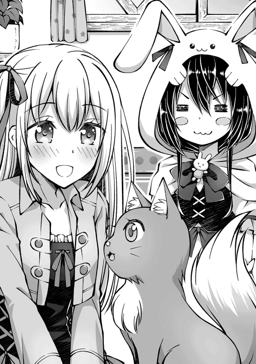
チラチラと流し目を送ったり、ネコミミをヒクヒクさせたりして、こっちの様子を伺ってるのが凄くかわいい！ そして、にゃんこにデレてるフィアちゃんもかわいい！ ダブルかわいいで幸せＭａｘ！ エルがまたカメラを取りに走って行った！ あ、前のコスプレ写真まだもらってない！ あとでもらわなきゃ！
「とりあえず名前を決めなきゃな。君の名は......ノゾミだ！ ノゾミちゃんに決定！」
「......ノゾミちゃん......かわいい名前です」
「にゃぁむ」
ノゾミ 野良猫
ＬＶ １
体力 ７
筋力 14
敏捷 14
器用 14
魔力 ４
精神 ５
スキル
爪術 隠蔽 気配 察知 夜目 登攀
完全な思いつきで付けた名前だったが、気に入ってくれたみたいでなによりだな。
「さて、名前も決まった所で〜、だっこさせて〜！」
「......んにゃ」
「あぅ」
プリチーなもふもふに我慢が出来なくなったので、さっそくノゾミを抱きしめようとしたら......スルリと逃げられてしまった。しかもふさふさしっぽでペチンとおでこを叩かれるオマケ付きで。
うぅ......嫌われた？ まだ何もしてないのにぃ〜。
「......にゃぁ」
「ん？」
抱きつきに失敗してしょんぼりしていた俺の腕へと、ノゾミが近づいてきてスリスリとほっぺたを擦りつけてくるんだけど！ なにこの可愛い生き物！ ぜひとも抱っこからのもふもふを......！
「......んにゃ」
「あぅ」
う〜。またペチンとやられてしまった......。
なんだろう？ 自分から触るのはいいけど、触られるのはイヤなのかな？
それとも抱っこがイヤなのかな？ 子供扱いしないでよね！ 私は立派なレディーなんだから！ みたいな？
ん〜。乙女心は分からん！ ノゾミがメスなのかも分かんないけども。
「......にゃぁ」
手が届きそうで届かない微妙な位置に座って、俺を眺めていたノゾミが、またテクテクと近づくと俺に顔をスリスリしてきた。
むぅ。抱っこがダメならほっぺをうりうりしてやろう。ネコはほっぺとか、耳の付け根とか触られると喜ぶって聞いたことあるし。うりうり。
「......にゃぁ〜」
うりうりうり。
「......にゃぁ〜ん。ゴロゴロ」
うりうりうりうり。
「......ゴロゴロゴロ」
どうしよう止め時が分らない。だってノゾミのほっぺた、もふもふでムニムニなんだもん！ やめられない、とまらない！ やめるつもりもない！
「......むぅ。ユウさんばっかりずるいです。フィアにもノゾミちゃんと遊ばせてください」
「にゃぁ」
「え？ あれ？ ノゾミ？ お〜い、ノゾミさんや〜い」
今さっきまで、ノゾミは俺にべったり甘えて来てたのに、フィアちゃんが近づいてきたらそちらへとすり寄って行ってしまった。
あ、あれ〜？ 俺へのサービスタイムは終了なの？ もふられるのならばかわいい女の子がいいって？ 気持ちはよく分かるけども、寂しいよぉ......。
「......それにしても......」
ノゾミに捨てられて、しくしくと泣き真似をしていた俺を完全無視してノゾミと遊んでいたフィアちゃんが、不意にそう呟くと俺の事をジッと見つめだした。どうしたんだろう？ 俺の顔に何か付いてる？
「......また、新しい子を増やしたんですね。ユウさんは本当に節操 なしです」
「ちょ、その物言いは流石に看過できないよ！ 俺はちゃんとかわいいと思った子しか加えてないよ!! 」
まったくもう。失礼しちゃうよ。
「......その返しは予想外でした。育成などが大変ではないかと心配しただけだったのですが......もしあなたがサモナーじゃなかったら今のセリフは完全に軟派 男です」
「その場合はフィアちゃんのセリフは完全に正妻だけどね！」
それも幼馴染ポジのおせっかいな女の子だな。軟派男の方も実は幼馴染の女の子に構って欲しくて他の女の子にちょっかいかけてて、それを見ていた幼馴染の女の子は、他の女の子にはちょっかいをかけるのに自分には手を出さないから自分は好みじゃないんだろうと勘違いしててこじれるパターンのやつや！
「......フィアはあなたの幼馴染じゃないので違います」
「口に出してないのに、よく俺が考えている事がわかったね。愛だね！」
「......違います！」
力強い否定のお言葉をもらってしまった。ざんねん。
あ、ノゾミちゃ〜ん。この水晶のペンダントだけ装備させるから、ちょっとこっちおいでね〜。はい装備出来た。うん。かわいいかわいい。
「さぁてと。今日アトリエに来た目的は全部終わったかな？ お土産も渡したし、ノゾミも召喚したし、ＭＰ回復薬についても聞いたし......あ、毒消し丸ってまだある？ あるならいくつか買いたいんだけど」
「......少しならありますが......この前渡した分は使い切ってしまったのですか」
「手持ちは全部妹の口に中に突っ込んじゃったから。瓶ごと」
「......なんてむごい事を......」
フィアちゃんが目を見開いて、鬼畜外道を見る様な目で俺を見てくる。
えっと......そんなに酷かったかな？ しゃーなし。次に会った時には少し優しくしてやるか......。
◆◆◆
「毒消し丸を買えたのは良かったけど、写真がなかったのが残念だったなぁ......」
ティーニャのコスプレスリーショット写真は、恥ずかしいからってフィアちゃんが隠してしまったらしい。むぅ......見たかったのにな。残念だ。しょうがないからまた今度一緒にコスプレしなきゃな！
「にゃぁ？」
「ううん。なんでもないよ〜」
直前まで悔しがってたのに、唐突にガッツポーズを取って気合を入れ直した俺を、写真の存在を知らないノゾミが不思議そうな表情で見つめてきた。
あぁもぅ〜！ ノゾミはかわいいなぁ〜！ もふもふさせて！
「んにゃ」
「あぅっ」
モデル歩きで優雅に歩いているノゾミへと手を伸ばしたら、猫パンチでペシっと叩き落とされてしまった。
もふもふ出来なかったのは残念だけど、ちょこっと肉球に触れた！ 小さなハッピー！
「さて、これから森に入る訳だけど、その前に一回みんなのステータス確認しとくか」
「きゅい！」
見て見て！ 褒めて！ とボーパルが抱きついてきたので、ぎゅっと抱き返してあげる。
ボーパルはすっごい頑張ってるもんな〜。もちろん分かってるからいっぱい褒めちゃうぞ！ よしよし！
ユウ ハイサモナー
ＬＶ20 → 21
体力 15
筋力 13
敏捷 17 → 20
器用 14
魔力 25
精神 25
スキル
杖ＬＶ11 → 13 蹴りＬＶ19 → 20 召喚魔法ＬＶ18 → 24 火魔法ＬＶ12 水魔法ＬＶ15 → 18 回復魔法ＬＶ１（ＮＥＷ） 鑑定ＬＶ11 → 18 ダッシュＬＶ13 → 15 回避ＬＶ９ → 11 防御ＬＶ５ 耐寒ＬＶ７ 耐暑ＬＶ１ 夜目ＬＶ１ → ５（ＮＥＷ）
ＳＰ13
ボーパル いやしウサギ
ＬＶ20 → 21
体力 10
筋力 28 → 29
敏捷 28 → 29
器用 14
魔力 ９ → 10
精神 10
スキル
索敵 槌術 （ＮＥＷ） 気配察知 → 空間察知（ＮＥＷ） 跳躍 ダッシュ 蹴り 溜め蹴り 繊月斬（ＮＥＷ） 立体機動 空歩 回避 回復魔法
ミズキ プリンセスオウル
ＬＶ20
体力 14
筋力 13
敏捷 22
器用 10
魔力 26
精神 11
スキル
飛行 奇襲 索敵 夜目 高速飛行 風魔法 氷魔法 高速詠唱 回避 マジカルチェンジ
アイギス エスケープシープ
ＬＶ18 → 19
体力 29 → 31
筋力 15
敏捷 15
器用 13
魔力 ４
精神 10
スキル
防御（ＮＥＷ） 挑発（ＮＥＷ） 危機察知 悪路走破 怠け ダッシュ 物理耐性 毒耐性
ティーニャ ハイフェアリー
ＬＶ16 → 18
体力 12
筋力 １
敏捷 14 → 15
器用 11
魔力 22 → 25
精神 20
スキル
浮遊 風魔法 土魔法 水魔法 風魔法耐性 隠蔽
ノゾミ 野良猫
ＬＶ １
体力 ７
筋力 14
敏捷 14
器用 14
魔力 ４
精神 ５
スキル
爪術 隠蔽 気配 察知 夜目 登攀
大きく変わったのは俺とボーパルだな。俺は新しく回復魔法と夜目を覚えて。ボーパルが槌術と空間察知と繊月斬を覚えた、っと。あとはアイギスの防御と挑発だな。アイギスは盾役として順調に成長してるみたいで何よりだな。
で、気になるのはボーパルだよな。......うん。俺はいいよ？ ＳＰ使えばいつでもスキル覚えられるし。でも、ボーパルさんまでスキル覚えすぎじゃないですかねぇ？
まぁ、繊月斬はアイテム使って覚えたやつだし、空間察知は洞窟でトラップや敵を一生懸命探してたから進化したんだろう。槌術は完全にアレだな。ウサミミハンマーだな。ボーパルは徒手空拳のスピードファイターだから、今後ハンマーを使う機会はほとんどないと思うけど、持ってて損があるわけじゃないしいっか。
「にしても、ボーパル達って意外と簡単にスキルを覚えるんだなぁ。ミズキ達も普段と違う事をしたら新スキルを覚えるかもよ？」
「ホー？」
ミズキとか、マジカルチェンジを何回か使ってたら格闘スキル覚えそうだよな。エアリアルコンボ的なやつ。
「森の入口に到着っと。こっからは戦闘もするからな。ノゾミは俺の傍を離れないようにね？」
「......にゃぁん」
戦闘準備に入るため、抱っこしてもふもふしていたボーパルを降ろして、ノゾミにおいでおいでしたところ、するすると俺の体を登って、肩に乗られた。なにそれかわいい！ なんで急にベタ甘モードに!? はっ！ 嫉妬 か!? さては嫉妬なのか!? 俺にもふもふされてるボーパルを羨んで!? んふふ〜ノゾミはかわいいなぁ〜。
「んにゃ」
「あぅ」
ノゾミの急接近にテンションアゲアゲになっていると、調子に乗らない！ と言わんばかりに、俺の頬を肉球でぎゅぅ〜っとされてしまった。
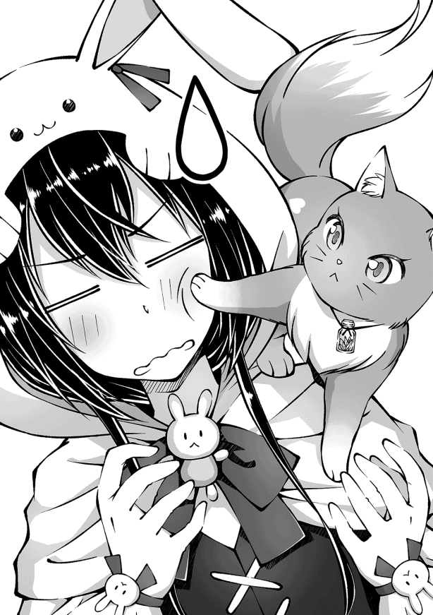
あの、痛いですノゾミ様。いや、痛覚はカットされてるし、肉球にプニプニ感しか感じなくって幸せなんだけどもさぁ。
「にゃぁ〜」
「はいはい。発進しますよ〜。落ちないように注意してくださいね〜」
やっと頬ぎゅ〜を止めてくれたと思ったら、今度は早く進めとばかりに肩をポンポンされたので、お望み通りに、前進を開始する。
なんかもうどっちがご主人様なのか分かんなくなってきたけども、ノゾミがかわいいからいいや。今日から俺ノゾミ様専用タクシーになります！ なんてね。
◆◆◆
《召喚モンスター：ノゾミがレベルアップしました。任意のステータスを上昇してください》
《召喚モンスター：ティーニャがレベルアップしました。任意のステータスを上昇してください》
「〜〜！」
「んにゃあ!? ティーニャ？」
サーチ＆デストロイの精神で、現れたフクロウをボコボコにしながら進んでいたんだが、第二層へと向かう途中で、唐突にティーニャが顔に大の字で張り付いてきて、視界がティーニャ一色になった。何事!?
「〜〜！ 〜！」
「ん〜と、付いていけばいいのか？」
「〜〜！」
わちゃわちゃとボディーランゲージしているのを、なんとか読み取った結果。一緒に付いてきて欲しいみたいだな。
こっちこっち！ と手を振りながら、木々の間を縫う様に最短距離で飛ぶティーニャを、アイギスと二人で頑張って追いかける。ミズキは普通に飛べるし、ノゾミは俺の肩であくびしてるし、ボーパルは木から木へと飛び移って高速で駆け抜けているし......忍者か！ ＮＩＮＪＡならぬＵＳＡＧＩだったのか！ ってあれ？ なんかデジャブ......。
「〜〜！」
「おお。やっぱりここか〜」
たどり着いたのは見覚えのある大きな洞 のある木。森の中は目印とか無いと思うんだが、ティーニャは帰巣本能的な能力で場所が分かるのかな？ それなら迷子にならなそうだな！ ......いや、興味が湧いたら一直線な性格をしてるから迷子にはなりそう。んで、俺達が必死に探すんだけど、一人家に帰ってのんびりしてるの。ありそう。
「〜〜！ 〜〜〜！」
「メエェ。メェエエエ」
先に洞に入った俺達の方へと、ティーニャが遅れているアイギスの瞼 を引っ張って連れて来ている。アイギスに早く歩いて欲しいのは分かるけど、瞼引っ張るのは止めてあげて！ せめて角にしてあげて！
そのまま二人が洞の中に入った瞬間、視界が真っ白になり、ロード時間が終わると、再び俺達はフェアリーガーデンにやって来ていた。柔らかな日差しに色とりどりな花畑。宙を楽しそうに舞うチョウチョとフェアリーが、見ている俺の頬を緩ませる。ちょっと身構えたんだが、今度は無粋なフェアリーイーターが出てくることもなく。平和でのどかな楽園が広がっているな。
懐かしいって言うほど、前回から時間が空いているわけでもないのに〝懐かしい〟って感じるのは、のどかな光景そのものが郷愁 を感じさせるものだからかねぇ？
「〜〜!! 〜♪」←ティーニャ
「〜〜？ 〜〜!! 」←ティーニャに気付いたフェアリー
「「「〜〜〜!! 」」」←ティーニャに気付いた沢山のフェアリー
俺がほのぼのしている間に、ティーニャがフェアリーガーデンの花畑の中へと突っ込んでいき、多くのフェアリー達に取り囲まれて揉みくちゃにされている。
ティーニャからすれば里帰りなんだし、しばらく自由にさせておいてあげようかな。
「メェエエ。もくもく」
「きゅい？ もきゅいもきゅい」
アイギスがその辺に生えていた花を食べ始めて、それを見たボーパルも一輪口に入れるとおいしかったのかどんどん頬張りだした。茎の部分を齧 って、モクモクと飲み込んでいくものだから、ボーパルのお口から花が生えてるみたいに見える！ かわいい！
「ホー？」
「にゃぁぁん」
食欲全開な草食獣コンビとは対称的に、ミズキとノゾミの肉食獣コンビはちょっと離れたところでお花遊びをしてるな。摘んだ花で器用に花冠を......え？ ちょっと待って？ 翼と猫足でどうやって花冠を編んでるの!? 編むところ見たい！ もう一個編んで!!
「きゅい......」
「わぁ〜。綺麗な花束だねぇ。もしかして、俺にくれるの？」
「きゅい！」
次は見逃すまいと、穴が開くほどミズキとノゾミのお花遊びを見学していたら、何かを察したらしいボーパルサイズに、ちっちゃい花束を「きゅい」っと渡されてしまった......うぅ。ボーパルは本当にええ子やでぇ。お母さん嬉しくて涙が出ちゃいそう。ボーパル的には食用と観賞用のどっちのつもりで花束を渡したのかは分かんないけども。
「よ〜し。ならお返しに俺も花束作っちゃうぞ！ どうせならでっかいの作りたいよね！ ボーパルもお手伝いしてくれる？」
「きゅい！」
嬉しそうにばんざいをするボーパルを見ては、妥協など許されませんとも。えぇ。
このあとめちゃくちゃ花束作った。
◆◆◆
「メェェ......」
「すぅ〜。きゅぅ〜」
「「「〜〜〜......」」」
「ふむ。客人とはやはりおぬしらじゃったか」
「んん？ おぉ、精霊ちゃん。久しぶり〜」
ボーパルと二人で綺麗なお花をかき集めて花束を作っていたんだが、睡眠欲が食欲に勝ったのかアイギスがお花畑の真ん中ですやすやと寝始め、あんまりにも気持ち良さそうに寝てるもんだから、吸い寄せられる様に俺とボーパルもアイギスを枕にして寝始め......気づいた時にはフェアリー塗れになってた。
みんなでお昼寝するのは一向に構わないんだけど、俺の体の上にもフェアリー達が乗ってるせいで、寝返りもうてないんだよなぁ......。
「む？ わらわの助けが必要なのじゃ？」
「んにゃ、これはこれで幸せだからいいんだよ〜」
精霊ちゃんが、俺の上で眠りこけているフェアリー達を退かそうかとしてくれたんだけど、ちみっこいフェアリーが沢山乗っかってるのって素敵やん？ 視線を下にずらすと、俺の胸の上でかわいい顔で寝てるフェアリー達が見えるんだよ？ 不動と不眠の覚悟を決めるにはそれだけで十分だね。
「して、今日は何用で訪ねてきたのじゃ？ もしや、わらわ達と遊びに来てくれたのじゃ？」
「んん？ ティーニャの里帰りに付き合ってるだけだから特に用事はないんだけど......遊ぶ？」
「遊ぶのじゃ〜！」
「「「〜〜〜!! 」」」
次来た時は遊ぼうねって約束もしてたし、ちょっとぐらい一緒に遊ぼうかなって思ったんだが、予想以上に喜ばれて体の上のフェアリー達もみんな起きちゃった......。
うん。まぁいいんだけどね。フェアリー達と輪になってルンルン踊ってる精霊ちゃんを見たら文句なんて言えないよ。むしろ混ざりたい。一緒に踊りたい。
「なにして遊ぶ？ ダンス？ 鬼ごっこ？ かくれんぼ？ ルール知らないけど妖精相撲でもいいよ？」
「戦闘ごっこでもいいのじゃ！」
「「「〜〜〜！」」」
「いや、それだけは勘弁して......」
「きゅい！」
戦闘と聞いてボーパルが跳ね起きてきたけど、戦わないからね？ 世紀末な光景が展開されない平和な遊びをしよう？ ね？ えっと、なにか戦闘ごっこ以外で精霊ちゃん達の興味を引けそうなのは......そうだ！
「そう言えばこれももらってたんだったな」
「なんなのじゃ？ 筒 ？ なのじゃ？」
「「「〜〜〜？」」」
「きゅい！」
「〜〜〜！」
よっこいしょ！ っと、声を出しながらソレを取り出すと、ソレを知らない精霊ちゃんとフェアリー達は揃って首を傾げ。ソレを知っているボーパルとティーニャが嬉しそうに飛び跳ねた。
ちょっと待ってな〜。これ無駄に重い所為で取り回しがし辛くてさぁ。
「行くぞ〜！ ファイヤー！」
「ふぉぉ！ なんかいっぱい出たのじゃ!! 」
「きゅい〜！」
「〜〜〜♪」
俺が構えたガトリング砲が高速で回転を始め、小さなシャボン玉を大量に射出する。
精霊ちゃん達は初めて見たシャボン玉にビックリしていたが、自らシャボン玉の波に突っ込み、小さな身体でパチンパチンとシャボン玉を割って遊んでるボーパルとティーニャの姿を見るや、一斉にガトリング砲へと群がってきた。
って、危ないから！ 接近禁止！ 高速回転してる砲身に触れたらミンチになるよ!?
「のじゃ〜！」
「「「〜〜〜♪」」」
「誰一人聞いちゃいねぇ......こうなったら！ 必殺！ 超変形合体！」
「のじゃ!? 今度はなんなのじゃ!? 」
「「「〜〜〜!? 」」」
天へとガトリング砲を構えて変形のキーワードを叫ぶと、キラッキラと期待に目を輝かせたいくつもの視線が俺へと集中した。
やべぇ。超楽しいし気持ちいい。なるほどなぁ。ミヤヒナが求めるロマンってこういう物なのかも。ちょっと理解できた気がする。次にロマンアイテムを自慢される機会があったら大袈裟に驚いてあげようっと。
「ぉ、おぉ！ おぉぉぉぉ！ すごいのじゃ！ すごいのじゃぁ！」
「「「〜〜！ 〜〜〜!! 」」」
精霊ちゃん達の目の前で天へと掲げられたガトリング砲が『ガシャコンガシャコン！ プシュー!! 』っと、無駄に機械音や煙を出しながら変形していき、子供一人ぐらいは飲み込めそうな輪っかになった。
精霊ちゃんとフェアリー達はぴょんぴょん飛び跳ねながら「すごいのじゃ！」「〜〜！」を連呼してるな。興奮しすぎて語彙 が飛んでいったみたい。
確かにフェアリーガーデンって機械とか無さそうだもんなぁ。科学に初めて触れたのならこの興奮のしようも納得だな。いや、このガトンリング砲も十分ファンタジーだけども。
「驚くのはまだ早いぞ？ そぉれっ！」
「「「〜〜!? 〜〜！」」」
「すごいのじゃ！ でっかいのじゃ！ 入ってるのじゃ！ すごいのじゃ！」
「「「〜〜〜！」」」
三人ぐらいで固まっていたフェアリーが、輪っかの内側を潜るようにポイを振るえば、フェアリー入り巨大シャボン玉の完成だ。
全方位シャボン玉なのが面白いのか、キャッキャとはしゃぐフェアリー達。酸欠になる前に割らなきゃな〜と思ってたんだが、直後に大量のフェアリーがシャボン玉に殺到して、あっさりと弾けて消えた。
多少割れにくいとはいえ、所詮はシャボン玉だからな。そりゃ押し合いすれば割れるよ......。
「もう一回！ もう一回なのじゃ！ 次はわらわも中に入るのじゃー!! 」
「「「〜〜〜〜!! 」」
「きゅい！」
「〜〜！」
「......んにゃ」
いいぞ〜。みんな順番に〜って、近いわ!! 引っ付くな揺さぶるなスカート引っ張るな！ シャボン玉作れないでしょ！ うわっ！ 顔にもふもふが！ このもふもふはボーパル!? ボーパルもシャボン玉に入りたいの!? でも、宙に浮けないと流石に無理なんじゃ......あ、精霊ちゃんが抱えてくれる？ ありがと、ひゃんっ！ なに!? 服の中にもふもふがっ！ このサラサラの毛並みは......ノゾミ!? ノゾミなのか!? なんでこのタイミングでデレるの!? 今すっごく忙しいんだけど！
「あ〜もうっ！ 全員一旦離れろやぁ!! 」
「わ〜！ なのじゃ〜♪」
「きゅい〜！」
「「「〜〜〜♪」」」
「んにゃぁ」
ボーパルを抱っこした精霊ちゃんをシャボン玉で包んで空流しの刑に処 し。
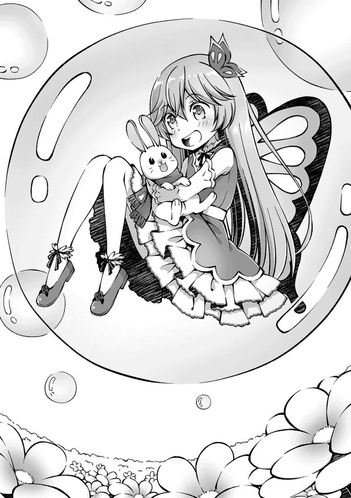
変形解除してガトリング砲に戻したシャボン玉発生器から、小さなシャボン玉を適当にばら撒く事で、じゃれている間に目的を忘れたのか、俺の服や髪のあちこちにアクセサリーの様にぶら下がって遊び始めたフェアリー達も引き剥がす事に成功した。
服の中に潜り込んでもぞもぞしていたノゾミも、フェアリー達と一緒になって猫パンチでシャボン玉を割るのに夢中みたいだしな。シャボン玉で遊びたかったなら最初からそう言ってくれればいいのに〜。素直じゃないんだから！ そんなところもかわいいんだけどねっ！
で、かわいい拘束者を全員振り払う事には成功したんだが、お洋服がヨレヨレになってしまった......。ガトリング砲を両手で握ってるもんだから直す事も出来ないし......あ、ミズキが直してくれるの？ ありがとう。でも、遠慮せずにみんなと遊んできてもいいんだよ？
......ところで、ちょっと疑問に思ったんだが、俺はいつまでガトリング砲のトリガーを引き続けていればいいんだろう？ フェアリー達を止められそうな精霊ちゃんはボーパルと一緒に空を漂ってるし、そもそも戻ってきたところで遊びに混ざるだけで止めないだろうし......あれ？ もしかして詰んだ？ フェアリー達全員が満足するまでトリガーを引き続けなくちゃダメ？ マジかぁ......。
《召喚モンスター：ユウがレベルアップしました。任意のステータスを上昇してください》
《召喚モンスター：ボーパルがレベルアップしました。任意のステータスを上昇してください》
《召喚モンスター：ミズキがレベルアップしました。任意のステータスを上昇してください》
《召喚モンスター：アイギスがレベルアップしました。任意のステータスを上昇してください》
《召喚モンスター：ティーニャがレベルアップしました。任意のステータスを上昇してください》
《召喚モンスター：ノゾミがレベルアップしました。任意のステータスを上昇してください》
《召喚モンスター：アイギスがクラスチェンジ条件を満たしました。クラスチェンジ先を選択してください》
《クラスチェンジ候補：静電羊
スリープシープ》
《召喚モンスター：ティーニャがクラスチェンジ条件を満たしました。クラスチェンジ先を選択してください》
《クラスチェンジ候補：ティターニア
シルキー》
「ブヒィィィ......」
「一丁上がりっと」
「メェ〜......」
アイギスの挑発にまんまと乗ってしまい、アイギスから視線を外せなくなったイノシシが全員からボコボコに殴られ「くっ、殺せ！」って顔をしていたので希望通り倒してあげた。これでアイギスとティーニャが仲良くクラスチェンジだ。やったぜ。
結局、精霊ちゃんとのお遊戯は晩御飯の時間まで続き、ご飯を食べて戻ってきてからも「遊ぼう遊ぼう」って誘われたんだけど、今日中の第二層突破を諦めた訳じゃないので、涙を飲んで辞退させてもらった。また今度一緒に遊ぼうね〜。
「さて、クラスチェンジ前にもう一回ステータスの確認するぞ〜」
「メェ〜......」
「〜〜〜！」
アイギス エスケープシープ
ＬＶ19 → 20
体力 31 → 33
筋力 15
敏捷 15
器用 13
魔力 ４
精神 10
スキル
防御 挑発 危機察知 悪路走破 怠け ダッシュ 物理耐性 毒耐性
ティーニャ ハイフェアリー
ＬＶ18 → 20
体力 12
筋力 １
敏捷 15
器用 11
魔力 25 → 29
精神 20
スキル
浮遊 風魔法 土魔法 水魔法 風魔法耐性 隠蔽
アイギスとティーニャは特化キャラにしたいからなぁ〜。敏捷にもそれなりに振れたし、今回は体力と魔力に全振りだぜ。クラスチェンジもこのままの路線でいきたいんだが、どんなクラスチェンジ先があるのかな？
《静電羊
もこもこの体毛に静電気を溜め込んだヒツジ
雷属性の攻撃を僅かに引き寄せる体質を持っている
直接攻撃してきた相手を麻痺させる事がある
地上で活動し、主な攻撃手段は突進等。主な補助手段は帯電体質等》
《スリープシープ
もこもこの体毛に眠気を溜め込んだヒツジ
スリープシープの羊毛で作られた寝具は、使用者を快眠に導く代わりに、起きる気力を奪うとされている
直接攻撃してきた相手を眠らせる事がある
地上で活動し、主な攻撃手段は突進等。主な補助手段は誘眠体質等》
「うん。両方もこもこなのは伝わってきたな！」
「メェ？」
どっちのクラスチェンジ先も、アイギスのもこもこに何かを溜め込むらしい。アイギスのもこもこには夢と希望が詰まってるからね。今更一つ二つ増えた所で同じだよね！
で、静電気と眠気のどっちを詰め込むかが問題なんだが......。静電気の方が便利そうではあるよな？ 雷を引き寄せる効果もあるみたいだし。眠気の方はお布団の材料にピッタリらしいけど、今の所お布団を作る予定はないしなぁ......。あ、家を建てたら必要かも。だからと言ってアイギスのもこもこを刈るなんてとんでもない。どのみち一匹分じゃ布団一式は作れないだろうしね。ん〜、よし決めた！
《召喚モンスター：アイギスがにスリープシープにクラスチェンジしました》
アイギス エスケープシープ → スリープシープ
ＬＶ20
体力 33 → 38
筋力 15
敏捷 15
器用 13 → 15
魔力 ４
精神 10 → 13
スキル
防御 カバーリング（ＮＥＷ） 挑発 危機察知 悪路走破 怠け ダッシュ 誘眠体質（ＮＥＷ） 物理耐性 毒耐性
いや、静電羊でも良かったんだけどさ......俺がもふもふしてる時にもパチッてきそうじゃん！ 静電気怖い！ やっ！
で、スキルは新しく二つ覚えたな。カバーリングはＭＰを消費して、攻撃を受けそうな味方の前まで高速移動できるスキルみたい。直接攻撃されなきゃもう一つのスキルが発動できないから、これを使って殴られに行けって事だな。
ただ、ＭＰを消費してかぁ......アイギス魔力四しかないんだけど。ＭＰの量は魔力のステータスで決まるから、一回発動できるかも怪しいよ？ もうちょっと魔力にもステータス振った方がいいかな？
誘眠体質の方は説明にあった通りだな。直接攻撃してきた相手をごく稀 に眠らせるらしい。......ごく稀ってどれぐらいの確率なんだろ？ 試してみないと分からないな。
「メェェ〜」
「で、寝るのな。快適に眠れそうな帽子被ってるもんね〜」
クラスチェンジしても、アイギス本体の見た目はほとんど変わっていない。ただ、アイギスの短い角の間に挟まるようにナイトキャップが出現してる。天辺にポンポンが付いた三角帽子だな。色違いのサンタ帽みたいな感じ。かわいい。
「......ふむ。これはもこもこの寝心地も確認しておく必要があるな」
「メェェ〜」
クラスチェンジの確認は大事だもんね！ お布団に加工しなくても寝心地が良くなっているのかきっちり検証せねば......あぁ〜いいわ〜、頭を包み込んでくれるこの感じ。低反発で素晴らしい。頭がもこもこするぅ〜。ふわぁ......。
「〜〜〜！」
「んぁ!? あぁ、すまんすまん。つい寝ちゃってた」
「メェ〜」
地面に横になってるアイギスのお腹を枕にさせてもらったら、あっという間に夢の世界に旅立ちかけ......、クラスチェンジの順番待ち中のティーニャにペチペチ叩き起こされちゃった。
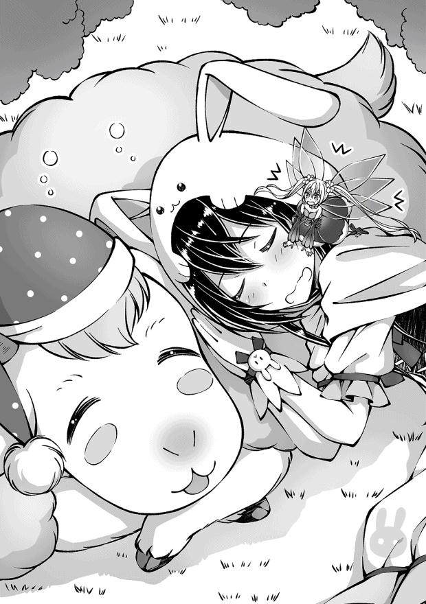
いやぁ。アイギスのお腹ヤバイね。凄いリラックス効果だ。これは起きる気力が奪われるのも分かるわぁ〜。
「〜〜〜！」
「はいはい。ティーニャのクラスチェンジね〜。どんなのがあるかな〜？」
「〜〜？」
《ティターニア
下位魔法を極め、中級魔法も扱うフェアリーの女王。
四対の翅 から零れる鱗粉は、万病を治す薬の材料になるという。
魔法攻撃力及び詠唱速度が上昇し、四属性魔法を全て扱えるようになり、中級魔法を一つ扱えるようになる。
主に空中で活動し、主な攻撃手段は属性魔法等》
《シルキー
白い貴婦人という呼び名でも知られる美しい妖精。
目も眩 む様な純白のドレスを纏っており、動くたびにさわさわと絹の擦れる音がする。
魔法攻撃力及び詠唱速度が上昇し、四属性魔法を全て扱えるようになり、仲間の行動を補助する魔法を扱えるようになる。
主に空中で活動し、主な攻撃手段は属性魔法等。主な補助手段は補助魔法等》
む、ティーニャの名前と能力的にはティターニア一択なんだろうけども、シルキーも見てみたいな。
だって、わざわざ説明文に美しい妖精って書いてあるんだよ!? 目も眩む様な純白のドレスなんだよ!? シンプルなデザインのサマードレスっぽいのだとなおよし！
真っ白なサマードレスを着て〜。水色のリボンが付いたむぎわら帽子を被って〜。浜辺で波を蹴ってるの！ かわいい！
......まぁ。ティーニャは波を蹴るどころか、ちょっとした波にも攫われてしまうから無理だけどさ。
《召喚モンスター：ティーニャがにティターニアにクラスチェンジしました》
ティーニャ ハイフェアリー → ティターニア
ＬＶ20
体力 12
筋力 １
敏捷 15
器用 11 → 13
魔力 29 → 34
精神 20 → 23
スキル
浮遊 火魔法（ＮＥＷ） 風魔法 土魔法 水魔法 光魔法（ＮＥＷ） 風魔法耐性 → 属性魔法耐性（ＮＥＷ） 高速詠唱（ＮＥＷ） 隠蔽
「〜〜!! 〜♪」
悩んだけど、無難にティターニアにクラスチェンジ。服を着替えるだけならクラスチェンジじゃなくてもいいしな。それにティーニャは美人系よりもかわいい系だもん。このままちっちゃかわいいを極めていこうね〜。
で、クラスチェンジしてスキルが色々と増えたり変わったりしたな。増えたのが火魔法と光魔法と高速詠唱。火魔法は俺が持ってるし、高速詠唱はミズキも持ってるけど、光魔法ってなんだろう？ ミズキと同じ中級魔法っぽいけど......なんか勇者とかが覚えてそうな魔法だな。ちびっこ勇者ティーニャ爆誕？ かわいい！ でも弱そう！
んで、風魔法耐性が属性魔法耐性に変わったな。風以外の属性も、魔法ならダメージが軽減されるのかな？ ティーニャは紙防御だから嬉しいな。
......全魔法耐性じゃなくて属性魔法耐性なんだよな。つまり属性がない魔法もあると？
う〜ん。回復魔法とかの事かな？ ......回復魔法耐性とか嫌だな。そんな要らないのは覚えなくてもいいからね？
「〜〜！」
クラスチェンジした喜びを表現するようにくるくると宙を舞い踊るティーニャは、予想通り新しく一対の翅が増えて、全部で八枚の翅が生えているやたらと豪華な見た目になったな。
それと、今回のクラスチェンジではティーニャのドレスも進化してるな。一色の花びらで構成されてた前のドレスと違い、今度のドレスはカラフルになって飾りも増えてる。さっすがフェアリーの女王様だ。
......ティーニャって女王様なんだよな？ で、ミズキはプリンセスオウルだからお姫様......逆じゃね？ 明らかにティーニャの方がお転婆お姫様って感じだよな。まぁ、フェアリーの女王とフクロウのお姫様だから比べるのがおかしいか。
「よーし、クラスチェンジもして準備万端！ ボスエリアに突撃するぞー！ おー！」
「きゅい！」
「ホー！」
「メェ〜......」
「〜〜〜！」
「......んにゃ」
なんかヒツジさんとネコさんからやる気が感じられないけど気にしなーい！
新天地を求めて、いざ行かんボス戦へ!!
◆◆◆
《召喚モンスター：ユウがレベルアップしました。任意のステータスを上昇してください》
《召喚モンスター：ボーパルがレベルアップしました。任意のステータスを上昇してください》
《召喚モンスター：ミズキがレベルアップしました。任意のステータスを上昇してください》
《召喚モンスター：アイギスがレベルアップしました。任意のステータスを上昇してください》
《召喚モンスター：ティーニャがレベルアップしました。任意のステータスを上昇してください》
《召喚モンスター：ノゾミがレベルアップしました。任意のステータスを上昇してください》
《召喚モンスター：ノゾミがクラスチェンジ条件を満たしました。クラスチェンジ先を選択してください》
《クラスチェンジ候補：モリネコ
ミソラキャット》
「そして、ノゾミのクラスチェンジの方が早いっていうね......」
「にゃぁ〜」
いざ行かんボス戦へ!! と気合を入れたはいいものの、ボスエリア何処か分かんなくね？ と気づいたのが一時間程前。
適当に敵が強い方へと進んでは、エリアの境界に通行止めされる事の繰り返し。ダンジョン左手の法則で、境界に手をつきながら歩いたらボスに着くんじゃね？ とか、色々考えながら森を彷徨ってる間にみんなのレベルが上がって、ノゾミのクラスチェンジだ。
まぁ、ノゾミはまだレベルが一桁だったからね。上がるのは早いわな。戦闘中はほとんど俺の肩の上であくびしてただけだったけどな！ かわいいから許すけども！
「んにゃ」
「はいはい。クラスチェンジする前に今のステータスを確認するから待っててな〜」
早くしなさい。と、ばかりにペチペチするノゾミを宥めつつ、ノゾミの今のステータスを開く。まだまだレベルが低いから、他の子に比べて伸びは少ないんだよな〜。
ノゾミ 野良猫
ＬＶ １ → 10
体力 ７ → 10
筋力 14 → 15
敏捷 14 → 17
器用 14 → 15
魔力 ４ → ５
精神 ５
スキル
爪術 隠蔽 気配察知 夜目 登攀
なんとなく五の倍数とかで合わせたくなるよね〜。ノゾミはまだ育成方向が決まってないからなぁ......。今後の成長方針を決めるためにも、クラスチェンジ候補カモン！
《モリネコ
森林の環境に適応した猫。
体の色が森色になり、高い隠密 性を得る。
地上で活動し、主な攻撃手段は引っ掻き、噛み付き等》
《ミソラキャット
美しい声で歌うように鳴く猫。
その歌を聞いた者にさまざまな恩恵を与えることが出来る。
地上で活動し、主な攻撃手段は引っ掻き、噛み付き等。主な補助手段は歌等》
ノゾミ 野良猫 → ミソラキャット
ＬＶ 10
体力 10
筋力 15
敏捷 17
器用 15 → 18
魔力 ５
精神 ５ → ７
スキル
爪術 隠蔽 気配察知 夜目 登攀 歌（ＮＥＷ）
悩む間もなくミソラキャットに決定。いや、森色のネコとか嫌じゃね？ 緑色ならまだしも、森色って何色だよ。なんか嫌だよ。未知って怖い。
「......にゃぁん？」
「見た目はクラスチェンジ前と変わらないみたいだけど、声は美しくなった......のか？」
「にゃっ」
「アタッ！ って、いやいや違うよ？ ノゾミの声がもともと綺麗だったから分かりにくいだけだって。別にノゾミの声が美しくないって言ってるわけじゃないからね？」
「......にゃぁ」
連続猫パンチで俺の足をペチペチしていたノゾミに、しょうがないわねぇ。って感じでお許しをもらえた。よかったよかった。
......どうして俺は彼女に対する言い訳の様なことをノゾミに言っているのだろう......まぁいいか。ノゾミかわいいし。かわいければ何でも許されるよね！
「で、ノゾミの歌ってのはどんなスキルなのかな？ 子守歌的な？ 眠り効果二人目？」
「にゃぁん。にゃぁ〜♪」
そんなわけないでしょ。と言わんばかりのジト目で俺を睨んだノゾミが、スルスルと近くにあった切り株に登ると、チョコンとお座りして、にゃぁにゃぁ歌いだした。
右へ左へと体を揺らしてリズムを取りながら、楽しそうに歌うノゾミ。空気を読んで差し込んで来た木漏れ日が、ノゾミが座る切り株をスポットライトの様に照らし出し、さながらステージに登るアイドルの様だな。ちょ〜ラブリー。
「きゅぃ〜♪」
「〜〜♪」
「ホ〜......」
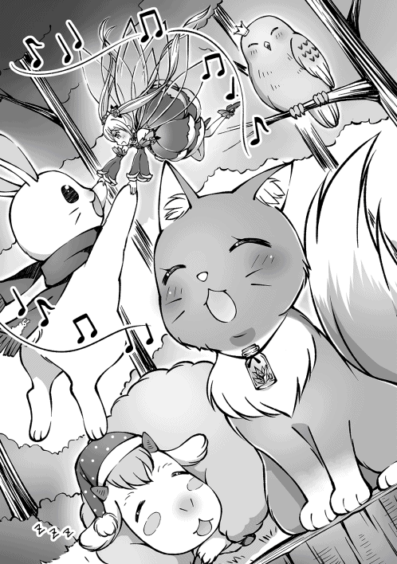
ノゾミの歌声を聴いていると、体が内側からポカポカしてくる気がして気持ちがいいな。なによりかわいい。何をおいてもかわいい！ 一人コンサートをしているアイドルキャットノゾミ様も勿論素敵だが、ノゾミの歌に合わせて、手を取り合ってクルクル踊るボーパルとティーニャもかわいい！ 超かわいい！ セットでお得！
ミズキは近くの枝に止まってうっとりと目を細めてるし、アイギスは既に夢の世界だ。なるほど。この癒し空間生成能力がノゾミの歌の効果か......なんて素敵な能力なんだ！
「にゃぁむ......」
「え？ 違う？ ステータス？ お、ＭＰ自動回復が付いてる。すげぇ。でもそんな事よりノゾミかわいい！ すごいかわいい！」
「にゃぁ......」
この人ダメだわ......。みたいな、やれやれ顔されちった。そんなノゾミもかわいい！ 大好き！ もふもふさせて！
「んにゃ」
「あぅ」
また猫パンチでペチンってされちゃった。でもノゾミはこれぐらいのツンツンがいいよね！ ギザかわゆす！
◆◆◆
「どう見てもここが怪しいな」
「きゅい！」
「ホー！」
ノゾミがクラスチェンジしてからもしばらくウロウロと彷徨っていたんだが、ようやくそれっぽい所にたどり着けたな。いやぁ長かった。町でもうちょっと情報収集とかした方が良かったのかも。いや、まだここがボスエリアだと決まったわけじゃないけどさ。
「メェエ」
「〜〜！」
「......にゃぁ」
興味なさげに、あるいは興味深そうにみんなが見上げているのは、深い森の中でそこだけ綺麗に切り取った様に木が生えていない丸い土地に建つ、木造の神社と美しい朱色の鳥居だ。
こんな森の奥にポツンと建ってるにもかかわらず、神社には寂れている様子は全くない。人の手が入ってると言うよりは、新築のまま時間が止まっている様にも感じるな。不思議な場所だ。あ、狛犬 じゃなくって狛狐 がいる。かわいい。
で、こんな初詣に来るのも大変だろう場所に建ってる、新築で、時が止まった、人の気配がしない神社だなんて、あからさま過ぎるほどに怪しさが増し増しマキシマムだから慎重に......と言いたい所なのに、既にティーニャが突撃して賽銭箱 に頭突っ込んでるんだよなぁ。
しかもあのジタバタ具合は抜けられなくなったとみた。まったく、何をやっているんだか。ティーニャは警戒心があるべき場所に好奇心が詰まってるんじゃないか？ あるいは冒険心とかさ。
「〜〜！ 〜！」
「ほら、落ち着け。今抜いてやるから」
仕方なく俺達も神社の敷地に入り、上下逆さまでジタバタしているティーニャの体をむんず、と掴んで引っ張る。むむ、なかなか抜けないな。本当は一回送還したら楽なんだが、ボス戦が近いのに無駄にＭＰを消費したくはないし......。ちょっと捻ってみようかな？
「!! 〜〜!! 」
「もうちょっと我慢しろよ〜。それ！」
スポーン！ と気持ちのいい音を立てて、涙目になってるティーニャの救出に成功した。
よっぽど痛かったのか涙目でポカポカ俺を叩いてくるんだが......それなら最初から賽銭箱に頭なんか突っ込むなと言いたい。バチが当たったんだよ。たぶん。
「......で、特に何も起こらないな......」
「......んにゃあ」
ん〜。この神社がボスエリアっぽいし、てっきり全員が神社の敷地に入ったらボス戦の開始かと思ったんだが......。違ったみたいだな。
となると、俺達単なる不法侵入じゃね？ しかも真っ先にしたことがお賽銭箱に頭を突っ込むとか、お賽銭泥棒と間違えられてもおかしくないじゃん！
えっと......お参りしとこうかな？ ちゃんとお賽銭も入れてさ。泥棒じゃないアピールのためにも！
「おーい。全員集まれ〜。お参りするぞ〜」
「きゅい！」
狛狐にじゃれていたボーパル達を呼び戻し、みんなでお参りをする。
ティーニャを助けようと賽銭箱に触ったときに、交易ウィンドウみたいな......お賽銭ウィンドウ？ が開いたからここにお金を入れればお賽銭として振り込めそうだな。こう言う時は電子マネーオンリーだと不便だなって思うよ。小銭があれば話が早いのにね。
んで、お賽銭といえば五円だよな。六人いるから三十円でいいのかね？
でもまとめて三十円入れたらご縁がありますようにっていうダジャレ、もとい願掛けが意味を成さない気も......。決めた！ 五円を六回入れよう！ アタタタタッ！ アター！ よし、入った！
「ぱんぱん。もふもふなモンスターとかわいいお洋服にご縁がありますように、もふもふなモンスターとかわいいお洋服にご縁がありますように、もふもふなモンスターとかわいいお洋服にご縁がありますように!! 」
よーし、三回言い切った！ これで叶うはず！ ......あれ？ 神社はお願い一回だっけ？ まぁ、いっか。三回も願っとけば一回ぐらい神様に届くでしょ。三回届いて三回叶っても嬉しいしな！
「きゅぃ〜」
「ホ〜」
「メェ」
「〜〜」
「......にゃあん」
ボーパル達も俺のマネをして手をポフポフと打ち合わせて頭を下げている。手を叩けない子は、俺みたいに口でパンパン言ってるみたいだな。みんなかわいいな〜。願い事叶うといいね！
カッ！
「ぬわっ!? 目がぁ！ 目がぁぁぁぁ!! 」
「〜〜〜〜!? 」
頭を下げてお参りしているボーパル達をほのぼの眺めていたら、視界の端で何か動いたような気がして......上へと顔を上げた瞬間。夜空を切り裂く眩 い閃光が俺の目を焼いた。
ぬぉ〜。視界がパチパチして前が見えない......。なんか、ティーニャの悶絶する声も聞こえるけど、真面目にお参りしてたらあの閃光は見えなかった気がするのに、なんでかな〜？
「......ふぅ。やっと前が見えるようになってきた......」
「きゅい？」
よかった。目潰しの状態異常とかじゃなかったんだな。流石に目潰し治しなんて持ってないもん。俺かボーパルの回復魔法で完治できないかな？ 戦闘後にアイギスに回復魔法かけてたから、スキルレベルが上がったしね。今なら毒は回復出来るぜ。これであの苦〜い丸薬からはおさらばだ！ 今さっき追加で買ったばっかりだけどね！ これからは対シルフ様の攻撃アイテムとしてキープしておこうな。
「きゅい!! 」
「痛！ ......くわないけども、どうした？」
思考が逸れに逸れていた俺の足を、ボーパルがダーメジを喰らわないギリギリの力で踏みしめて正気に戻した。
突然の反抗期!? と驚いてボーパルのを見つめる俺だか、ボーパルは俺とは目も合わせずに、神社を......というか神社の上へと意識を向けている。
ボーパルに釣られるように俺も視線を上げると、さっきまで確かに何も居なかったはずの神社の上に、金色の毛並みをした大きなキツネが寝そべっており、こちらを鋭い視線で見下ろしていた。
「なっ......そんな......!? 」
その姿を目にした途端、金縛りにあった様に体が硬直し身動きが取れなくなった。ゲーム内なのに鳥肌がぶわっと広がった感触と共に、俺の体が俺の意思に反してカタカタと小刻みに震えだす。
......おい。なんだあれは。あんなのがボスだなんて聞いてないぞ。だって、あいつ。あいつ......！
すっっっっごい、もっふもふなんだけど!!
なにあのしっぽ！ 見ただけでもふもふだと分かる筆しっぽが四本も生えてるんだけど！
一粒で二度おいしい的なアレか!? 一匹で四もふしっぽ!? うっきゃー♪
もふる。あいつは絶対にもふる！
この全身で！ 全霊をかけて！ 俺の身長と同じぐらいはあるあのしっぽを！ 絶対に！ もふると！ 俺は決めたんだ！ 覚悟完了!!
あぁ〜、いいなぁ。あのしっぽを抱き枕にして眠りたい！ 全力で抱きついてスリスリしながら寝るのを想像するだけで......もう、たまりませんなぁ!!
モンスター 妖狐 ＬＶ30
状態 アクティブ
「コーーーン！」
俺達の準備が整うのを、高みの見物で待っていたのであろうキツネちゃんが、遠吠えのように鳴き声を上げながら神社の屋根からヒラリと舞い降りた。
着地の衝撃を完全に殺しきったにもかかわらず、ふわりふわりと舞うキツネしっぽはまるで羽のよう♪ きっとふわふわなんだろうなぁ〜。うへへ。
キツネちゃんが降りた場所は神社横の何もない広場だ。そこでやり合おうって事なんだろうな。
うし。いいだろう。行くぞ皆！ 第一目標はキツネちゃんのしっぽに抱きつくことだ!! 俺が前に出る!!
「おとなしくもふられろーーーー!! 」
戦闘開始。と同時に突撃!! 目指すはキツネちゃんの後ろでゆらゆら、ふわふわしている四本のしっぽだ！ 今すぐ抱きしめてあげるから待っててね!!
「きゅい!? 」
俺の突然の奇声＆猛ダッシュにボーパルがビックリして声を上げているが構うものか！
少しでも速く！ 一秒でも、一瞬でも、刹那でも速く!! 最短で、最速で、まっすぐに！ あの素敵しっぽに至ってみせる!!
今の俺の辞書に不可能という文字はなぁい!!
「コン!? 」
初手から諸手を挙げて突撃したのが予想外だったのか、余裕たっぷりの表情から一転。驚いた顔でビクッ！ と体を硬直させたキツネちゃんだが、すぐに態勢を立て直し、超速度でサイドステップをして俺の突進を余裕で避ける。
さっすがキツネちゃん。だが、まだまだ終わらんよ!!
「いっけぇ！ 回避スキル《ステップ》！」
「コン!? 」
全速力で走ってきた俺を回避したと思い、キツネちゃんが僅かにでも気を緩めたその一瞬を突く様に、走る速度を一切落とさずに直角に曲がってキツネちゃんへと追いすがる。
にまぁ〜と笑って急接近する俺を見て、思わずと言った感じで爪の生えた手を振り下ろすキツネちゃん。
咄嗟に手が出たという感じの一撃だから、受けても致命傷にはならないだろう。だが、命中すれば減速は必至！ そんなのは認められない！
......やるならアレか。ぶっつけ本番だが今の俺なら出来るだろう。否。やるんだ!!
「スキルチェイン！ 《跳躍》!! 」
「コォン!? 」
キツネちゃんの振り下ろす爪を掻い潜る様に跳躍した俺は、そのままキツネちゃんの頭上を飛び越え、クルクルと回転しながらキツネちゃんの！ しっぽに！ 抱きつき！ 抱きつ......抱き......。
く、くっそぉおおおおお！
バカな!? スキル後硬直で動けない、だとぉ!?
折角......折角キツネちゃんのしっぽに抱きつく形でぶつかったのに！ 抱きしめられないだなんて！ あ、でも顔に当たる毛がもふもふだぁ......。あぁ！ こんなにもふもふなのに思いっきりもふる事も出来ないなんて！ こんなに酷い罰が今まであっただろうか!! いや、ない!! ふわぁ......鼻をくすぐるしっぽが柔らかくって温かい......こんな素晴らしいもふもふに包まれるだなんてここは天国かぁ......。なのにこの陽だまりを抱くことも出来ないなんてここは地獄か!! （この間〇．一秒）
「コーーーーン!! 」
「ん？ え、うわっちゃっちゃ！ あっちぃ!! 」
キツネちゃんのお尻にまたがる様に着地して、この世の地獄と天国を同時に味わっていた俺の体が炎に包まれた。流石の俺でも突然火 達磨 になったら、もふもふを忘れてキツネちゃんのしっぽから転がり落ちてしまった。
まぁ、火達磨とは言っても体感的にはストーブに近づきすぎた時ぐらいの熱さなんだが、燃え盛る自分の体と、ゴリゴリ減っていくＨＰを見れば慌てもする。主にウサギさんセットの耐久値的に！ 急いで地面を転がって火を消せぇ！
「ふぅ。耐久値は残ったか。よかったよかった......はっ!? キツネしっぽは無事か!? 」
あの世界の宝に俺の所為で焦げ目が付いたりしてたら......。ひぃぇ〜！
最悪の想像に顔を青くしながら振り返った先では、四つの狐火を滞空させたキツネちゃんが、全身から薄っすらと陽炎 の様な何かを立ち上らせつつ四本のしっぽを大きく開いて今にも飛び掛らんと姿勢を低くして俺を睨みつけていた。
......うん。とりあえずしっぽは無事みたいだな。相変わらず美しい黄金色に輝いてる。まぁ当然か。自分の炎で火傷をするようなヘマは普通しないよな。ＨＡＨＡＨＡ......。
「......って、めっちゃ警戒されてるぅ!! 」
「コン!! 」
キツネちゃんが俺を見る目には警戒の色がありありと浮かんでおり。他にも俺を見下す様な色も......。
有体に言えば犯罪者、もしくはゴミを見るような目だな！
......ちゃうねん。おキツネ様のステキしっぽが素敵すぎて若干、理性とかテンションとかが吹っ飛んでいただけやねん。
少しとはいえ、もふもふスリスリした上に焼き入れられたおかげで理性とテンションが戻ってきて、代わりにやる気がプシュ〜っと抜けていったので許してくれませんかね......？
「コォオオーーーーーン!! 」
はい。無理でしたぁー！ 助けてアイギスぅ!!
「メェエ!! 」
キツネちゃんが呼び出した四つの狐火が俺に命中する直前に、俺とキツネちゃんの間にカバーリングで割り込んできたアイギスが火の玉を全て受け止め......狐火が爆発してアイギスが燃え上がった。
「ちょっ、アイギスぅ!? 燃えてる燃えてる!! 」
「メェェェ!? 」
いやぁ!! アイギスのもこもこが燃え尽きちゃうぅ!! 水！ 水を早く！ 水魔法！ は、攻撃になっちゃうし詠唱中に燃えちゃう！ えっとえっと、あ！ ストレージに湧き水があった！ 湧き水バシャー！
「ふぅ。なんとか消火出来たな......アイギスは狐火に当たらないように注意しなきゃね。魔法防御は低いからなぁ......」
「メェ〜」
物理防御が上がる体力にはステータスを振ってるけど、魔法防御が上がる精神にはあんまり振ってないからなぁ......ＨＰが多いから一撃でやられる事はないけど、チリチリアフロになっちゃう！
「きゅい！」
「コン！」
俺が覚えたての回復魔法でアイギスを癒している間に、エースアタッカーであるボーパルがキツネちゃんに肉迫した。互いの体温すらも感じられる超至近距離。そこはボーパルの間合いだ。
「きゅいきゅいきゅいきゅい！」
「コーン!! 」
息もつかせぬボーパルの連撃。足先がブレて見えないほどの高速の攻撃に、しかしキツネちゃんはきっちり対応し、時には爪で受け流し、時には紙一重で避ける。ひらりふわりと舞う様は、まるでチョウチョのよう......って、んん？ な〜んか違和感があるな？ キツネちゃんがボーパルの攻撃を全てさばいている様にも見えるけど、半分くらいはボーパルの方が攻撃を外しているような......。
というか、若干攻撃する場所がズレているように見える。ボーパルが今更そんな初歩的なミスをするかね？ それも何度も。
「コン！」
「きゅい！」
半分攻撃を外しているにもかかわらず、なおも手数で圧倒してキツネちゃんを押し込むボーパルに、ついに業 を煮やしたのか力任せにボーパルを弾き飛ばしたキツネちゃんが、ボーパルから距離を取って狐火を展開した。
もっふもふの素敵しっぽの先から出現した四つの狐火が、それぞれ弧を描いてボーパルへと殺到する。左右から迫る狐火に加え、正面からはキツネちゃん本人が襲い掛かってくる鉄壁の布陣だ。逃げ場を無くしてボーパルを確実に討ち取るつもりだろう。
「きゅい!! 」
スキルチェイン後の硬直から立ち直ったボーパルはこのピンチに対して臆 する事なく、むしろチャンスだと言わんばかりに、迫りくるキツネちゃんへと突撃した。凄い胆力 だな......俺には無理だわ。うん。
「コーン！」
「きゅい！」
自分へと向かってきたボーパルへと爪を振り下ろすキツネちゃん。振るわれた凶刃がボーパルを捉える......その直前に地面が爆発するほどの踏み込みで加速したボーパルが、耳をわずかにかすめながらも爪の下を潜り抜け、キツネちゃんの脇から飛び出した後に、鋭くターンして横腹へ跳び蹴りを放った。
ボフン。
「きゅい!? 」
が、ボーパルの放った蹴りは、キツネちゃんが体に添わせるようにして移動させたしっぽに命中し、そのまま跳び蹴りの勢いでもふもふのしっぽへとボーパルの体が埋まっていく......。
って、なにその素敵すぎる防御方法!! 俺もやられたい！ 顔突っ込みたい!! 頭突きで攻撃すればいけるかな？ もふって！ もふぅって!!
「コン！」
「きゅい!? 」
キツネちゃんが一鳴きするとしっぽが燃え上がり、火達磨になったボーパルがしっぽごと地面に叩きつけられコロコロと地面を俺の傍まで転がってきた。
あ〜、なるほど。俺もあれをやられたのか。もふもふしっぽに頭突きしてたらガチでアフロになるところだったな〜。
とか言ってる場合じゃねえ！ ボーパルは無事か!? 水ぅ！ 水バシャー！
「きゅい......」
うん。ボーパルは残りＨＰ一割を切っているが、なんとか無事みたいだな。
そして減ったＨＰも、みるみると回復していく。おそらくボーパル自前の回復魔法だろう。ボーパルはＭＰが少ないんだから温存して。ここにクリーム置いておくからぬりぬりしておいてね？ 俺もちょっと行ってくるから。
「ホー！」
「〜〜！」
「コン!? 」
ボーパルが時間を稼いでくれている間にミズキとティーニャの詠唱が終わり、氷の矢と光の球体がキツネちゃんを襲った。
もふもふのしっぽを切り裂きにかかった風の刃を、危うくかわしたキツネちゃんだが、至近距離で炸裂した光球の光を直視したらしく。目を強く瞑って、首を左右に振っている。
あ〜。分かる分かる。初見だと、光球がどういう動きをするのか分からなくてじっと見つめちゃうよね。俺達もさっき試し撃ちした時に、全員で地面をのたうち回っていたし。何故か魔法を使ったティーニャ本人まで。
まぁ、慣れた後はみんなで影法師を作って遊んだりしてたけどね。照明代わりになる便利魔法もあるみたいなんだよ。カンテラ無くしちゃったから、ちょうど良かったわ〜。
「メェエ！」
「にゃぁ〜ん♪」
さらに、ＨＰを回復したアイギスが前に出て、俺の体をよじ登ったノゾミがメロディーを口ずさみだす。
いくぞキツネちゃん。ボーパルが戦線に復帰するまでの間、魔法主体の第二ラウンド開始だ！
......あ、俺が最初に飛び掛かったのはカウントしない方向でお願いします。戦闘行為じゃなくってもふもふ行為だからね。結局もふもふすら出来ずに火達磨になったのはノーカンだよノーカン。
「コン!! 」
ティーニャの魔法で目がしょぼしょぼしているキツネちゃんが、手当たり次第に火の玉をばら撒いていく。
大体は見当外れの方向に飛んでいくんだが、何発かは俺達の方へと飛んで来た。
俺やティーニャは精神が高いからダメージは小さく抑えられるかもだが......逆にＨＰが低いから小さいダメージでも死ぬかも。つまるところ当たったらマズイ！ なんとかせねば！
「ホー！」
「メェエ！」
「にゃぁ〜♪」
ミズキの放った氷の矢が狐火と当たり爆発する。ミズキが撃ち漏らした狐火にはアイギスがカバーに入り、ノゾミが被魔法ダメージ軽減の歌を歌ってサポートしてる。
うむ！ 完璧な布陣だな！ ここまでサポートされといて、目の見えない相手が適当に撃っただけの直線軌道の魔法に当たったりは......うおっ！ 危ね！ かすった！ 今かすったぞ！ キツネちゃん恐るべし！
「......にゃあ」
俺の首にマフラーの様に巻きついて乗り物代わりにしているノゾミが、歌いながら呆れた声音を出すという器用な真似をしているような気がするが、気のせいだろう。
というかさらっと楽してない？ 俺が火達磨になってる時には居なかったよね？ いつの間に乗ったの？
「......にゃ」
こら、そっぽ向かない。いや、乗るのは別にいいんだけどね。落ちないように気を付けてよ？ ノゾミは一番レベル低いんだからね。その分意識は高くしといてね！ ドヤッ！
「コーン！」
「にゃぁ......」
いや、待ってノゾミ！ そんな責めるような目で見られても俺の所為じゃないからね!?
個人的にもちょっと寒かったかな〜？ って思ったけども、視力が戻ったキツネちゃんが、あからさまに俺を睨みながら巨大な狐火を出してるのは俺の寒いギャグのせいじゃないないと信じたい！ と言うか、あんなのくらったらＨＰどころか肉体まで消し飛んじゃうよ！
......まぁ、当たらないんですけどね！
「『ウォーターウォール』!! 」
地面にダンッ！ と手を突いて、ずっと詠唱していた水魔法の新技を発動させる。
俺とキツネちゃんの間から壁のように立ち上った水の盾が、迫りくるキツネちゃんの狐火を見事に防......げずに貫通して、しゃがみ込んでいた俺の頭上を飛んでいった。
あ、あぶねぇぇぇ!! 意味もなく格好つけて地面に手を付けてなかったら頭が持ってかれてたぞ！ 格好つけるのって大事だな！
「メェエ!! 」
「コン！」
ここでやっとアイギスの挑発が決まり、キツネちゃんがターゲットを俺からアイギスに変更した。アイギスは狐火で燃やされないように接近戦をしかけてるみたいだな。いや、接近戦と言うか、殆ど一方的にアイギスが殴られているだけだけども。でもアイギスはそれでいいんだよ。眠れ眠れ〜眠り入れ〜。
「ホー！」
「〜〜！」
「コン!? 」
そしてアイギスが注意を引き付けている間に横に回り込んだ、飛行魔法攻撃部隊の二人が魔法を叩き込み、初めてキツネちゃんのＨＰがゴッソリ減った。
そしてこの攻撃でキツネちゃんのターゲットがアイギスから空を飛ぶ二人に移ってしまったな。
キツネちゃんがアイギスに比べレベルが高いからか、もしくは精神が高かったり挑発に耐性があるのか。理由は分からないが、アイギスの挑発の効きがかなり悪い。アイギス自体の火力は殆どないから攻撃で注意を引き付けるのも難しいし、挑発が効かないとなればターゲットを奪うのが大変だぞ......。ティーニャやミズキに攻撃が行くのは避けたいからターゲットは何としても奪いたいところだが......。
「コン！」
「ホー！」
「〜〜〜！」
キツネちゃんが空を飛ぶ二人を打ち落とそうと狐火を連続で放つ。
多少数が多かろうと、広い空を覆い尽くせる程ではない。ティーニャはすぐさまアイギスの影に隠れたし、ミズキだって直線軌道しかできない狐火に、当たりはしない。
「ホー!? 」
「ミズキぃ!? 」
......当たりはしない......はずなのだが、狐火の一発がミズキに命中し、体中から煙を上げたミズキが高度を落としていく。
なんでだ？ 普通に飛んでった狐火がそのまんまミズキに命中したぞ？ いつものミズキなら余裕でかわせたはずなのに、まるで狐火が見えなかったみたいにクリーンヒットした。ボーパルの時にも感じたが、このキツネちゃんやっぱり何か変だぞ？
「ホ......ホ〜......」
「コーン！」
「メェエ！」
ふらふらと落ちてきたミズキ目掛けて、キツネちゃんが疾走する。
アイギスが何とか引きとめようとするが、キツネちゃんの方が足が速くて追いつけない。
何者にも遮られることなく、落ちてきたミズキに追いついたキツネちゃんの爪がミズキを引き裂く......。
「きゅい!! 」
その直前に割り込んできたのが我らがヒーロー、ボーパルだ！
小さい体で弾丸の様に飛び出し、側面からキツネちゃんへと急接近する！
キツネちゃんもボーパルの接近には気付いているようだが、余裕の流し目と失笑を送り、しっぽを動かすだけでボーパルへの対応を終わらせた。
キツネちゃんは気付いているんだ。ボーパルの速さでは、どれだけ急いでもキツネちゃんがミズキを切り裂く方が速いと。
キツネちゃんは一足先にミズキを切り裂き、ボーパルの攻撃はさっきと同じく、素敵しっぽで、もふんと防げると確信している。
故に......ボーパル相手に油断をするという、致命的な失態を犯してしまったわけだ。
「きゅい！」
キツネちゃんへと近づいたボーパルが地を蹴ると、その場で宙返りをする。ボーパルが宙返りをした位置はキツネちゃんにはまだまだ届かない位置だ。
だが、それでいい。それだけで十分だからな。
「コン!? 」
ボーパルの宙返りの軌跡をなぞる様に三日月型に光の線が宙に生じ、ボーパルが着地すると同時に鋭く天を駆けると、キツネちゃんのふさふさのしっぽを貫通してキツネちゃんへとぶち当たって吹き飛ばした。
きゃー！ ボーパルさんかっこいい!! 忘れた頃の繊月斬素敵！
仲間のピンチに颯爽 と駆けつけて、切り札を使って脅威を跳ね除ける！ どう見てもヒーローだな！ あ、ミズキの回収と回復はこっちでやっとくんで、キツネちゃんの相手はよろしくね！ 俺が役立たずなのはさっきのウォーターウォールで証明されたんで、裏方に徹します！ 応援は任せろ！
「〜〜!! 」
ボーパルに吹き飛ばされて体勢の崩れたキツネちゃんへと、ティーニャが光球で追い討ちをかけてる。えげつない！ だがよくやった！
「コン!! 」
追い討ちまでキッチリ喰らい、全身で怒りを表しながら立ち上がったキツネちゃんは、四本あったふさふさしっぽが一本無くなり三本になっている。
もったいない！ 切れたしっぽはどこ行った!? 抱き枕にするから頂戴！ くそぉ！ 見当たらねぇ!! まぁ、そうだよな。部位欠損のパーツが落ちてるとか嫌だよな。剣で斬られた腕とか足とかが転がってるとか、いくら血が出なくても発禁待ったなしだもの。
「......にゃぁ......」
相変わらず俺の首に巻きつく形で肩に居座っているノゾミが「この人、主なのにさっきから見学と応援しかしてない......」と呟いているような気がするが、気のせいだろう。ノゾミだって歌ってるだけだしな。まぁ、それが仕事なんだが。
それに俺だってただキツネちゃんのしっぽを眺めていたわけじゃない。観察に徹する事でキツネちゃんの行動パターンは大体分かった。近接では主に爪で攻撃して、しっぽで物理攻撃を無効化する。遠距離では四つの火の玉を飛ばしてくるが、直線軌道だけなので回避は容易。
魔法防御は高いけどＨＰは低そうだな。んで、敏捷が高いみたいだけどボーパルに追いつける程ではない......と。不意打ちされたりなんだりで最初こそダメージを喰らったが、油断さえしなければ最早負ける事はないだろうな。さっきのミズキみたいに、理由が分からないのに攻撃が命中する事があるかもしれないから、注意は必要だけどね。みんながんばれ〜！ このままいけば勝てるぞー！
◆◆◆
......と、思っていた時期が俺にもありました。
「コーーーーン!! 」
アイギスが物理防御を担当して、あんまりダメージが通らない魔法部隊がチクチクと嫌がらせをして、ここぞというタイミングで肉迫したボーパルが連続攻撃を入れて離脱する。それを繰り返してるうちにキツネちゃんのＨＰが五割を切り、キツネちゃんから白金のオーラが立ち上った。
ボス特有の強化エフェクトだな。ラースベアーの時もストーンゴーレムの時も見たけど、結局何が変わったのか分かんなかった程度の物だから気にする必要はない......と......。
「「「コーン!! 」」」
「増えた!! もふもふが!! もふもふもっふにぃ!! 」
「きゅい！」
キツネちゃんが今までにないほど大きな声で吠えたと思ったら、急に辺りに怪しい霧が立ち込め始め、キツネちゃんの輪郭が徐々に曖昧になり、気づいた時にはキツネちゃんが三匹になってた。
最初は四本あった尻尾がボーパルに一本切られて三本になって、三匹に分裂して九本になった！ 九尾の狐だ！ いや、一匹から九本生えてるわけじゃないから厳密には違うけどさ。
三匹もいるんだし一匹くらいもらっていってもいいかな？ ダメか。
「「「コン!! 」」」
三匹とも分裂前と同じ三本しっぽだから、全く新しいキツネちゃんが二匹出てきた訳ではなく、一匹のキツネちゃんが三匹に分裂したので合ってると思うが......だからなんだって話だな。新手だろうが分裂だろうが、さっきまで一対六だったのが、急に三対六になるのはキツイなんてもんじゃない。なにせうちのパーティで前衛が出来るのはアイギスとボーパルだけだからな。
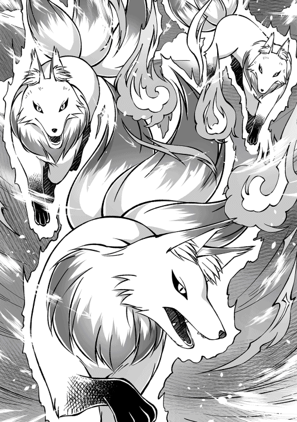
ザコ相手なら俺が前に出てもいいんだが、流石にキツネちゃん相手に俺が前に出てもあっさりやられるのがオチだ。マジカルミズキは時間制限がキツイし、どうしたものか......。
「アイギスは死ぬ気で一匹を押さえてくれ！ ボーパルは無理に攻撃しなくてもいいから、なるべくダメージを食らわないように残った二匹の注意を引き付けて！ ノゾミは狙われないように神社にでも隠れててくれ。んで、ミズキとティーニャは俺と一緒にボーパルの相手しているキツネちゃんを倒すぞ！ 一匹倒してしまえばこっちのもんだ！ 気張っていくぞ!! 」
「きゅい！」
「ホー！」
「メェエ！」
「〜〜？」
「......にゃ」
俺の指示に従い、ボーパルとアイギスが前に飛び出してノゾミが下がる。さらに俺とミズキと......何故かちょっと迷っていたようだったティーニャが魔法の詠唱に入る。
......キツネちゃんには魔法が効きにくい。この選択が最善かは今の俺には分からないが。少なくとも最悪ではないと信じて戦うしかないか。
「ホー！」
同時に詠唱を始めた俺とミズキだが、先に詠唱が終わったのはミズキだ。
ボーパルが小さな体を僅かな隙間に捻り込むようにして、ギリギリ攻撃をかわし続けているキツネちゃん二匹のうちの一匹へと背後の死角から風の刃が叩き込まれる。
「コン！」
が、キツネちゃんは背中に目でも付いているかのようにこれをあっさりと回避し、ミズキに狐火で反撃までしてきた。
明らかにさっきまでよりも動きがいい。二対一の上にボーパルから反撃が来ないから余裕があるのか......？
にしても背後からの攻撃をあっさりとかわせるもんかね？
「『ウォーターカッター』!! 」
「〜〜！」
俺の放った水の刃はさっきミズキが攻撃したキツネちゃんへと迫り、ティーニャの光球がアイギスが抑えているキツネちゃんに迫る......？
「メェ!? 」
なんでぇ!? みんなでボーパルが抑えている方のキツネちゃんを先に倒そう。って作戦だったよね!? 俺には従いたくないってこと!? 反抗期なの!? このタイミングで!?
「〜〜!! 」
「コン!! 」
という俺の心配は、キツネちゃんの目の前で光球が炸裂した瞬間に吹き飛んだ。
一度ティーニャの光球を見ているキツネちゃんは、光球が炸裂する前に動きを止めて顔を逸らしている。
それと、同時にボーパルが相手をしていた二匹の動きが止まり、俺の放った水の刃がキツネちゃんを切り裂いた。ミズキの攻撃はあっさりと避けたのに、俺の攻撃には当たったのもおかしいが、それよりもおかしな事がある。
アイギスの相手をしているキツネちゃんは問題ない。問題があるのはボーパルが相手にしている二匹のキツネちゃんだ。ティーニャが出した夜闇を切り裂く光球に照らされているというのに、この二匹のキツネちゃんには......。
「影が......無い......？」
あ〜、あるある。分身とか幻影とかで作った偽者の方には影が無くって本物だけ影があるパターンとかよくあるよね。
......ん？ じゃあ、ボーパルの相手しているキツネちゃんは幻影......？ えーと、『鑑定』！
モンスター 妖狐 ＬＶ30
状態 アクティブ 欠損 被魔法ダメージ軽減（小）
あぁ。キツネちゃんに魔法が効きにくかったのは、ノゾミの歌の効果がキツネちゃんにもかかっていたからなのね。
ん〜？ 俺のウォーターカッターが当たったキツネちゃんが、他のキツネちゃんよりもＨＰが減っている事以外は違いはないか......となると、おかしいのは俺の方か？ 俺達を鑑定！
プレイヤー ユウ ＬＶ25
状態 幻惑 被魔法ダメージ軽減（小）
召喚モンスター ティーニャ ＬＶ23
状態 被魔法ダメージ軽減（小）
お〜、見事に幻惑にかかってるわ。ティーニャ以外全滅だわ。ティーニャが無事だったのは、元々精神が高いのに加え、ティーニャが装備している指輪である『精霊の雫』の効果で精神系状態異常の耐性が上がっていたからだろう。
で、ティーニャは幻惑にかかってないから、ボーパルの相手をしているキツネちゃんを攻撃してくれって言われて戸惑っていたんだな。幻惑にかかってなかったから、ボーパルの相手をしているキツネちゃんが見えなかったんだろう。
それは......恐ろしく滑稽 だったろうな。
相手がいないのに必死に避け続けるボーパルと、何も居ないのに攻撃魔法を放つ俺とミズキ......。滑稽というか、むしろホラーだな。だってボーパルは幻影のキツネちゃん相手にダメージ食らってるし。ティーニャ視点だと突然傷が発生した感じか？ 怖っ。
「なにはともあれ、影があるキツネちゃんが他の二体も操ってるので間違いなさそうだな！ いくぞミズキ！ ティーニャ！ アイギスの前に居るキツネちゃんを攻撃だ！」
「ホー！」
「〜〜〜！」
作戦は決まった。ボーパルとアイギスには悪いけど、そのまま前衛よろしくね！ 死にそうになったらマジカルミズキに交代してもらってる間に回復するから！ 一回限定だけど！
「この霧の所為で影が出てなかったんだな......面倒な」
キツネちゃんがスーパーキツネちゃんモードになった時に発生した怪しい霧が陽の光を遮断して、キツネちゃんの影を出さない様にしていたんだな。霧自体が薄ぼんやり光っているから、視界には困らなかった所為で気づかなかったぞ。
ならば、とりあえず明かりを出すか。どれが本物のキツネちゃんなのか見た目で分かる様にしておいて損はないしな。
「明かり明かり......あ、カンテラがあったな。これでいいか」
ストーレージから取り出したカンテラに早速明かりを灯して......ん？ カンテラ？ 俺のカンテラは地底湖で失くしてたよな？ じゃあこの見た目と名前がカンテラな物体は一体......？
カチッ ヒュゥ〜〜〜〜......。
「あ、すごく嫌な予感がする」
「きゅい？」
「コン？」
カンテラのスイッチを押した途端、カンテラの内側に灯った明かりがカンテラを飛び出して空へと打ち上がっていった。打ち上げ花火の様に天へと駆ける明かりをキツネちゃん含めみんなが思わず見上げてる。
ん〜、やっぱり打ち上げ花火は下から見るより横から見る方がいいよな。首が痛くなっちゃうもん。って、そうじゃなくって!!
カッ！
「ぬわっ!? 目がぁ！ 目がぁぁぁぁ!! 」
「〜〜〜〜!? 」
「コーン!? 」
ドーム状に神社を覆う怪しい霧へと突っ込んでいった明かりが、鋭い閃光を放ち全てを白に染め上げた。
ぬぉ〜。視界がパチパチして前が見えない......。なんか、同じ事がちょっと前にもあった気がするけど！ デジャブ！
と言うかミヤヒナぁ！ このカンテラあれでしょ!? 明るさと照らす範囲のみを追求した三秒しか使えない使い捨てのカンテラモドキ！ 見た目と名前がカンテラな所為で分かり辛いわ!! せめて名前変えようよ!!
「うぅ......目がしょぼしょぼする......」
「ホー......」
今日だけで何回目潰しされた事か......。今度グラサン作ってもらおうかな？ パーティメンバー全員分。みんなでグラサンかけてクイッてやろうぜ！ 香ばしいポーズ取ってさ！ え？ ミズキは嫌？ そっか、じゃぁやめよっかなぁ......。
「......ん？ あれ？ 霧が晴れた......？」
「ホー！」
手に持っていたカンテラが砕け散った感触に遅れて、眩んでいた視界が徐々に戻って来たんだが......。
キツネちゃんが分裂してるのは変わらないが、俺達を包み込んでいた霧が跡形もなく消滅して、暖かな日光が俺達を照らしている。もちろんキツネちゃんも同じようにな。
「なんかよく分からんが、これで全ての種は割れた！ 後はキツネちゃんをボコボコにするだけだ！ 気張って行くぞ!! 」
「きゅい！」
「ホー！」
「メェエ！」
「〜〜！」
「......にゃあ」
「「「コーーーーーン!! 」」」
俺達の叫び声に対抗するように、キツネちゃんトリオも声高く吠える。
......今更だけど、キツネちゃんは俺の言葉は理解してないよね？ ボーパル達が召喚モンスターだから特別なんだよね？ 問題無いと言えば無いけど、作戦全部筒抜けとか嫌じゃね？ こっちは相手がなに言ってるかは分からないんだしさ......。
「コ......ン......」
《プレイヤーがレベルアップしました。任意のステータスを上昇してください》
《召喚モンスター：ボーパルがレベルアップしました。任意のステータスを上昇してください》
《召喚モンスター：ミズキがレベルアップしました。任意のステータスを上昇してください》
《召喚モンスター：アイギスがレベルアップしました。任意のステータスを上昇してください》
《召喚モンスター：ティーニャがレベルアップしました。任意のステータスを上昇してください》
《召喚モンスター：ノゾミがレベルアップしました。任意のステータスを上昇してください》
《エリアボスを討伐しました》
《新エリアが解放されました》
「つ、疲れた......」
「きゅい......」
全身を襲う倦怠感に膝から崩れ落ちた俺の元へと、フラフラになりながらボーパルが近づいてきて寄り添ってくれた。
もうね。キツネちゃんしぶとい！ 幻影の見極めができたから余裕かと思ったのに、ぜんっぜん削りきれない!!
どうも幻惑の状態異常になると、キツネちゃんが三匹に見える以外にも、命中率がめちゃくちゃ落ちるっぽいんだよね。
確実に当たったと思った攻撃がキツネちゃんの半歩横を通過したり、かすり傷にしかならなかったり。距離感が微妙にズレている感じだな。近接戦主体のボーパルは本当に苦労させられてたな。お疲れ様。ボーパルのおかげで助かったよ。
「〜〜〜......」
「ティーニャもお疲れ〜」
俺の膝の上にぽふんと落ちてきたティーニャもお疲れの様で、お目目がグルグルになってる。
キツネちゃんは本体のＨＰが一定値減るごとに、一度合体しては分身し直すんだよ。
日光さえ差していればどれが本物か判別するのは難しくないんだが、分身し直す度にもこもこと怪しい霧が湧いて出るもんだから、ティーニャの光魔法を霧に打ち込んで払ってたんだよね。強い光の爆発でのみあの霧は払えるっぽいんだよ。面倒くさいよね。
で、霧を払わなかったら、三匹のキツネちゃんがシャッフルゲームの様にクルクル回って、どれが本物か分からなくしてくるし。集中してれば見極められると思うが、戦闘中にとか無理！ こちとら動体視力を鍛えに来てるんじゃねーんだぞ!! そういうのは、カップに入ったボールを当てるミニゲームとかで十分だから!!
まぁ、もふもふのしっぽが絡み合って、もっふもっふしてるのは見ててほんわかしたけどさ。......もふもふに見惚れていて本体を見失った訳じゃないよ？ 本当だよ？
「メェ〜......」
「ホゥ......」
「にゃん」
アイギスとミズキもフラフラになってんなぁ。アイギスは狐火を喰らわないように必死に避けてたし、ミズキはアイギスのフォローに入るためにマジカルミズキに変身してたもん。二人ともお疲れ様。ノゾミだけは元気そうだな。ずっと歌いっぱなしで喉痛くならないのかな？
「さて......このキツネちゃんはどうしようかな？」
封印するか、解体するか。いつもならボスは解体一択なんだが。キツネちゃんはパーティに欲しい！ もふもふ担当として！
でも、一回戦うだけでもこれだけしんどかった上に、ボーパルとミズキは完全にＭＰ切れ。俺やミズキ、ティーニャも半分をとっくに過ぎているから、ＭＰ回復待ちの間探索が出来ないとなると、メチャクチャ時間が掛かるな。
でもそれだけの労力をかけてもキツネちゃんには召喚するだけの価値があるような気がする。主にしっぽ周りにな！ ......というのは二割冗談だとしても、前衛が出来る子がもう一匹は欲しいと今さっき思い知ったばっかりだしなぁ〜。
ん〜、どうするべきか......。
「決めた！ 『封印』！」
やっぱりね。前衛が出来る子は欲しいからね。もふもふだし。ボスじゃなくなったら分身は流石に使えないと思うけど、幻惑を使ってボーパルとタイマンで同等の勝負が出来る上にふさふさだし。物理攻撃を大幅に軽減できるしっぽを持っていてふかふかだし。狐火は俺が得意な水とも、ミズキの得意な氷とも、ティーニャの得意な光とも被らないから丁度いいし、もふもふだしな！
というわけで趣味と実益を兼ねてキツネちゃんは封印だ!!
......うん。大丈夫分かってる。封魔の本に表示された一パーセントの文字を見た時点で冷静になったから。
えーと、次のイベントまでにはキツネちゃんを召喚したいから......後十日ぐらいだな。
一日に十匹ずつかぁ......手札は割れてるし次回以降は楽にはなるだろうけどＭＰがなぁ......。慣れてくればＨＰの減少は最小限に抑えられるようになるだろうけど、ＭＰばっかりは戦えば減るしな。となればＭＰ回復薬を先に作るために第三層へ先に向かうべきか。
でも、第三層ともなれば、敵もまた強くなる訳で。ただでさえも十日で残り九十九匹封印したい訳だし、無駄な時間は......でも自然回復を待つぐらいなら回復薬を作ったほうが......むむぅ。
ちなみにＨＰとＭＰの自然回復速度は非戦闘時は一分毎に一パーセントだな。ボーっとしてたら一時間四十分で全回復するわけだ。
パーセントでの回復のせいでＭＰの低いアイギスの回復に一時間四十分も掛かるけど、パーセント回復のおかげでＭＰの多いティーニャの回復が一時間四十分で済むな！
......まるで一時間四十分が短いみたいな言い方したけど、十分長いな。となればやっぱりＭＰの回復薬は必須か。なら、キツネちゃんと戦った後、ＭＰを使わないように気を付けつつ第三層を回って月光草を採取して回るかね。索敵はＭＰ使わないし戦闘を徹底的に避ければいけるだろう。よし、それでいこう！
「メェ〜......」
「疲れたから今日は休みたいが......ちょこっとだけ第三層を覗いてからにしようぜ」
次の目標を定めていると「疲れた。眠い。休もう」とアイギスに懇願されてしまった。アイギス頑張ったもんな。よしよし、いい子いい子。でも、もうちょっとだけ付き合ってなぁ〜。
「きゅい！」
ヘロヘロお疲れ垂れウサギモードになってたボーパルが、探索と聞いて跳ね起きてきた。覗きに行くとは言ったけども、もうちょっと休憩しててもいいのよ？ ボーパルも凄く沢山頑張ったからね！ もふもふ！
「〜〜〜！」
「ホ〜！」
「......んにゃ」
労 いの意味を込めてボーパルをなでなでしていると、他のみんなも寄ってきた。全員頑張ったもんな！ み〜んなもふもふしてあげよう！ もふもふまみれじゃぁ！ ヒャッハー！
「ハッ！ 危ない危ない。もふもふの魅力に憑 りつかれてずっともふり続ける所だった......続きはまた今度な。先に第三層を見に行くぞ〜！」
ＭＰはすっからかんだが、もふもふのおかげで元気は百倍!! 月光草の一つぐらいは見つけてから帰るぞ〜！ お〜！
「きゅい！」
「ホー！」
「メェ〜......」
「〜〜〜!! 」
「にゃぁむ......」
てなわけで、誰一人欠ける事なくキツネちゃんを倒した俺達は、まだ見ぬ月光草を求めて第三層へと足を踏み入れたのだった......。
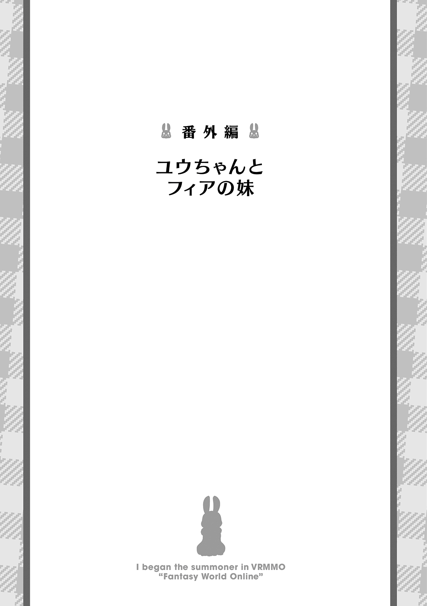
「で？ いいわけをきこーか？」
「......フィアもこの結果は予想外でした」
俺はサモナーのユウ。馴染みのアトリエに遊びに行って、 フィアちゃんの怪しげな調合現場を目撃した。
調合に夢中になっていた俺は、言葉巧みにフィアちゃんに薬を飲まされ、目が覚めたら......体が縮んでしまっていた!! 保育園児ぐらいに！ 視点は低いわ、手足は短いわ、舌は回らないわで、も〜大変！ 早く戻して！
「......解毒薬を探してきます。ユウちゃんはおりこうさんで待っていてください」
「はやくちてね......ん？ にゃにかおかちくなかった？」
フィアちゃんのセリフにすごい違和感があったんだが、確かめる前にフィアちゃんが工房から出ていってしまった。
しゃーなし。戻ってきてから聞けばいいか。
「きゅい〜？」
「〜〜〜？」
はぁ〜やれやれ。と、溜め息を吐いていると、ボーパルとティーニャの好奇心高い組が俺の傍に寄ってきた。二人ともちっちゃくなっちゃった俺を見て、不思議そうに首を傾げてるな。まぁ、目の前で人が縮めば首の一つも傾げたくなるか。俺は頭を抱えたい気分だけどね。
「きゅい？ きゅい〜？」
「もぅ〜。ぼーぱりゅったりゃくしゅぐったいよ〜。あはは」
目で見ても信じられなかったのか、ボーパルがすぴすぴと鼻を鳴らしてすり寄ってきて、匂いを確認してきた。
ボーパルが体を擦り付ける様に俺の足の周りをグルグル周るものだから、シマシマニーソ越しにボーパルのもふもふが、こちょこちょと足をくすぐってきた。
あまりのくすぐったさに、思わず笑い声を漏らしながら身をよじると、俺の体はあっさりとバランスを崩して、思いっきり尻餅をついてしまった。
「きゃっ！ うぅ......このかりゃだ、ばりゃんすとりづりゃい......」
ついでに呂律 も回らない。特に長文を喋ろうとするとダメだな。舌が絡まっちゃう。短い文章をゆっくり喋らないとダメだね。面倒だなぁ。
「きゅい......」
「うぅん。ぼーぱりゅは、わりゅくないょ。しんばいしてくりぇて、あいがとぉ」
「きゅい！」
くっそ。単語ごとに区切って発声してみたけど、ら行の言いづらさが半端ない。ニュアンスは伝わるみたいだし、これで我慢するしかないか。上手く言語化出来ない部分は行動で示せばいいしな！ とりあえずは、尻餅をついた俺を心配してくれたボーパルを抱き締める形で示そう！ ぎゅぅ〜！ もふもふぅ〜！
「んぅ......？ なんだりょ？ いちゅもよぃ、くしゅぐったいきがすぅ〜」
「きゅい〜？」
体が小さくなったことでいつもより大きく感じるボーパルを全力でもふもふしてたんだが、ボーパルのもふもふが少し肌をかすめるだけで、すごくくすぐったいの。抱っこしてもふもふしてるもんだから、あちこちがくすぐったくて、もどかしくて、うにやぁー！ って、なっちゃう。それでも、もふもふはやめないけどね!! ボーパル大好き！ もふもふ！
で、たぶんだけど。幼児化した影響で肌まで若返って、敏感な子供肌になったんじゃないかと思うんだよね。日差しに当たるとチリチリしそう......いやだなぁ。
「〜〜〜！ 〜〜!! 」
ん？ 近くに飛んできたティーニャが、なんか言ってる。
片手を腰に当てて、前屈みになりながら俺を指差してるな。なんだろう？ 「お姉ちゃんの言うことを聞きなさい！」って、感じかな？
「〜〜〜！」
「てぃーにゃは、おねーちゃんら、ないれしょ？」
ドヤ顔してるティーニャに口を尖らせながら文句を言ったんだが、完全に無視したティーニャが、両手を腰に当ててふんぞり返ってる。自分の体を大きく見せようとしてるのかな？ 体が縮んだとは言ってもティーニャよりは明らかに大きいんだけどな。精神的にもティーニャよりも大人だと信じたいし。
「ん〜。そうりゃ！ てぃーにゃ、てをぱーにして？」
「〜〜〜？ 〜〜！」
ぱー。と言いながら手の平を差し出すと、ティーニャもちっちゃいおててを開いて見せてくれた。
よし。それじゃぁ俺の手とティーニャの手をくっつけて......。
「にへへ〜。おりぇのほーが、おっきい♪」
「〜!? 〜〜〜!! 」
渾身のドヤ顔を見せつけてやった。
ガガーン!! と、大袈裟にショックを受けたティーニャが、両手でポコポコと俺の手の平を叩いてくるが、まったく痛くない。むしろ痒 いぐらいだわ！ ひゃんっ!? ちょっ！ 手の平くすぐるのは反則！ ティーニャの指細いんだから、めっちゃくすぐったいじゃん！
「〜〜〜〜♪」
「あはははは！ もぅ〜。てぃーにゃたら〜。えほっ！ んんっ。わりゃったりゃ、のどいちゃくなっちゃった......おみず、おみず......」
えっと、さっきフィアちゃんがお茶とクッキーを持ってきてくれて、まだ飲んでなかったからテーブルの上にそのまま残ってると思うんだが......。
「てーぶりゅ、たかい......」
「〜〜〜？」
下から見上げると机の大きさに圧倒されそうになるな。一回椅子によじ登る必要があるかも。さっきみたいにひっくり返らないように注意しながら登らないとな......。
「んにゃ」
「あぅ」
尻餅をついた状態から立ち上がろうと腕を突っ張ったら、ノゾミのもふもふしっぽでぺちんとされてしまった。
え？ なんで？ いや、別に痛くはないしいいんだけど、なんで急にぺちんされたの？
ん〜。わかんね。ちっちゃくなってからアイコンタクトが上手く働いてない気がする。ノゾミの顔見ても、かわいいなぁ〜としか思わないもん。もふもふしたいよぉ〜。手が届かない位置に逃げられたけど！
「んにゃ」
「あぅぅ〜」
ノゾミをもふるためにもう一回立とうとしてみたんだか、手を突っ張っぱろうとしたらまたノゾミに邪魔された......。嫌がらせ？ まさか嫌がらせなのか!? 俺ノゾミにイジメめられてる!? なんで!? 悲しい！
「うぅ〜。のじょみが、いじわりゅするぅ......ひっく......」
おぉぅ。悲しいと思ったら勝手に涙が......。そんなに悲しんでるわけでもないんだけどね!? 使い勝手悪いなぁ、この体......。
「ひっく。なみだとまりゃないよぉ......んぅ？ のじょみ......？」
「にゃぁ〜」
この歳でポロポロ涙零すとか恥ずかしいから、なんとか止めようと目を擦るんだけど、全然止まらないの。
あんまり擦ると目が真っ赤になっちゃうし、どうしようかな......って思ってたら、ちょっと困った様な顔をしたノゾミが俺の体を上ってきた。むぅ。何がしたいんだろ？ さっきからノゾミの思考が全然読めないや。
「にゃぁむ」
「ひゃっ！ の、のじょみ!? やぁ〜！ ほっぺざらざらすりゅぅ〜。あはは！」
首を傾げながらノゾミの方を向いたら、目の前まで顔を寄せていたノゾミにほっぺたを舐められちゃった。
いや、ほっぺたをって言うか、涙をって感じかな。頬を伝ってた涙をペロペロと舐め取られた感じ。ノゾミなりに慰めてくれてるのかも。もしかしてノゾミも俺をイジメるつもりはなかったのかな？ また転んだら危ないから立たないようにしてたとか......。だとしたら、心配してくれてありがとうね。ノゾミ大好き！
「ホー！」
「んぅ？ みじゅき......？」
何かのスイッチが入ったのか、めっちゃ毛繕 いしてくるノゾミに悶 えてると、どこかからミズキの声が聞こえてきた。
右向いてもボーパルにじゃれるティーニャしかいない。左向いてもぐで〜っと寝てるアイギスしかいない。後ろ向いても髪の毛をハムハムしてるノゾミしかいない。となれば上かな？
「ホ〜！」
「みじゅき!? あぶにゃいよ!? 」
予想通り空中にいたミズキは、両足でしっかりとカップを握っており、なるべく揺らさないようにゆっくりゆっくりと俺の前へと降りてきた。
慌ててカップを受け取ると、中には俺の飲みかけの紅茶が入ってた。わざわざ机の上から運んできてくれたのか......。
「みじゅき。あいがとぉ」
「ホー！」
本当は危なかったから注意しようかと思ったんだが......。俺のためを思って持ってきてくれたんだしな。俺が机によじ登るのとどっちが危ないかと言われたら微妙なところだし、素直に感謝をしておこう。一生懸命運んでくれたミズキもかわいかったしな！ ここ大事！
「んくっ、んくっ......ぷはぁ〜。いきかえりゅぅ〜」
「ホ〜」
紅茶をイッキ飲みしてジジ臭い感想を溢してると、どこからともなくハンカチを取り出したミズキにお口をふきふきされた。
なんだろう。ミズキにめっちゃ甲斐甲斐しくお世話されてるんだけど。今も飲み終わったカップを片付けてくれたし......。お母さんかな？
「みじゅき、おかあしゃ〜ん！」
「ホ〜？」
試しにお母さん呼びをしながらミズキの胸のもふもふに顔を突っ込んでみたら、そっと翼で包まれてなでなでされてしまった。
やっぱりお母さんだ!? 圧倒的な包容力！ 甘えさせて〜！ もふもふ！
「メェ〜」
「んみゅ......？ あいぎしゅ......？」
ミズキの胸に顔を埋めてふかふかしてると、背中にふかふかが......。
振り返ると、さっきまで部屋の隅っこで寝てたアイギスが俺の背中に寄り掛かる様に寝っ転がってた。
オヤツタイムでもないのに近づいてくるのは珍しいな？ なにかあったのかな？
「あいぎしゅ、どぉしたの？」
「メェ」
背中をポヨンポヨンしながら聞いてみたが、顔も上げてくれないからなにをしたいのかよく分かんない。とりあえずポヨンポヨンするのは楽しい。もこもこ低反発！ ふっわふわ！
「そうりゃ！ あいぎしゅ、おやつたべう〜？ くっきーおいしーよ〜？」
「メェ？」
オヤツと聞いて、耳をピクン！ と跳ねさせたアイギスが顔を上げてこっちを見た。
うんうん。アイギスと言えば食欲と睡眠欲だもんね。アイギスが何か求めてるとしたらこのどっちかだよ。んで、お昼寝は自由にしてたわけだから、俺に求めてるのはやっぱりオヤツだったわけだ！ あったまいい！
「メェ！ ......メェ〜」
「あいぎしゅ？ たべていーのよ？」
起き上がったアイギスが俺の手からクッキーを食べようとしたんだが、チラリと俺の顔を窺うと、鼻先で俺の手を押し返してきた。押し返しておきながらめっちゃ物欲しそうに手の上のクッキーを見つめてくるので、もう一回アイギスに差し出したのに今度は顔を逸らされた。顔を逸らしておきながら目はチラチラとクッキーを見てるけどね。
「たべたいんでしょ？ どうじょ！」
「メェ〜......」
アイギスはダイエットなんてしなくてもかわいいし、好きなものを我慢するのは俺の主義に反するので、頬 っぺたに抉り込むようにクッキーを押し付けたら、渋々と言った感じでアイギスがクッキーを咥 えてくれた。うむうむ。それでこそアイギスだな。
「メェ！」
「んむぅ!? あいぎしゅ？ くれうの......？」
「メェ」
アイギスがクッキーを咥えたので、食べるのかな〜って思ってたのに、さっきのお返しと言わんばかりにグイグイと俺の口へとクッキーを押し付けてきた。
まさか、アイギスが自分のオヤツをあげるだなんて！ 空から槍でも降ってくるんじゃないのか!? でもアイギスも食欲がないとかじゃなくて、食べたいけど俺に分けてくれてる感じなんだよなぁ。折角の好意を無下にするのも悪いけど、食べるの大好きなアイギスからオヤツを奪うのも忍びないし......そうだ！
「なりゃ、ふたりではんぶんこしよー！ んっ」
「メェ〜」
アイギスが咥えているクッキーを反対側から咥えて、ちょっと力を入れて半分こにした。
むぐむぐ。うん。なかなか美味しいな。中に入ってるナッツがいいアクセントになってるね。
「おいし〜ね〜」
「メェ〜」
半分こにしたクッキーを一口で食べちゃったアイギスがその場で横になったので、もふもふのお腹を背もたれにさせてもらって、残りのクッキーを食べた。クッキーとかって、リスみたいに前歯を使ってちょっとずつ削って食べるのが楽しいし、美味しいよね。リアルだとボロボロ食べこぼしが出そうでしにくいけどさ。
「ふぁ〜。たべたりゃねむくなってきちゃった......」
「メェ」
笑って泣いて、お茶飲んでオヤツ食べて。体が縮んでる事もあってか、眠気が襲ってきた。
それに、アイギスのお腹の寝心地が良すぎるんだよな〜。ふぁ〜。
「んんぅ〜。もうりゃめ......おやしゅみ、あいぎしゅ......」
「メェ〜」
「......お待たせしました。おりこうさんで待っていましたか」
「んみゅ......？」
優しい微睡 みに手放しそうになった意識を慌てて引き止めて、目をこすって前を見た。
ちょっとぼやけた視界に映ってるのはやっぱりフィアちゃんだ。片手に大き目の紙袋を持ってるけど、あの中に解毒薬が入ってるのかな？
「む〜。ふぃあちゃん、おしょい！」
「......すみません。色々準備してたら遅くなりました」
ん？ 準備？ なんだろう？ 解毒薬そのものが無かったから、材料を揃えてきてくれたとか？
「......いえ、その症状を解除するには解毒薬だけでは足りません。儀式が必要です」
「ぎちき......？」
「......はい。フィアはお薬を準備しますので、ユウちゃんはこの衣装に着替えてください」
そう言うと、フィアちゃんは片手で持っていた紙袋を俺に渡してきた。
なんだ。その紙袋は材料じゃなくって儀式の衣装が入ってたのね。にしても儀式だなんて面倒くさいなぁ......もはや呪いの類じゃん。解呪方法をフィアちゃんが知っててよかったよ。
「......ふぃあちゃん？ このおよーふくはなぁに？」
「......姉さんがフィアにお土産として買ってきた服です。使う事はないと思っていましたが今回の儀式にはピッタリです」
いや、そう言うなら着るけどね。着るけどさ......なんでフィアちゃんは俺と目を合わせてくれないのかな〜？ 嫌な予感はするけど、フィアちゃんしか解毒方法を知らないんだからしゃーなし......。
「ふぃあちゃん、きがえたよ......？」
「......はい。やはりフィアの予想通りでした。ユウちゃんとってもかわいいです」
俺がフィアちゃんに着させられたのは、ピンクでフリフリたっぷりのお人形さんっぽいドレスだ。確かにエルが好きそうなお洋服だな。本当に儀式に必須なのかは謎だが。ぶっちゃけめちゃくちゃ疑ってるが。
「とこりょで、しゃっきかりゃ、きににゃってたんだけど、ゆーちゃんってなに？ ゆーしゃんでしょ？」
「......いえ、今のユウさんはどこから見てもユウちゃんです」
むぅ......。ヒラヒラピンクドレスを着てるから否定しにくい......いや、このドレスを着る前からユウちゃん呼びだった気もするけどもさ。
「......お薬の準備が出来ました。あ〜んしてください」
「あ〜ん......」
フィアちゃんがスプーンに乗ったゼリーっぽい物を差し出してきたので、ついあ〜んしちゃったけど、別に自分で食べれば良くね？ まぁ、既にフィアちゃんに口の中にスプーンを突っ込まれてるから今更だが。
「あっ、あまくておいちぃ〜」
「......ユウちゃんのためにイチゴ味にしておきました」
俺が飲み込んだのを確認して、次のスプーンを用意しているフィアちゃんはちょこっとドヤ顔で嬉しそうだ。イチゴ味美味しいもんね。流石フィアちゃんだね。
「......あ〜ん。......ふふっ。フィアには姉さんしかいなかったので、ユウちゃんみたいな妹が欲しかったのです」
「あ〜......」
片手を頬に当てたフィアちゃんが、いやんいやんと首を振って、ニヤケそうな頬を隠してる。今ので確信持ったけど、この格好とあ〜んはフィアちゃんの趣味だよね？ 明らかにおかしいもんね？ だって、鑑定しても普通の服だったもの。お薬は本物みたいだし、害が有るわけじゃないからいいけどさ。
にしても、妹が欲しいねぇ。リアルに妹が居る身としては、実妹なんていいもんじゃないと思うけどな〜。あ、でもフィアちゃんみたいな妹なら欲しいわ。これが隣の芝生は青く見える現象か......隣の妹はかわいく見える現象？
「しょーがにゃいなぁ〜。きょーだけは、ふぃあちゃんの、いもーとになってあげりゅ。よろしくね、ふぃあおねーちゃん」
「......！ ユウちゃんかわいすぎです!! 」
「むぎゅぅ......」
フィアちゃんのおままごとに付き合ってあげる事にしたら、感極まった様子のフィアちゃんに思いっきり抱き締められてしまった。痛くはないんだけどちょっと苦しいかも......。タップタップ！
「......フィアは妹が出来たら一緒にしたかったことがあるのです。ユウちゃん一緒にしましょう」
「むぅ......いいけりょ。おくしゅり、じぇんぶ、たべてかりゃね！」
「......フィアにお任せですっ」
個人的にはイチゴゼリーぐらい一人で食べられるんだが、フィアちゃんがスプーンとお皿を手離さないので、仕方なくあ〜んすると、嬉しそうにスプーンを突っ込まれた。
......うん。フィアちゃんが楽しいならそれでいいけど、これ妹扱いを通り越して娘扱いだよね？ あ、風邪をひいた妹のお世話してみたかったとか？ それなら納得。
「ごちそーさまでした！」
「......お粗末様でした。ちゃんと全部食べられましたね。偉いです」
食器を片付けたフィアちゃんに、頭をなでなでして褒められた。
イチゴ味のゼリーを完食しただけでこんなに褒められるとは......。フィアちゃんに妹がいたらめっちゃ甘やかされそうだな。エルも妹を甘やかすタイプだしね。
「......これで、もう少ししたらユウちゃんの姿も元に戻るはずです。その前にフィアに協力してください」
「うん。いーよ。しょれで、にゃにをすりゅの？」
薬飲んでもすぐに戻る訳じゃないのな。効果時間を短くするタイプの薬だったのかな？まぁ、治るのならどっちでもいいけどさ。
「......フィアがしたかったのはコレです」
「まほーしょーじょふぃあ......？ こりぇなぁに？」
よくぞ聞いてくれました！ と、フィアちゃんが取り出したのは一冊の本だ。かわいいふりふりの服を着たフィアちゃんらしき女の子とウサギが表紙に描かれている絵本っぽいやつだな。
どことなく手作り感が漂ってる絵本だけど、フィアちゃんが描いたのかな？ 錬金術も出来て、料理も出来て、お洋服も作れて、絵も描けるのか〜。フィアちゃんは何でもできるな！ すごい！
「......この絵本は姉さんと二人で作りました。ボーパルちゃんと契約して魔法少女になったフィアが、悪い魔人さんをばったばった倒すのです」
「にゃにしょれおもしりょしょう!! 」
おっと、興奮しすぎて呂律が崩壊してしまった。だって凄く面白そうなんだもん！ 「なにそれ面白そう！」って叫んじゃうのも致し方なしだよね！
「よみたいよみたい！ みして！」
「......ふふ。慌てなくても、今からフィアが読み聞かせしてあげます」
あー。なるほど。フィアちゃんがしたかったのは絵本の読み聞かせなのね。フィアちゃんは本が大好きだもんね〜。
......でもやっぱり、妹扱いよりも娘扱い寄りだと思うの。別にいいんだけどね。
「......ユウちゃんの席はこちらです」
「えぇ〜......」
俺の隣へと女の子座りで腰を下ろしたフィアちゃんが、自分の膝をポンポン叩いてる。そこに座れってことなんだろうけど、流石に恥ずかしくないか......？ ピッタリくっ付いちゃうんだよ......？
「......くっ付かなければちゃんと読めませんよ。よいしょ」
「わにゃ〜......」
乗るべきか乗らざるべきか迷ってると、身を乗り出したフィアちゃんに抱えあげられて、強制的に座らされてしまった。両手をお腹に回して捕まえられてるから脱出もできないね。
「にげにゃいかりゃ、はなちて〜」
「......ん〜。もうちょっとだけ......ユウちゃん温かくて気持ちいいです......」
「むきゅぅ......」
背後からぎゅぅ〜っとぬいぐるみのように抱きしめられてしまった。しかも、フィアちゃんは俺の肩に顎を乗せてるようで、フィアちゃんの細い髪とささやき声が耳をくすぐってくる!!
「くびしゅじ、じょくじょくすりゅかりゃ、ひゃめてぇ〜！ ひゃんっ！ みみ、ふ〜ってすりゅのきんち！ ひぅっ！」
「......ふふっ。仕方ありませんね」
フィアちゃんがようやく離してくれた時には、既に体力を使い果たしてフィアちゃんへと体を預ける事しか出来ない状態になってた。なんか、今日のフィアちゃんドＳインストールしてない？ わざと俺を恥ずかしがらせたり、困らせて楽しんでるような気がするんだけど......。
「......気のせいです。ユウちゃん成分も補給したので、読み聞かせを始めましょう」
「ゆーちゃんしぇーぶんってにゃに......？ ふぅ、はじまりゅまえかりゃ、ちゅかれちゃったよ......」
ずり落ちかけてた体をフィアちゃんに抱え直されて、俺の前で開かれた絵本を読み聞かせして貰ってるんだけど......全然内容が頭に入ってこない......。
ただでさえ眠かったのに、疲れさせられた上にフィアちゃんに抱きかかえられて、耳元で優しく読み聞かせまでされてるんだもん......。ちっちゃくなってなくても意識を保っているのは至難の業だよ......。
「......おねむさんですね。いいですよ。フィアがずっと一緒にいてあげます」
「ぅん......」
もはや完全に船をこぎだして読み聞かせどころじゃなくなった俺を、フィアちゃんが優しく抱きしめてくれた。
耳に滑り込んで来たフィアちゃんの囁きを最後に、優しい温もりに抱かれながらふんわりと眠りに落ちていった......。
◆◆◆
「......んぁ？ 寝ちゃってたのか......」
寝起きで目がしょぼしょぼする......。ん〜。なんか不思議な夢を見てた気がするな。俺が子供になっちゃって、フィアちゃんにかわいがられるの。ボーパル達にも甘やかされてたな〜。変な夢だわ〜。
「......はい。ぐっすり眠っていました」
「ふぇ？ フィアちゃん......？」
忘れないうちに夢の内容を振り返っていると、頭の上からフィアちゃんの声が降ってきた。コロンと寝返りを打って真上を向くと、フィアちゃんのやれやれ顔が俺を見下ろしているな。
ん〜？ 今どういう状況？ フィアちゃんの顔が上にあって〜。体が横にあって〜。足が下にあって〜。んん!? 膝枕!? 俺フィアちゃんの膝枕で寝てるの!? なんで!?
「......流石に大きくなってしまうと、抱えるのは大変ですから」
「いや、そうじゃなくて......」
フィアちゃんが気にしてないならいいんだけどね......。
で、なんとなくそんな気はしてたけど、俺が縮んでたのは夢じゃなくって本当の事だったわけだ。記憶もハッキリしてるし間違いないな。
「さて、元の身体に戻れたことだし、今日の所は帰ろうかな......」
名残惜しいがフィアちゃんの膝から頭を上げて、体を起こした。
実際寝てたのは十分ぐらいだったが、疲れはしっかり取れてるな。凄い癒し効果だ！ 流石はフィアちゃんの膝枕！
「......どこに行くのですか。目が覚めたのなら絵本の続きを読みますよ」
「ん？ もう体が戻ったんだし、姉妹のおままごとはお終いじゃないの？」
「......なにを言っているんですか。ユウちゃんは『今日だけはフィアの妹になってあげる』と、言いました。ですから今日が終わるまではあなたはフィアの妹です」
あ〜、確かにそんなこと言った気がするな。とはいえ、小さくなったから妹だったのであって、元に戻ってからも同じ扱いをされたら恥ずかしいんだけども......。フィアちゃんにそんな不安そうな顔されたら断れないわな。
「しょうがないなぁ。よろしくねフィアお姉ちゃん」
「......はい。よろしくお願いします」
たまにはフィアちゃんの妹として過ごすのも、悪くはないよな？
「......絵本が終わったらお着換えをしましょう。姉さんが買ってきた服はまだまだあります。お着換えが済んだらお散歩に行きましょう。フィアがおててを繋いであげます」
「ちょ、ちょっと待って？ やる事多すぎない？ しかも外まで歩くの!? このピンクのフリフリで!? ちっちゃい時ならまだしも、元に戻ってるのにそれはちょっと......」
「......問題ありません。こんな事もあろうかと、お薬をもう一つ用意しておきました」
「ひぃっ！ もう縮むのはいやぁ〜！」
エルもフィアちゃんを溺愛してるけど、シスコンは遺伝だったんだなって、瞳を輝かせながら大量のドレスを取り出しているのを見て理解したね。
◆◆◆
......あ、その後どうなったのかは俺の尊厳を守るためにも秘密って事でお願いします。
もふもふ！
この度は『ＶＲＭＭＯでサモナー始めました』の三巻を手に取っていただき、ありがとうございます！
三度目ともなると、そろそろ見慣れてきたであろうテトメトでございます。
早いものでもう三巻ですねぇ〜。ちょっと前に二巻のあとがきを書いてたような気がするんだけど、あっという間だったね。ここまで続けられたのも、こうして手に取ってくださる読者の皆様のおかげであります。ありがたや〜。
ではそろそろ、Ｖサモの作成秘話に移ろうかな。
って、なに？ もうページがないだと？ 仕方がないから空飛ぶヤギが、寝ながら巨大怪獣に変身してた話は次回に回すか......。
ということで、お次は四巻のあとがきで会いましょう！
それでは皆様ご一緒に......。
もふもふ！
著者プロフィール
テトメト
Tetometo
富山出身のなろう民。〝もふもふ〟と〝かわいい〟をこよなく愛し、好きすぎて自分で小説を書き始める。あっという間にもう３巻。どこまで行けるのかドキドキしつつ、今日も変わらず執筆中。これからも、もふもふ活動していくのでついてこれる奴だけついてこいッ！
秋咲 りお
Akisaki Rio
岐阜県出身のイラストレーター。動物好きで、獣耳もふもふイラストを好んで描いています。書籍の挿絵から、イラストメイキング本、マンガ制作など幅広く活躍中。ペットのデグーちゃんをモフって癒される毎日です。
ＶＲＭＭＯでサモナー始めました３
2018年７月１日発行 ver.1.0
著 者 テトメト
発行所 TOブックス
〒150-0045 東京都渋谷区神泉町18-８
松濤ハイツ２Ｆ
03-6452-5766（編集）
0120-933-772（営業フリーダイヤル）
Ⓒ2018 Tetometo
※無断で複製・複写・データ配信などをすることは、かたくお断りいたします。
本電子書籍は下記にもとづいて制作しました
ＶＲＭＭＯでサモナー始めました３
発行日 2018年７月１日 第１刷発行
本作品の全部または一部を無断で複製、転載、配信、送信したり、ホームぺージ上に転載することを禁止します。また、本作品の内容を無断で改変、改ざん等を行うことも禁止します。
本作品購入時にご承諾いただいた規約により、有償・無償にかかわらず本作品を第三者に譲渡することはできません。
本作品を示すサムネイルなどのイメージ画像は、再ダウンロード時に予告なく変更される場合があります。
本作品は縦書きでレイアウトされています。
また、ご覧になるリーディングシステムにより、表示の差が認められることがあります。